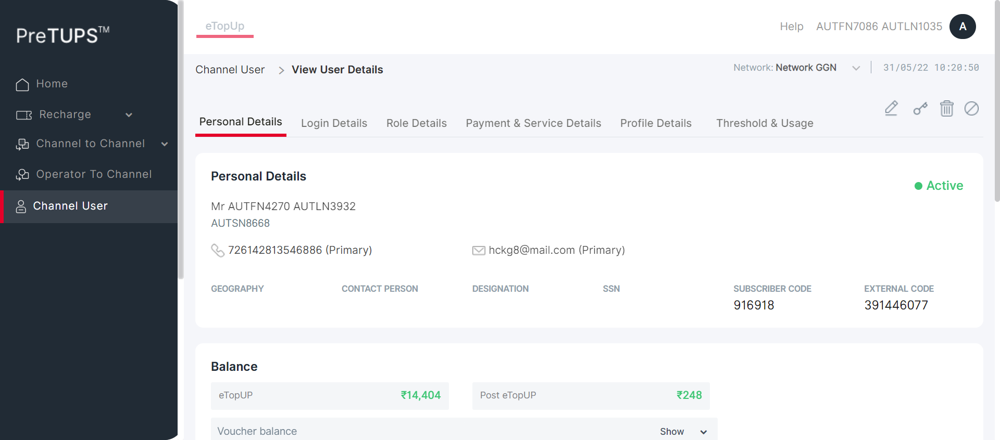
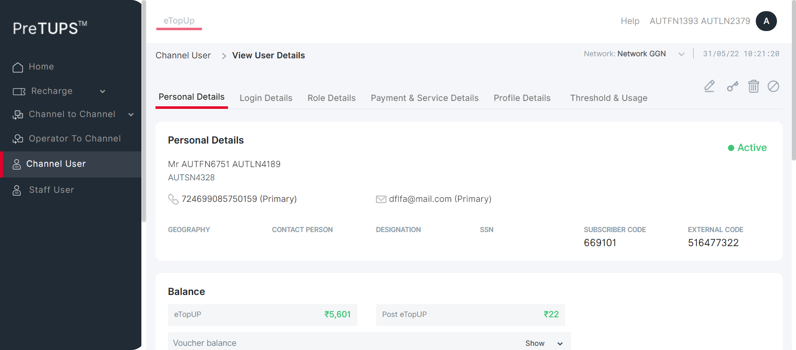
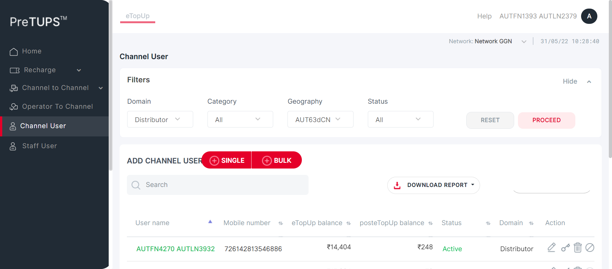
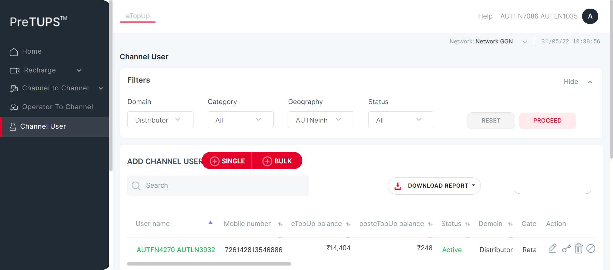
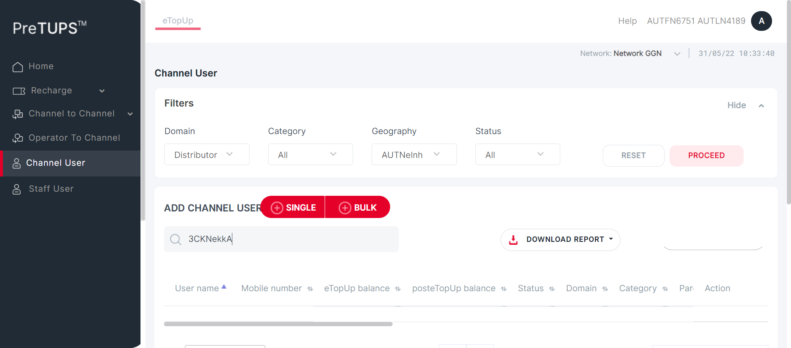
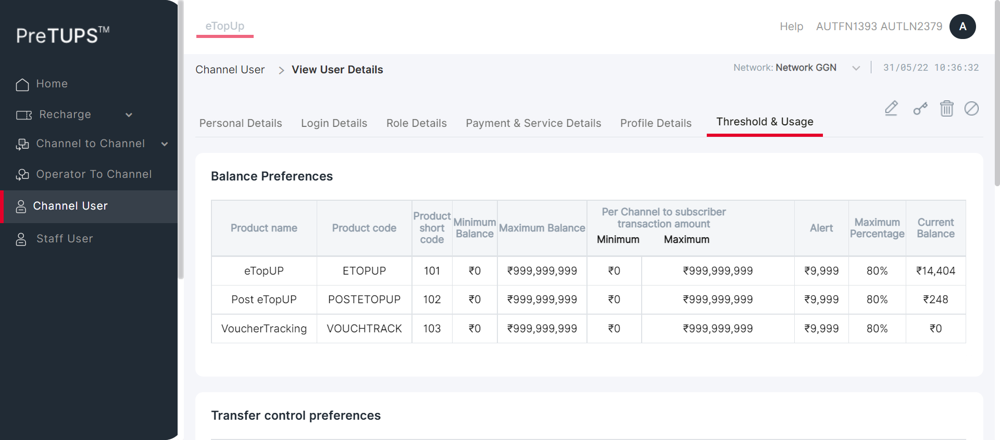
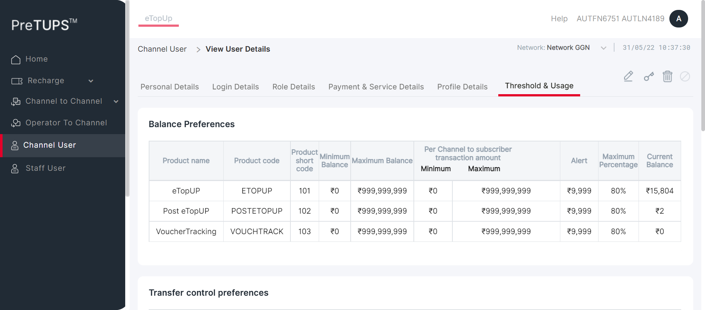
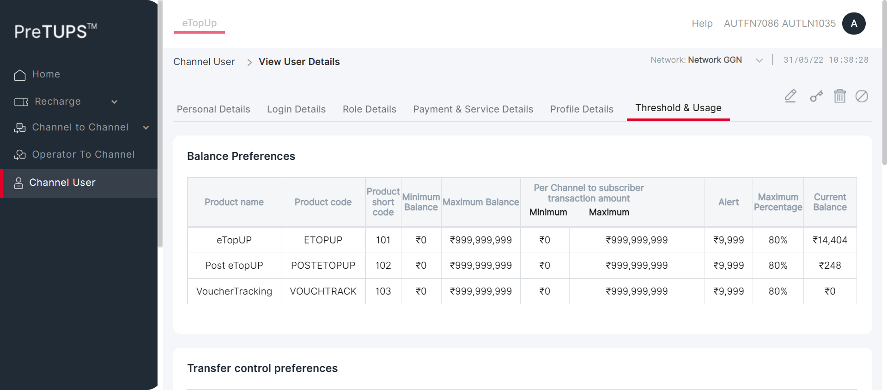
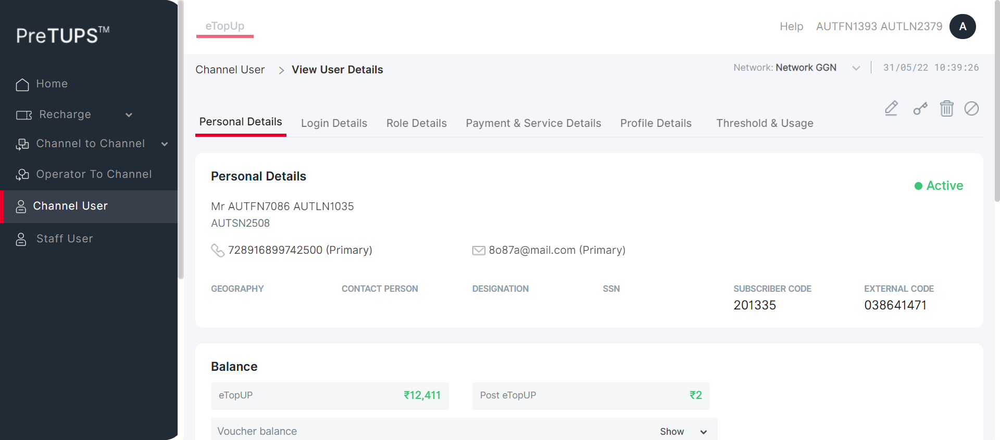
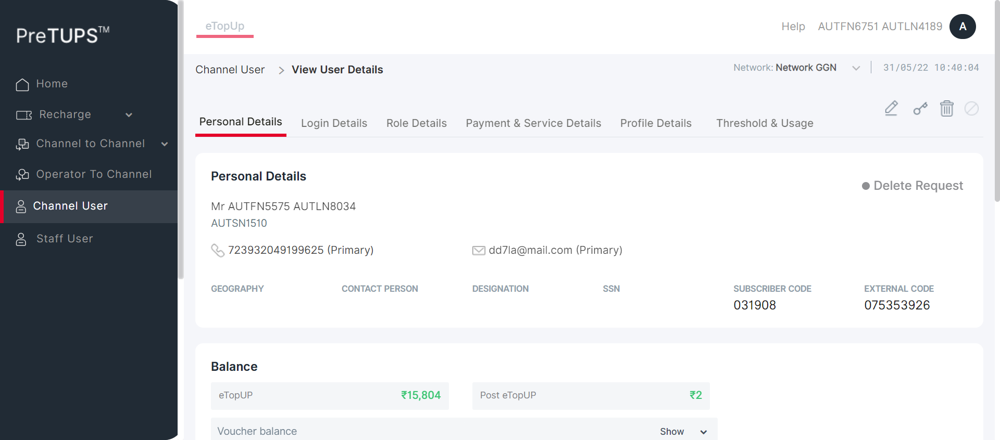

| Status | Timestamp | Details |
|---|---|---|
| info_outline | 10:18:34 AM | Category Code for Super Distributor: DIST |
| info_outline | 10:18:34 AM | Entered webInterface(Super Distributor) |
| info_outline | 10:18:34 AM | webInterface() :: select query: Select WEB_INTERFACE_ALLOWED from categories where category_name= ? |
| info_outline | 10:18:35 AM | Database Returns: WEB_INTERFACE_ALLOWED (Y) |
| info_outline | 10:18:35 AM | Exited webInterface() |
| info_outline | 10:18:35 AM | Entered PerformViewChannelUserByMSISDN(Super Distributor, Dealer, 724699085750159, 1357, Root, 2, Super Distributor) |
| info_outline | 10:18:35 AM | Login ID Found as: AUT_48675 |
| info_outline | 10:18:35 AM | Password Found as: com@2468 |
| info_outline | 10:18:35 AM | LOGINID : AUT_48675 |
| info_outline | 10:18:35 AM | LoginID found as: AUT_48675 |
| info_outline | 10:18:35 AM | Password found as: com@2468 |
| info_outline | 10:18:35 AM | Username found as: AUTFN1393 AUTLN2379 |
| info_outline | 10:18:36 AM | Trying to select Language |
| info_outline | 10:18:36 AM | Language selected successfully as: English |
| info_outline | 10:18:36 AM | Trying to enter Login ID |
| info_outline | 10:18:37 AM | Login ID entered successfully as: AUT_48675 |
| info_outline | 10:18:37 AM | Trying to enter Password |
| info_outline | 10:18:37 AM | Password entered successfully as: com@2468 |
| info_outline | 10:18:37 AM | Trying to click Login Button |
| info_outline | 10:18:37 AM | Login button clicked successfully |
| info_outline | 10:18:37 AM | Error Message Found on Login Screen: |
| info_outline | 10:18:37 AM | Waiting for spinner |
| info_outline | 10:18:37 AM | Waiting for spinner to stop |
| info_outline | 10:18:39 AM | Spinner stopped |
| info_outline | 10:18:39 AM | Trying clicking Channel User Heading.. |
| info_outline | 10:18:41 AM | User clicked Channel User Heading. |
| info_outline | 10:18:41 AM | Waiting for spinner |
| info_outline | 10:18:41 AM | Waiting for spinner to stop |
| info_outline | 10:18:42 AM | Spinner stopped |
| info_outline | 10:18:42 AM | Trying to enter search by field Of Child User.. |
| info_outline | 10:18:45 AM | Field entered :724699085750159 |
| info_outline | 10:18:45 AM | Trying to click on the User Name of the Child User.. |
| info_outline | 10:18:45 AM | Clicked on the User Name of the Child User. |
| info_outline | 10:18:45 AM | Waiting for spinner |
| info_outline | 10:18:45 AM | Waiting for spinner to stop |
| info_outline | 10:18:47 AM | Spinner stopped |
| info_outline | 10:18:47 AM | Trying to get the UserName |
| info_outline | 10:18:47 AM | Fetched User Name of Child User :Mr AUTFN6751 AUTLN4189 |
| info_outline | 10:18:47 AM | Fetched User Name :AUTFN6751 AUTLN4189 |
| info_outline | 10:18:47 AM | Trying to get the MSISDN |
| info_outline | 10:18:47 AM | Fetched MSISDN of Child User :724699085750159 (Primary) |
| info_outline | 10:18:47 AM | Fetched MSISDN :724699085750159 |
| info_outline | 10:18:47 AM | Trying to get the Geography |
| info_outline | 10:18:47 AM | Fetched Geography of Child User : |
| info_outline | 10:18:47 AM | Trying to get the External Code |
| info_outline | 10:18:47 AM | Fetched External Code of Child User :516477322 |
| info_outline | 10:18:47 AM | Trying to get the Channel User Domain |
| info_outline | 10:18:47 AM | Fetched Domain of Child User :Distributor |
| info_outline | 10:18:47 AM | Trying to get the Channel User Category |
| info_outline | 10:18:47 AM | Fetched Category of Child User :Dealer |
| info_outline | 10:18:47 AM | Trying to get the Channel User's Parent Category |
| info_outline | 10:18:47 AM | Fetched Parent Category of Child User :Super Distributor |
| info_outline | 10:18:47 AM | User Name fetched from DataProvider :AUTFN6751 AUTLN4189 |
| info_outline | 10:18:47 AM | MSISDN fetched from DataProvider :724699085750159 |
| info_outline | 10:18:47 AM | Geography fetched from DataProvider :AUTNelnh |
| info_outline | 10:18:47 AM | External Code fetched from DataProvider :516477322 |
| info_outline | 10:18:47 AM | Domain fetched from DataProvider :Distributor |
| info_outline | 10:18:47 AM | Category fetched from DataProvider :Dealer |
| info_outline | 10:18:47 AM | Parent Category fetched from DataProvider :Super Distributor |
| info_outline | 10:18:47 AM | View Channel User is not successful with expected details in the Personal Details Tab |
| cancel | 10:18:47 AM | View Channel User is not successful with expected details in the Personal Details Details Tab |
| error | 10:19:08 AM | Error while getting SSH Server Instance : com.jcraft.jsch.JSchException: java.net.ConnectException: Connection timed out: connect |
| cancel | 10:19:08 AM | Catalina Log |
| info_outline | 10:19:09 AM |
| Status | Timestamp | Details |
|---|---|---|
| info_outline | 10:19:09 AM | Category Code for Super Distributor: DIST |
| info_outline | 10:19:09 AM | Entered webInterface(Super Distributor) |
| info_outline | 10:19:09 AM | webInterface() :: select query: Select WEB_INTERFACE_ALLOWED from categories where category_name= ? |
| info_outline | 10:19:09 AM | Database Returns: WEB_INTERFACE_ALLOWED (Y) |
| info_outline | 10:19:09 AM | Exited webInterface() |
| info_outline | 10:19:09 AM | Entered PerformViewChannelUserByMSISDN(Super Distributor, Agent, 728916899742500, 1357, Root, 3, Super Distributor) |
| info_outline | 10:19:09 AM | Login ID Found as: AUT_48675 |
| info_outline | 10:19:09 AM | Password Found as: com@2468 |
| info_outline | 10:19:09 AM | LOGINID : AUT_48675 |
| info_outline | 10:19:09 AM | LoginID found as: AUT_48675 |
| info_outline | 10:19:09 AM | Password found as: com@2468 |
| info_outline | 10:19:09 AM | Username found as: AUTFN1393 AUTLN2379 |
| info_outline | 10:19:10 AM | Trying to select Language |
| info_outline | 10:19:11 AM | Language selected successfully as: English |
| info_outline | 10:19:11 AM | Trying to enter Login ID |
| info_outline | 10:19:11 AM | Login ID entered successfully as: AUT_48675 |
| info_outline | 10:19:11 AM | Trying to enter Password |
| info_outline | 10:19:11 AM | Password entered successfully as: com@2468 |
| info_outline | 10:19:11 AM | Trying to click Login Button |
| info_outline | 10:19:11 AM | Login button clicked successfully |
| info_outline | 10:19:11 AM | Error Message Found on Login Screen: |
| info_outline | 10:19:11 AM | Waiting for spinner |
| info_outline | 10:19:11 AM | Waiting for spinner to stop |
| info_outline | 10:19:13 AM | Spinner stopped |
| info_outline | 10:19:13 AM | Trying clicking Channel User Heading.. |
| info_outline | 10:19:13 AM | User clicked Channel User Heading. |
| info_outline | 10:19:13 AM | Waiting for spinner |
| info_outline | 10:19:14 AM | Waiting for spinner to stop |
| info_outline | 10:19:14 AM | Spinner stopped |
| info_outline | 10:19:14 AM | Trying to enter search by field Of Child User.. |
| info_outline | 10:19:15 AM | Field entered :728916899742500 |
| info_outline | 10:19:15 AM | Trying to click on the User Name of the Child User.. |
| info_outline | 10:19:15 AM | Clicked on the User Name of the Child User. |
| info_outline | 10:19:15 AM | Waiting for spinner |
| info_outline | 10:19:15 AM | Waiting for spinner to stop |
| info_outline | 10:19:16 AM | Spinner stopped |
| info_outline | 10:19:16 AM | Trying to get the UserName |
| info_outline | 10:19:16 AM | Fetched User Name of Child User :Mr AUTFN7086 AUTLN1035 |
| info_outline | 10:19:16 AM | Fetched User Name :AUTFN7086 AUTLN1035 |
| info_outline | 10:19:16 AM | Trying to get the MSISDN |
| info_outline | 10:19:16 AM | Fetched MSISDN of Child User :728916899742500 (Primary) |
| info_outline | 10:19:16 AM | Fetched MSISDN :728916899742500 |
| info_outline | 10:19:16 AM | Trying to get the Geography |
| info_outline | 10:19:17 AM | Fetched Geography of Child User : |
| info_outline | 10:19:17 AM | Trying to get the External Code |
| info_outline | 10:19:17 AM | Fetched External Code of Child User :038641471 |
| info_outline | 10:19:17 AM | Trying to get the Channel User Domain |
| info_outline | 10:19:17 AM | Fetched Domain of Child User :Distributor |
| info_outline | 10:19:17 AM | Trying to get the Channel User Category |
| info_outline | 10:19:17 AM | Fetched Category of Child User :Agent |
| info_outline | 10:19:17 AM | Trying to get the Channel User's Parent Category |
| info_outline | 10:19:17 AM | Fetched Parent Category of Child User :Super Distributor |
| info_outline | 10:19:17 AM | User Name fetched from DataProvider :AUTFN7086 AUTLN1035 |
| info_outline | 10:19:17 AM | MSISDN fetched from DataProvider :728916899742500 |
| info_outline | 10:19:17 AM | Geography fetched from DataProvider :AUTNelnh |
| info_outline | 10:19:17 AM | External Code fetched from DataProvider :038641471 |
| info_outline | 10:19:17 AM | Domain fetched from DataProvider :Distributor |
| info_outline | 10:19:17 AM | Category fetched from DataProvider :Agent |
| info_outline | 10:19:17 AM | Parent Category fetched from DataProvider :Super Distributor |
| info_outline | 10:19:17 AM | View Channel User is not successful with expected details in the Personal Details Tab |
| cancel | 10:19:17 AM | View Channel User is not successful with expected details in the Personal Details Details Tab |
| error | 10:19:38 AM | Error while getting SSH Server Instance : com.jcraft.jsch.JSchException: java.net.ConnectException: Connection timed out: connect |
| cancel | 10:19:38 AM | Catalina Log |
| info_outline | 10:19:38 AM |
| Status | Timestamp | Details |
|---|---|---|
| info_outline | 10:19:38 AM | Category Code for Super Distributor: DIST |
| info_outline | 10:19:38 AM | Entered webInterface(Super Distributor) |
| info_outline | 10:19:38 AM | webInterface() :: select query: Select WEB_INTERFACE_ALLOWED from categories where category_name= ? |
| info_outline | 10:19:38 AM | Database Returns: WEB_INTERFACE_ALLOWED (Y) |
| info_outline | 10:19:38 AM | Exited webInterface() |
| info_outline | 10:19:38 AM | Entered PerformViewChannelUserByMSISDN(Super Distributor, Agent, 723932049199625, 1357, Root, 4, Dealer) |
| info_outline | 10:19:39 AM | Login ID Found as: AUT_48675 |
| info_outline | 10:19:39 AM | Password Found as: com@2468 |
| info_outline | 10:19:39 AM | LOGINID : AUT_48675 |
| info_outline | 10:19:39 AM | LoginID found as: AUT_48675 |
| info_outline | 10:19:39 AM | Password found as: com@2468 |
| info_outline | 10:19:39 AM | Username found as: AUTFN1393 AUTLN2379 |
| info_outline | 10:19:39 AM | Trying to select Language |
| info_outline | 10:19:40 AM | Language selected successfully as: English |
| info_outline | 10:19:40 AM | Trying to enter Login ID |
| info_outline | 10:19:40 AM | Login ID entered successfully as: AUT_48675 |
| info_outline | 10:19:40 AM | Trying to enter Password |
| info_outline | 10:19:40 AM | Password entered successfully as: com@2468 |
| info_outline | 10:19:40 AM | Trying to click Login Button |
| info_outline | 10:19:40 AM | Login button clicked successfully |
| info_outline | 10:19:40 AM | Error Message Found on Login Screen: |
| info_outline | 10:19:40 AM | Waiting for spinner |
| info_outline | 10:19:40 AM | Waiting for spinner to stop |
| info_outline | 10:19:42 AM | Spinner stopped |
| redo | 10:19:42 AM | View Channel User cannot be performed by Super Distributor for Agent [ For Parent Dealer ] |
| Status | Timestamp | Details |
|---|---|---|
| info_outline | 10:19:43 AM | Category Code for Super Distributor: DIST |
| info_outline | 10:19:43 AM | Entered webInterface(Super Distributor) |
| info_outline | 10:19:43 AM | webInterface() :: select query: Select WEB_INTERFACE_ALLOWED from categories where category_name= ? |
| info_outline | 10:19:43 AM | Database Returns: WEB_INTERFACE_ALLOWED (Y) |
| info_outline | 10:19:43 AM | Exited webInterface() |
| info_outline | 10:19:43 AM | Entered PerformViewChannelUserByMSISDN(Super Distributor, Retailer, 726142813546886, 1357, Root, 5, Agent) |
| info_outline | 10:19:43 AM | Login ID Found as: AUT_48675 |
| info_outline | 10:19:43 AM | Password Found as: com@2468 |
| info_outline | 10:19:43 AM | LOGINID : AUT_48675 |
| info_outline | 10:19:43 AM | LoginID found as: AUT_48675 |
| info_outline | 10:19:43 AM | Password found as: com@2468 |
| info_outline | 10:19:43 AM | Username found as: AUTFN1393 AUTLN2379 |
| info_outline | 10:19:43 AM | Trying to select Language |
| info_outline | 10:19:44 AM | Language selected successfully as: English |
| info_outline | 10:19:44 AM | Trying to enter Login ID |
| info_outline | 10:19:44 AM | Login ID entered successfully as: AUT_48675 |
| info_outline | 10:19:44 AM | Trying to enter Password |
| info_outline | 10:19:44 AM | Password entered successfully as: com@2468 |
| info_outline | 10:19:44 AM | Trying to click Login Button |
| info_outline | 10:19:44 AM | Login button clicked successfully |
| info_outline | 10:19:44 AM | Error Message Found on Login Screen: |
| info_outline | 10:19:44 AM | Waiting for spinner |
| info_outline | 10:19:44 AM | Waiting for spinner to stop |
| info_outline | 10:19:45 AM | Spinner stopped |
| redo | 10:19:45 AM | View Channel User cannot be performed by Super Distributor for Agent [ For Parent Agent ] |
| Status | Timestamp | Details |
|---|---|---|
| info_outline | 10:19:46 AM | Category Code for Dealer: SE |
| info_outline | 10:19:46 AM | Entered webInterface(Dealer) |
| info_outline | 10:19:46 AM | webInterface() :: select query: Select WEB_INTERFACE_ALLOWED from categories where category_name= ? |
| info_outline | 10:19:46 AM | Database Returns: WEB_INTERFACE_ALLOWED (Y) |
| info_outline | 10:19:46 AM | Exited webInterface() |
| info_outline | 10:19:46 AM | Entered PerformViewChannelUserByMSISDN(Dealer, Agent, 728916899742500, 2468, Super Distributor, 3, Super Distributor) |
| info_outline | 10:19:46 AM | Login ID Found as: AUT_19995 |
| info_outline | 10:19:46 AM | Password Found as: com@2468 |
| info_outline | 10:19:46 AM | LOGINID : AUT_19995 |
| info_outline | 10:19:46 AM | LoginID found as: AUT_19995 |
| info_outline | 10:19:46 AM | Password found as: com@2468 |
| info_outline | 10:19:46 AM | Username found as: AUTFN6751 AUTLN4189 |
| info_outline | 10:19:46 AM | Trying to select Language |
| info_outline | 10:19:47 AM | Language selected successfully as: English |
| info_outline | 10:19:47 AM | Trying to enter Login ID |
| info_outline | 10:19:47 AM | Login ID entered successfully as: AUT_19995 |
| info_outline | 10:19:47 AM | Trying to enter Password |
| info_outline | 10:19:47 AM | Password entered successfully as: com@2468 |
| info_outline | 10:19:47 AM | Trying to click Login Button |
| info_outline | 10:19:47 AM | Login button clicked successfully |
| info_outline | 10:19:47 AM | Error Message Found on Login Screen: |
| info_outline | 10:19:47 AM | Waiting for spinner |
| info_outline | 10:19:47 AM | Waiting for spinner to stop |
| info_outline | 10:19:49 AM | Spinner stopped |
| redo | 10:19:49 AM | View Channel User cannot be performed by Dealer for Agent [ For Parent Super Distributor ] |
| Status | Timestamp | Details |
|---|---|---|
| info_outline | 10:19:49 AM | Category Code for Dealer: SE |
| info_outline | 10:19:49 AM | Entered webInterface(Dealer) |
| info_outline | 10:19:49 AM | webInterface() :: select query: Select WEB_INTERFACE_ALLOWED from categories where category_name= ? |
| info_outline | 10:19:49 AM | Database Returns: WEB_INTERFACE_ALLOWED (Y) |
| info_outline | 10:19:49 AM | Exited webInterface() |
| info_outline | 10:19:49 AM | Entered PerformViewChannelUserByMSISDN(Dealer, Agent, 723932049199625, 2468, Super Distributor, 4, Dealer) |
| info_outline | 10:19:49 AM | Login ID Found as: AUT_19995 |
| info_outline | 10:19:49 AM | Password Found as: com@2468 |
| info_outline | 10:19:49 AM | LOGINID : AUT_19995 |
| info_outline | 10:19:49 AM | LoginID found as: AUT_19995 |
| info_outline | 10:19:49 AM | Password found as: com@2468 |
| info_outline | 10:19:49 AM | Username found as: AUTFN6751 AUTLN4189 |
| info_outline | 10:19:50 AM | Trying to select Language |
| info_outline | 10:19:50 AM | Language selected successfully as: English |
| info_outline | 10:19:50 AM | Trying to enter Login ID |
| info_outline | 10:19:50 AM | Login ID entered successfully as: AUT_19995 |
| info_outline | 10:19:50 AM | Trying to enter Password |
| info_outline | 10:19:50 AM | Password entered successfully as: com@2468 |
| info_outline | 10:19:50 AM | Trying to click Login Button |
| info_outline | 10:19:51 AM | Login button clicked successfully |
| info_outline | 10:19:51 AM | Error Message Found on Login Screen: |
| info_outline | 10:19:51 AM | Waiting for spinner |
| info_outline | 10:19:51 AM | Waiting for spinner to stop |
| info_outline | 10:19:53 AM | Spinner stopped |
| info_outline | 10:19:53 AM | Trying clicking Channel User Heading.. |
| info_outline | 10:19:53 AM | User clicked Channel User Heading. |
| info_outline | 10:19:53 AM | Waiting for spinner |
| info_outline | 10:19:53 AM | Waiting for spinner to stop |
| info_outline | 10:19:54 AM | Spinner stopped |
| info_outline | 10:19:54 AM | Trying to enter search by field Of Child User.. |
| info_outline | 10:19:54 AM | Field entered :723932049199625 |
| info_outline | 10:19:54 AM | Trying to click on the User Name of the Child User.. |
| info_outline | 10:19:54 AM | Clicked on the User Name of the Child User. |
| info_outline | 10:19:54 AM | Waiting for spinner |
| info_outline | 10:19:54 AM | Waiting for spinner to stop |
| info_outline | 10:19:56 AM | Spinner stopped |
| info_outline | 10:19:56 AM | Trying to get the UserName |
| info_outline | 10:19:56 AM | Fetched User Name of Child User :Mr AUTFN5575 AUTLN8034 |
| info_outline | 10:19:56 AM | Fetched User Name :AUTFN5575 AUTLN8034 |
| info_outline | 10:19:56 AM | Trying to get the MSISDN |
| info_outline | 10:19:56 AM | Fetched MSISDN of Child User :723932049199625 (Primary) |
| info_outline | 10:19:56 AM | Fetched MSISDN :723932049199625 |
| info_outline | 10:19:56 AM | Trying to get the Geography |
| info_outline | 10:19:56 AM | Fetched Geography of Child User : |
| info_outline | 10:19:56 AM | Trying to get the External Code |
| info_outline | 10:19:56 AM | Fetched External Code of Child User :075353926 |
| info_outline | 10:19:56 AM | Trying to get the Channel User Domain |
| info_outline | 10:19:56 AM | Fetched Domain of Child User :Distributor |
| info_outline | 10:19:56 AM | Trying to get the Channel User Category |
| info_outline | 10:19:56 AM | Fetched Category of Child User :Agent |
| info_outline | 10:19:56 AM | Trying to get the Channel User's Parent Category |
| info_outline | 10:19:56 AM | Fetched Parent Category of Child User :Dealer |
| info_outline | 10:19:56 AM | User Name fetched from DataProvider :AUTFN5575 AUTLN8034 |
| info_outline | 10:19:56 AM | MSISDN fetched from DataProvider :723932049199625 |
| info_outline | 10:19:56 AM | Geography fetched from DataProvider :AUTNelnh |
| info_outline | 10:19:56 AM | External Code fetched from DataProvider :075353926 |
| info_outline | 10:19:56 AM | Domain fetched from DataProvider :Distributor |
| info_outline | 10:19:56 AM | Category fetched from DataProvider :Agent |
| info_outline | 10:19:56 AM | Parent Category fetched from DataProvider :Dealer |
| info_outline | 10:19:56 AM | View Channel User is not successful with expected details in the Personal Details Tab |
| cancel | 10:19:56 AM | View Channel User is not successful with expected details in the Personal Details Details Tab |
| error | 10:20:17 AM | Error while getting SSH Server Instance : com.jcraft.jsch.JSchException: java.net.ConnectException: Connection timed out: connect |
| cancel | 10:20:17 AM | Catalina Log |
| info_outline | 10:20:18 AM |
| Status | Timestamp | Details |
|---|---|---|
| info_outline | 10:20:18 AM | Category Code for Dealer: SE |
| info_outline | 10:20:18 AM | Entered webInterface(Dealer) |
| info_outline | 10:20:18 AM | webInterface() :: select query: Select WEB_INTERFACE_ALLOWED from categories where category_name= ? |
| info_outline | 10:20:18 AM | Database Returns: WEB_INTERFACE_ALLOWED (Y) |
| info_outline | 10:20:18 AM | Exited webInterface() |
| info_outline | 10:20:18 AM | Entered PerformViewChannelUserByMSISDN(Dealer, Retailer, 726142813546886, 2468, Super Distributor, 5, Agent) |
| info_outline | 10:20:18 AM | Login ID Found as: AUT_19995 |
| info_outline | 10:20:18 AM | Password Found as: com@2468 |
| info_outline | 10:20:18 AM | LOGINID : AUT_19995 |
| info_outline | 10:20:18 AM | LoginID found as: AUT_19995 |
| info_outline | 10:20:18 AM | Password found as: com@2468 |
| info_outline | 10:20:18 AM | Username found as: AUTFN6751 AUTLN4189 |
| info_outline | 10:20:19 AM | Trying to select Language |
| info_outline | 10:20:19 AM | Language selected successfully as: English |
| info_outline | 10:20:19 AM | Trying to enter Login ID |
| info_outline | 10:20:20 AM | Login ID entered successfully as: AUT_19995 |
| info_outline | 10:20:20 AM | Trying to enter Password |
| info_outline | 10:20:20 AM | Password entered successfully as: com@2468 |
| info_outline | 10:20:20 AM | Trying to click Login Button |
| info_outline | 10:20:20 AM | Login button clicked successfully |
| info_outline | 10:20:20 AM | Error Message Found on Login Screen: |
| info_outline | 10:20:20 AM | Waiting for spinner |
| info_outline | 10:20:20 AM | Waiting for spinner to stop |
| info_outline | 10:20:22 AM | Spinner stopped |
| redo | 10:20:22 AM | View Channel User cannot be performed by Dealer for Agent [ For Parent Agent ] |
| Status | Timestamp | Details |
|---|---|---|
| info_outline | 10:20:22 AM | Category Code for Agent: AG |
| info_outline | 10:20:22 AM | Entered webInterface(Agent) |
| info_outline | 10:20:22 AM | webInterface() :: select query: Select WEB_INTERFACE_ALLOWED from categories where category_name= ? |
| info_outline | 10:20:23 AM | Database Returns: WEB_INTERFACE_ALLOWED (Y) |
| info_outline | 10:20:23 AM | Exited webInterface() |
| info_outline | 10:20:23 AM | Entered PerformViewChannelUserByMSISDN(Agent, Retailer, 726142813546886, 1357, Super Distributor, 5, Agent) |
| info_outline | 10:20:23 AM | Login ID Found as: AUT_08837 |
| info_outline | 10:20:23 AM | Password Found as: com@2468 |
| info_outline | 10:20:23 AM | LOGINID : AUT_08837 |
| info_outline | 10:20:23 AM | LoginID found as: AUT_08837 |
| info_outline | 10:20:23 AM | Password found as: com@2468 |
| info_outline | 10:20:23 AM | Username found as: AUTFN7086 AUTLN1035 |
| info_outline | 10:20:23 AM | Trying to select Language |
| info_outline | 10:20:23 AM | Language selected successfully as: English |
| info_outline | 10:20:23 AM | Trying to enter Login ID |
| info_outline | 10:20:24 AM | Login ID entered successfully as: AUT_08837 |
| info_outline | 10:20:24 AM | Trying to enter Password |
| info_outline | 10:20:24 AM | Password entered successfully as: com@2468 |
| info_outline | 10:20:24 AM | Trying to click Login Button |
| info_outline | 10:20:24 AM | Login button clicked successfully |
| info_outline | 10:20:24 AM | Error Message Found on Login Screen: |
| info_outline | 10:20:24 AM | Waiting for spinner |
| info_outline | 10:20:24 AM | Waiting for spinner to stop |
| info_outline | 10:20:26 AM | Spinner stopped |
| info_outline | 10:20:26 AM | Trying clicking Channel User Heading.. |
| info_outline | 10:20:26 AM | User clicked Channel User Heading. |
| info_outline | 10:20:26 AM | Waiting for spinner |
| info_outline | 10:20:26 AM | Waiting for spinner to stop |
| info_outline | 10:20:27 AM | Spinner stopped |
| info_outline | 10:20:27 AM | Trying to enter search by field Of Child User.. |
| info_outline | 10:20:27 AM | Field entered :726142813546886 |
| info_outline | 10:20:27 AM | Trying to click on the User Name of the Child User.. |
| info_outline | 10:20:27 AM | Clicked on the User Name of the Child User. |
| info_outline | 10:20:27 AM | Waiting for spinner |
| info_outline | 10:20:28 AM | Waiting for spinner to stop |
| info_outline | 10:20:29 AM | Spinner stopped |
| info_outline | 10:20:29 AM | Trying to get the UserName |
| info_outline | 10:20:29 AM | Fetched User Name of Child User :Mr AUTFN4270 AUTLN3932 |
| info_outline | 10:20:29 AM | Fetched User Name :AUTFN4270 AUTLN3932 |
| info_outline | 10:20:29 AM | Trying to get the MSISDN |
| info_outline | 10:20:29 AM | Fetched MSISDN of Child User :726142813546886 (Primary) |
| info_outline | 10:20:29 AM | Fetched MSISDN :726142813546886 |
| info_outline | 10:20:29 AM | Trying to get the Geography |
| info_outline | 10:20:29 AM | Fetched Geography of Child User : |
| info_outline | 10:20:29 AM | Trying to get the External Code |
| info_outline | 10:20:29 AM | Fetched External Code of Child User :391446077 |
| info_outline | 10:20:29 AM | Trying to get the Channel User Domain |
| info_outline | 10:20:29 AM | Fetched Domain of Child User :Distributor |
| info_outline | 10:20:29 AM | Trying to get the Channel User Category |
| info_outline | 10:20:29 AM | Fetched Category of Child User :Retailer |
| info_outline | 10:20:29 AM | Trying to get the Channel User's Parent Category |
| info_outline | 10:20:29 AM | Fetched Parent Category of Child User :Agent |
| info_outline | 10:20:29 AM | User Name fetched from DataProvider :AUTFN4270 AUTLN3932 |
| info_outline | 10:20:29 AM | MSISDN fetched from DataProvider :726142813546886 |
| info_outline | 10:20:29 AM | Geography fetched from DataProvider :AUTNelnh |
| info_outline | 10:20:29 AM | External Code fetched from DataProvider :391446077 |
| info_outline | 10:20:29 AM | Domain fetched from DataProvider :Distributor |
| info_outline | 10:20:29 AM | Category fetched from DataProvider :Retailer |
| info_outline | 10:20:29 AM | Parent Category fetched from DataProvider :Agent |
| info_outline | 10:20:29 AM | View Channel User is not successful with expected details in the Personal Details Tab |
| cancel | 10:20:29 AM | View Channel User is not successful with expected details in the Personal Details Details Tab |
| error | 10:20:50 AM | Error while getting SSH Server Instance : com.jcraft.jsch.JSchException: java.net.ConnectException: Connection timed out: connect |
| cancel | 10:20:50 AM | Catalina Log |
| info_outline | 10:20:50 AM |  |
| low_priority | 10:20:51 AM | java.lang.NullPointerException |
| low_priority | 10:20:51 AM | java.lang.NullPointerException |
| low_priority | 10:20:51 AM | java.lang.NullPointerException |
| low_priority | 10:20:51 AM | java.lang.NullPointerException |
| low_priority | 10:20:51 AM | java.lang.NullPointerException |
| low_priority | 10:20:51 AM | java.lang.NullPointerException |
| info_outline | 10:20:51 AM | Entered :: getSystemPreference(TRF_RULE_USER_LEVEL_ALLOW) |
| info_outline | 10:20:52 AM | Query Repository Returns: DEFAULT_VALUE (true) |
| Status | Timestamp | Details |
|---|---|---|
| info_outline | 10:20:52 AM | Category Code for Super Distributor: DIST |
| info_outline | 10:20:52 AM | Entered webInterface(Super Distributor) |
| info_outline | 10:20:52 AM | webInterface() :: select query: Select WEB_INTERFACE_ALLOWED from categories where category_name= ? |
| info_outline | 10:20:52 AM | Database Returns: WEB_INTERFACE_ALLOWED (Y) |
| info_outline | 10:20:52 AM | Exited webInterface() |
| info_outline | 10:20:52 AM | Entered PerformViewChannelUserByLoginID(Super Distributor, Dealer, 724699085750159, 1357, Root, 2) |
| info_outline | 10:20:52 AM | LoginID found as: AUT_48675 |
| info_outline | 10:20:52 AM | Password found as: com@2468 |
| info_outline | 10:20:52 AM | Username found as: AUTFN1393 AUTLN2379 |
| info_outline | 10:20:52 AM | Trying to select Language |
| info_outline | 10:20:53 AM | Language selected successfully as: English |
| info_outline | 10:20:53 AM | Trying to enter Login ID |
| info_outline | 10:20:53 AM | Login ID entered successfully as: AUT_48675 |
| info_outline | 10:20:53 AM | Trying to enter Password |
| info_outline | 10:20:53 AM | Password entered successfully as: com@2468 |
| info_outline | 10:20:53 AM | Trying to click Login Button |
| info_outline | 10:20:54 AM | Login button clicked successfully |
| info_outline | 10:20:54 AM | Error Message Found on Login Screen: |
| info_outline | 10:20:54 AM | Waiting for spinner |
| info_outline | 10:20:54 AM | Waiting for spinner to stop |
| info_outline | 10:20:56 AM | Spinner stopped |
| info_outline | 10:20:56 AM | Trying clicking Channel User Heading.. |
| info_outline | 10:20:56 AM | User clicked Channel User Heading. |
| info_outline | 10:20:56 AM | Waiting for spinner |
| info_outline | 10:20:56 AM | Waiting for spinner to stop |
| info_outline | 10:20:57 AM | Spinner stopped |
| info_outline | 10:20:57 AM | Trying to enter search by field Of Child User.. |
| info_outline | 10:20:57 AM | Field entered :AUT_19995 |
| info_outline | 10:20:57 AM | Trying to click on the User Name of the Child User.. |
| info_outline | 10:20:57 AM | Clicked on the User Name of the Child User. |
| info_outline | 10:20:57 AM | Waiting for spinner |
| info_outline | 10:20:57 AM | Waiting for spinner to stop |
| info_outline | 10:20:58 AM | Spinner stopped |
| info_outline | 10:20:58 AM | Trying to get the UserName |
| info_outline | 10:20:58 AM | Fetched User Name of Child User :Mr AUTFN6751 AUTLN4189 |
| info_outline | 10:20:58 AM | Fetched User Name :AUTFN6751 AUTLN4189 |
| info_outline | 10:20:58 AM | Trying to get the MSISDN |
| info_outline | 10:20:59 AM | Fetched MSISDN of Child User :724699085750159 (Primary) |
| info_outline | 10:20:59 AM | Fetched MSISDN :724699085750159 |
| info_outline | 10:20:59 AM | Trying to get the Geography |
| info_outline | 10:20:59 AM | Fetched Geography of Child User : |
| info_outline | 10:20:59 AM | Trying to get the External Code |
| info_outline | 10:20:59 AM | Fetched External Code of Child User :516477322 |
| info_outline | 10:20:59 AM | Trying to get the Channel User Domain |
| info_outline | 10:20:59 AM | Fetched Domain of Child User :Distributor |
| info_outline | 10:20:59 AM | Trying to get the Channel User Category |
| info_outline | 10:20:59 AM | Fetched Category of Child User :Dealer |
| info_outline | 10:20:59 AM | Trying to get the Channel User's Parent Category |
| info_outline | 10:20:59 AM | Fetched Parent Category of Child User :Super Distributor |
| info_outline | 10:20:59 AM | User Name fetched from DataProvider :AUTFN6751 AUTLN4189 |
| info_outline | 10:20:59 AM | MSISDN fetched from DataProvider :724699085750159 |
| info_outline | 10:20:59 AM | Geography fetched from DataProvider :AUTNelnh |
| info_outline | 10:20:59 AM | External Code fetched from DataProvider :516477322 |
| info_outline | 10:20:59 AM | Domain fetched from DataProvider :Distributor |
| info_outline | 10:20:59 AM | Category fetched from DataProvider :Dealer |
| info_outline | 10:20:59 AM | Parent Category fetched from DataProvider :Super Distributor |
| info_outline | 10:20:59 AM | View Channel User is not successful with expected details in the Personal Details Tab |
| cancel | 10:20:59 AM | View Channel User is not successful with expected details in the Personal Details Details Tab |
| error | 10:21:20 AM | Error while getting SSH Server Instance : com.jcraft.jsch.JSchException: java.net.ConnectException: Connection timed out: connect |
| cancel | 10:21:20 AM | Catalina Log |
| info_outline | 10:21:20 AM |  |
| Status | Timestamp | Details |
|---|---|---|
| info_outline | 10:21:20 AM | Category Code for Super Distributor: DIST |
| info_outline | 10:21:20 AM | Entered webInterface(Super Distributor) |
| info_outline | 10:21:20 AM | webInterface() :: select query: Select WEB_INTERFACE_ALLOWED from categories where category_name= ? |
| info_outline | 10:21:21 AM | Database Returns: WEB_INTERFACE_ALLOWED (Y) |
| info_outline | 10:21:21 AM | Exited webInterface() |
| info_outline | 10:21:21 AM | Entered PerformViewChannelUserByLoginID(Super Distributor, Agent, 728916899742500, 1357, Root, 3) |
| info_outline | 10:21:21 AM | LoginID found as: AUT_48675 |
| info_outline | 10:21:21 AM | Password found as: com@2468 |
| info_outline | 10:21:21 AM | Username found as: AUTFN1393 AUTLN2379 |
| info_outline | 10:21:21 AM | Trying to select Language |
| info_outline | 10:21:22 AM | Language selected successfully as: English |
| info_outline | 10:21:22 AM | Trying to enter Login ID |
| info_outline | 10:21:22 AM | Login ID entered successfully as: AUT_48675 |
| info_outline | 10:21:22 AM | Trying to enter Password |
| info_outline | 10:21:22 AM | Password entered successfully as: com@2468 |
| info_outline | 10:21:22 AM | Trying to click Login Button |
| info_outline | 10:21:22 AM | Login button clicked successfully |
| info_outline | 10:21:22 AM | Error Message Found on Login Screen: |
| info_outline | 10:21:22 AM | Waiting for spinner |
| info_outline | 10:21:22 AM | Waiting for spinner to stop |
| info_outline | 10:21:25 AM | Spinner stopped |
| info_outline | 10:21:25 AM | Trying clicking Channel User Heading.. |
| info_outline | 10:21:25 AM | User clicked Channel User Heading. |
| info_outline | 10:21:25 AM | Waiting for spinner |
| info_outline | 10:21:25 AM | Waiting for spinner to stop |
| info_outline | 10:21:26 AM | Spinner stopped |
| info_outline | 10:21:26 AM | Trying to enter search by field Of Child User.. |
| info_outline | 10:21:26 AM | Field entered :AUT_08837 |
| info_outline | 10:21:26 AM | Trying to click on the User Name of the Child User.. |
| info_outline | 10:21:26 AM | Clicked on the User Name of the Child User. |
| info_outline | 10:21:26 AM | Waiting for spinner |
| info_outline | 10:21:26 AM | Waiting for spinner to stop |
| info_outline | 10:21:27 AM | Spinner stopped |
| info_outline | 10:21:27 AM | Trying to get the UserName |
| info_outline | 10:21:27 AM | Fetched User Name of Child User :Mr AUTFN7086 AUTLN1035 |
| info_outline | 10:21:27 AM | Fetched User Name :AUTFN7086 AUTLN1035 |
| info_outline | 10:21:27 AM | Trying to get the MSISDN |
| info_outline | 10:21:27 AM | Fetched MSISDN of Child User :728916899742500 (Primary) |
| info_outline | 10:21:27 AM | Fetched MSISDN :728916899742500 |
| info_outline | 10:21:27 AM | Trying to get the Geography |
| info_outline | 10:21:27 AM | Fetched Geography of Child User : |
| info_outline | 10:21:27 AM | Trying to get the External Code |
| info_outline | 10:21:27 AM | Fetched External Code of Child User :038641471 |
| info_outline | 10:21:27 AM | Trying to get the Channel User Domain |
| info_outline | 10:21:27 AM | Fetched Domain of Child User :Distributor |
| info_outline | 10:21:27 AM | Trying to get the Channel User Category |
| info_outline | 10:21:27 AM | Fetched Category of Child User :Agent |
| info_outline | 10:21:27 AM | Trying to get the Channel User's Parent Category |
| info_outline | 10:21:27 AM | Fetched Parent Category of Child User :Super Distributor |
| info_outline | 10:21:28 AM | User Name fetched from DataProvider :AUTFN7086 AUTLN1035 |
| info_outline | 10:21:28 AM | MSISDN fetched from DataProvider :728916899742500 |
| info_outline | 10:21:28 AM | Geography fetched from DataProvider :AUTNelnh |
| info_outline | 10:21:28 AM | External Code fetched from DataProvider :038641471 |
| info_outline | 10:21:28 AM | Domain fetched from DataProvider :Distributor |
| info_outline | 10:21:28 AM | Category fetched from DataProvider :Agent |
| info_outline | 10:21:28 AM | Parent Category fetched from DataProvider :Super Distributor |
| info_outline | 10:21:28 AM | View Channel User is not successful with expected details in the Personal Details Tab |
| cancel | 10:21:28 AM | View Channel User is not successful with expected details in the Personal Details Details Tab |
| error | 10:21:49 AM | Error while getting SSH Server Instance : com.jcraft.jsch.JSchException: java.net.ConnectException: Connection timed out: connect |
| cancel | 10:21:49 AM | Catalina Log |
| info_outline | 10:21:49 AM |
| Status | Timestamp | Details |
|---|---|---|
| info_outline | 10:21:49 AM | Category Code for Super Distributor: DIST |
| info_outline | 10:21:49 AM | Entered webInterface(Super Distributor) |
| info_outline | 10:21:49 AM | webInterface() :: select query: Select WEB_INTERFACE_ALLOWED from categories where category_name= ? |
| info_outline | 10:21:49 AM | Database Returns: WEB_INTERFACE_ALLOWED (Y) |
| info_outline | 10:21:49 AM | Exited webInterface() |
| info_outline | 10:21:49 AM | Entered PerformViewChannelUserByLoginID(Super Distributor, Agent, 723932049199625, 1357, Root, 4) |
| info_outline | 10:21:49 AM | LoginID found as: AUT_48675 |
| info_outline | 10:21:49 AM | Password found as: com@2468 |
| info_outline | 10:21:49 AM | Username found as: AUTFN1393 AUTLN2379 |
| info_outline | 10:21:50 AM | Trying to select Language |
| info_outline | 10:21:50 AM | Language selected successfully as: English |
| info_outline | 10:21:50 AM | Trying to enter Login ID |
| info_outline | 10:21:51 AM | Login ID entered successfully as: AUT_48675 |
| info_outline | 10:21:51 AM | Trying to enter Password |
| info_outline | 10:21:51 AM | Password entered successfully as: com@2468 |
| info_outline | 10:21:51 AM | Trying to click Login Button |
| info_outline | 10:21:51 AM | Login button clicked successfully |
| info_outline | 10:21:51 AM | Error Message Found on Login Screen: |
| info_outline | 10:21:51 AM | Waiting for spinner |
| info_outline | 10:21:51 AM | Waiting for spinner to stop |
| info_outline | 10:21:53 AM | Spinner stopped |
| info_outline | 10:21:53 AM | Trying clicking Channel User Heading.. |
| info_outline | 10:21:54 AM | User clicked Channel User Heading. |
| info_outline | 10:21:54 AM | Waiting for spinner |
| info_outline | 10:21:54 AM | Waiting for spinner to stop |
| info_outline | 10:21:54 AM | Spinner stopped |
| redo | 10:21:54 AM | View Channel User cannot be performed by Super Distributor for Agent [ For Parent Dealer ] |
| Status | Timestamp | Details |
|---|---|---|
| info_outline | 10:21:54 AM | Category Code for Super Distributor: DIST |
| info_outline | 10:21:54 AM | Entered webInterface(Super Distributor) |
| info_outline | 10:21:54 AM | webInterface() :: select query: Select WEB_INTERFACE_ALLOWED from categories where category_name= ? |
| info_outline | 10:21:55 AM | Database Returns: WEB_INTERFACE_ALLOWED (Y) |
| info_outline | 10:21:55 AM | Exited webInterface() |
| info_outline | 10:21:55 AM | Entered PerformViewChannelUserByLoginID(Super Distributor, Retailer, 726142813546886, 1357, Root, 5) |
| info_outline | 10:21:55 AM | LoginID found as: AUT_48675 |
| info_outline | 10:21:55 AM | Password found as: com@2468 |
| info_outline | 10:21:55 AM | Username found as: AUTFN1393 AUTLN2379 |
| info_outline | 10:21:55 AM | Trying to select Language |
| info_outline | 10:21:55 AM | Language selected successfully as: English |
| info_outline | 10:21:55 AM | Trying to enter Login ID |
| info_outline | 10:21:56 AM | Login ID entered successfully as: AUT_48675 |
| info_outline | 10:21:56 AM | Trying to enter Password |
| info_outline | 10:21:56 AM | Password entered successfully as: com@2468 |
| info_outline | 10:21:56 AM | Trying to click Login Button |
| info_outline | 10:21:56 AM | Login button clicked successfully |
| info_outline | 10:21:56 AM | Error Message Found on Login Screen: |
| info_outline | 10:21:56 AM | Waiting for spinner |
| info_outline | 10:21:56 AM | Waiting for spinner to stop |
| info_outline | 10:21:58 AM | Spinner stopped |
| info_outline | 10:21:58 AM | Trying clicking Channel User Heading.. |
| info_outline | 10:21:58 AM | User clicked Channel User Heading. |
| info_outline | 10:21:58 AM | Waiting for spinner |
| info_outline | 10:21:59 AM | Waiting for spinner to stop |
| info_outline | 10:21:59 AM | Spinner stopped |
| redo | 10:21:59 AM | View Channel User cannot be performed by Super Distributor for Agent [ For Parent Agent ] |
| Status | Timestamp | Details |
|---|---|---|
| info_outline | 10:21:59 AM | Category Code for Dealer: SE |
| info_outline | 10:21:59 AM | Entered webInterface(Dealer) |
| info_outline | 10:21:59 AM | webInterface() :: select query: Select WEB_INTERFACE_ALLOWED from categories where category_name= ? |
| info_outline | 10:21:59 AM | Database Returns: WEB_INTERFACE_ALLOWED (Y) |
| info_outline | 10:21:59 AM | Exited webInterface() |
| info_outline | 10:21:59 AM | Entered PerformViewChannelUserByLoginID(Dealer, Agent, 728916899742500, 2468, Super Distributor, 3) |
| info_outline | 10:22:00 AM | LoginID found as: AUT_19995 |
| info_outline | 10:22:00 AM | Password found as: com@2468 |
| info_outline | 10:22:00 AM | Username found as: AUTFN6751 AUTLN4189 |
| info_outline | 10:22:00 AM | Trying to select Language |
| info_outline | 10:22:00 AM | Language selected successfully as: English |
| info_outline | 10:22:00 AM | Trying to enter Login ID |
| info_outline | 10:22:01 AM | Login ID entered successfully as: AUT_19995 |
| info_outline | 10:22:01 AM | Trying to enter Password |
| info_outline | 10:22:01 AM | Password entered successfully as: com@2468 |
| info_outline | 10:22:01 AM | Trying to click Login Button |
| info_outline | 10:22:01 AM | Login button clicked successfully |
| info_outline | 10:22:01 AM | Error Message Found on Login Screen: |
| info_outline | 10:22:01 AM | Waiting for spinner |
| info_outline | 10:22:01 AM | Waiting for spinner to stop |
| info_outline | 10:22:02 AM | Spinner stopped |
| info_outline | 10:22:02 AM | Trying clicking Channel User Heading.. |
| info_outline | 10:22:02 AM | User clicked Channel User Heading. |
| info_outline | 10:22:02 AM | Waiting for spinner |
| info_outline | 10:22:02 AM | Waiting for spinner to stop |
| info_outline | 10:22:03 AM | Spinner stopped |
| redo | 10:22:03 AM | View Channel User cannot be performed by Dealer for Agent [ For Parent Super Distributor ] |
| Status | Timestamp | Details |
|---|---|---|
| info_outline | 10:22:04 AM | Category Code for Dealer: SE |
| info_outline | 10:22:04 AM | Entered webInterface(Dealer) |
| info_outline | 10:22:04 AM | webInterface() :: select query: Select WEB_INTERFACE_ALLOWED from categories where category_name= ? |
| info_outline | 10:22:04 AM | Database Returns: WEB_INTERFACE_ALLOWED (Y) |
| info_outline | 10:22:04 AM | Exited webInterface() |
| info_outline | 10:22:04 AM | Entered PerformViewChannelUserByLoginID(Dealer, Agent, 723932049199625, 2468, Super Distributor, 4) |
| info_outline | 10:22:04 AM | LoginID found as: AUT_19995 |
| info_outline | 10:22:04 AM | Password found as: com@2468 |
| info_outline | 10:22:04 AM | Username found as: AUTFN6751 AUTLN4189 |
| info_outline | 10:22:04 AM | Trying to select Language |
| info_outline | 10:22:05 AM | Language selected successfully as: English |
| info_outline | 10:22:05 AM | Trying to enter Login ID |
| info_outline | 10:22:05 AM | Login ID entered successfully as: AUT_19995 |
| info_outline | 10:22:05 AM | Trying to enter Password |
| info_outline | 10:22:05 AM | Password entered successfully as: com@2468 |
| info_outline | 10:22:05 AM | Trying to click Login Button |
| info_outline | 10:22:05 AM | Login button clicked successfully |
| info_outline | 10:22:05 AM | Error Message Found on Login Screen: |
| info_outline | 10:22:05 AM | Waiting for spinner |
| info_outline | 10:22:05 AM | Waiting for spinner to stop |
| info_outline | 10:22:07 AM | Spinner stopped |
| info_outline | 10:22:07 AM | Trying clicking Channel User Heading.. |
| info_outline | 10:22:07 AM | User clicked Channel User Heading. |
| info_outline | 10:22:07 AM | Waiting for spinner |
| info_outline | 10:22:08 AM | Waiting for spinner to stop |
| info_outline | 10:22:08 AM | Spinner stopped |
| info_outline | 10:22:08 AM | Trying to enter search by field Of Child User.. |
| info_outline | 10:22:08 AM | Field entered :AUT_87570 |
| info_outline | 10:22:08 AM | Trying to click on the User Name of the Child User.. |
| info_outline | 10:22:08 AM | Clicked on the User Name of the Child User. |
| info_outline | 10:22:08 AM | Waiting for spinner |
| info_outline | 10:22:09 AM | Waiting for spinner to stop |
| info_outline | 10:22:10 AM | Spinner stopped |
| info_outline | 10:22:10 AM | Trying to get the UserName |
| info_outline | 10:22:10 AM | Fetched User Name of Child User :Mr AUTFN5575 AUTLN8034 |
| info_outline | 10:22:10 AM | Fetched User Name :AUTFN5575 AUTLN8034 |
| info_outline | 10:22:10 AM | Trying to get the MSISDN |
| info_outline | 10:22:10 AM | Fetched MSISDN of Child User :723932049199625 (Primary) |
| info_outline | 10:22:10 AM | Fetched MSISDN :723932049199625 |
| info_outline | 10:22:10 AM | Trying to get the Geography |
| info_outline | 10:22:10 AM | Fetched Geography of Child User : |
| info_outline | 10:22:10 AM | Trying to get the External Code |
| info_outline | 10:22:10 AM | Fetched External Code of Child User :075353926 |
| info_outline | 10:22:10 AM | Trying to get the Channel User Domain |
| info_outline | 10:22:10 AM | Fetched Domain of Child User :Distributor |
| info_outline | 10:22:10 AM | Trying to get the Channel User Category |
| info_outline | 10:22:10 AM | Fetched Category of Child User :Agent |
| info_outline | 10:22:10 AM | Trying to get the Channel User's Parent Category |
| info_outline | 10:22:10 AM | Fetched Parent Category of Child User :Dealer |
| info_outline | 10:22:10 AM | User Name fetched from DataProvider :AUTFN5575 AUTLN8034 |
| info_outline | 10:22:10 AM | MSISDN fetched from DataProvider :723932049199625 |
| info_outline | 10:22:10 AM | Geography fetched from DataProvider :AUTNelnh |
| info_outline | 10:22:10 AM | External Code fetched from DataProvider :075353926 |
| info_outline | 10:22:10 AM | Domain fetched from DataProvider :Distributor |
| info_outline | 10:22:10 AM | Category fetched from DataProvider :Agent |
| info_outline | 10:22:10 AM | Parent Category fetched from DataProvider :Dealer |
| info_outline | 10:22:10 AM | View Channel User is not successful with expected details in the Personal Details Tab |
| cancel | 10:22:10 AM | View Channel User is not successful with expected details in the Personal Details Details Tab |
| error | 10:22:31 AM | Error while getting SSH Server Instance : com.jcraft.jsch.JSchException: java.net.ConnectException: Connection timed out: connect |
| cancel | 10:22:31 AM | Catalina Log |
| info_outline | 10:22:31 AM |
| Status | Timestamp | Details |
|---|---|---|
| info_outline | 10:22:32 AM | Category Code for Dealer: SE |
| info_outline | 10:22:32 AM | Entered webInterface(Dealer) |
| info_outline | 10:22:32 AM | webInterface() :: select query: Select WEB_INTERFACE_ALLOWED from categories where category_name= ? |
| info_outline | 10:22:32 AM | Database Returns: WEB_INTERFACE_ALLOWED (Y) |
| info_outline | 10:22:32 AM | Exited webInterface() |
| info_outline | 10:22:32 AM | Entered PerformViewChannelUserByLoginID(Dealer, Retailer, 726142813546886, 2468, Super Distributor, 5) |
| info_outline | 10:22:32 AM | LoginID found as: AUT_19995 |
| info_outline | 10:22:32 AM | Password found as: com@2468 |
| info_outline | 10:22:32 AM | Username found as: AUTFN6751 AUTLN4189 |
| info_outline | 10:22:32 AM | Trying to select Language |
| info_outline | 10:22:33 AM | Language selected successfully as: English |
| info_outline | 10:22:33 AM | Trying to enter Login ID |
| info_outline | 10:22:33 AM | Login ID entered successfully as: AUT_19995 |
| info_outline | 10:22:33 AM | Trying to enter Password |
| info_outline | 10:22:34 AM | Password entered successfully as: com@2468 |
| info_outline | 10:22:34 AM | Trying to click Login Button |
| info_outline | 10:22:34 AM | Login button clicked successfully |
| info_outline | 10:22:34 AM | Error Message Found on Login Screen: |
| info_outline | 10:22:34 AM | Waiting for spinner |
| info_outline | 10:22:34 AM | Waiting for spinner to stop |
| info_outline | 10:22:35 AM | Spinner stopped |
| info_outline | 10:22:35 AM | Trying clicking Channel User Heading.. |
| info_outline | 10:22:35 AM | User clicked Channel User Heading. |
| info_outline | 10:22:35 AM | Waiting for spinner |
| info_outline | 10:22:35 AM | Waiting for spinner to stop |
| info_outline | 10:22:36 AM | Spinner stopped |
| redo | 10:22:36 AM | View Channel User cannot be performed by Dealer for Agent [ For Parent Agent ] |
| Status | Timestamp | Details |
|---|---|---|
| info_outline | 10:22:37 AM | Category Code for Agent: AG |
| info_outline | 10:22:37 AM | Entered webInterface(Agent) |
| info_outline | 10:22:37 AM | webInterface() :: select query: Select WEB_INTERFACE_ALLOWED from categories where category_name= ? |
| info_outline | 10:22:37 AM | Database Returns: WEB_INTERFACE_ALLOWED (Y) |
| info_outline | 10:22:37 AM | Exited webInterface() |
| info_outline | 10:22:37 AM | Entered PerformViewChannelUserByLoginID(Agent, Retailer, 726142813546886, 1357, Super Distributor, 5) |
| info_outline | 10:22:37 AM | LoginID found as: AUT_08837 |
| info_outline | 10:22:37 AM | Password found as: com@2468 |
| info_outline | 10:22:37 AM | Username found as: AUTFN7086 AUTLN1035 |
| info_outline | 10:22:37 AM | Trying to select Language |
| info_outline | 10:22:37 AM | Language selected successfully as: English |
| info_outline | 10:22:37 AM | Trying to enter Login ID |
| info_outline | 10:22:38 AM | Login ID entered successfully as: AUT_08837 |
| info_outline | 10:22:38 AM | Trying to enter Password |
| info_outline | 10:22:38 AM | Password entered successfully as: com@2468 |
| info_outline | 10:22:38 AM | Trying to click Login Button |
| info_outline | 10:22:38 AM | Login button clicked successfully |
| info_outline | 10:22:38 AM | Error Message Found on Login Screen: |
| info_outline | 10:22:38 AM | Waiting for spinner |
| info_outline | 10:22:38 AM | Waiting for spinner to stop |
| info_outline | 10:22:39 AM | Spinner stopped |
| info_outline | 10:22:39 AM | Trying clicking Channel User Heading.. |
| info_outline | 10:22:39 AM | User clicked Channel User Heading. |
| info_outline | 10:22:39 AM | Waiting for spinner |
| info_outline | 10:22:40 AM | Waiting for spinner to stop |
| info_outline | 10:22:41 AM | Spinner stopped |
| info_outline | 10:22:41 AM | Trying to enter search by field Of Child User.. |
| info_outline | 10:22:41 AM | Field entered :AUT_41726 |
| info_outline | 10:22:41 AM | Trying to click on the User Name of the Child User.. |
| info_outline | 10:22:41 AM | Clicked on the User Name of the Child User. |
| info_outline | 10:22:41 AM | Waiting for spinner |
| info_outline | 10:22:41 AM | Waiting for spinner to stop |
| info_outline | 10:22:42 AM | Spinner stopped |
| info_outline | 10:22:42 AM | Trying to get the UserName |
| info_outline | 10:22:42 AM | Fetched User Name of Child User :Mr AUTFN4270 AUTLN3932 |
| info_outline | 10:22:42 AM | Fetched User Name :AUTFN4270 AUTLN3932 |
| info_outline | 10:22:42 AM | Trying to get the MSISDN |
| info_outline | 10:22:43 AM | Fetched MSISDN of Child User :726142813546886 (Primary) |
| info_outline | 10:22:43 AM | Fetched MSISDN :726142813546886 |
| info_outline | 10:22:43 AM | Trying to get the Geography |
| info_outline | 10:22:43 AM | Fetched Geography of Child User : |
| info_outline | 10:22:43 AM | Trying to get the External Code |
| info_outline | 10:22:43 AM | Fetched External Code of Child User :391446077 |
| info_outline | 10:22:43 AM | Trying to get the Channel User Domain |
| info_outline | 10:22:43 AM | Fetched Domain of Child User :Distributor |
| info_outline | 10:22:43 AM | Trying to get the Channel User Category |
| info_outline | 10:22:43 AM | Fetched Category of Child User :Retailer |
| info_outline | 10:22:43 AM | Trying to get the Channel User's Parent Category |
| info_outline | 10:22:43 AM | Fetched Parent Category of Child User :Agent |
| info_outline | 10:22:43 AM | User Name fetched from DataProvider :AUTFN4270 AUTLN3932 |
| info_outline | 10:22:43 AM | MSISDN fetched from DataProvider :726142813546886 |
| info_outline | 10:22:43 AM | Geography fetched from DataProvider :AUTNelnh |
| info_outline | 10:22:43 AM | External Code fetched from DataProvider :391446077 |
| info_outline | 10:22:43 AM | Domain fetched from DataProvider :Distributor |
| info_outline | 10:22:43 AM | Category fetched from DataProvider :Retailer |
| info_outline | 10:22:43 AM | Parent Category fetched from DataProvider :Agent |
| info_outline | 10:22:43 AM | View Channel User is not successful with expected details in the Personal Details Tab |
| cancel | 10:22:43 AM | View Channel User is not successful with expected details in the Personal Details Details Tab |
| error | 10:23:04 AM | Error while getting SSH Server Instance : com.jcraft.jsch.JSchException: java.net.ConnectException: Connection timed out: connect |
| cancel | 10:23:04 AM | Catalina Log |
| info_outline | 10:23:04 AM | |
| low_priority | 10:23:05 AM | java.lang.NullPointerException |
| low_priority | 10:23:05 AM | java.lang.NullPointerException |
| low_priority | 10:23:05 AM | java.lang.NullPointerException |
| low_priority | 10:23:05 AM | java.lang.NullPointerException |
| low_priority | 10:23:06 AM | java.lang.NullPointerException |
| low_priority | 10:23:06 AM | java.lang.NullPointerException |
| info_outline | 10:23:07 AM | Entered :: getSystemPreference(TRF_RULE_USER_LEVEL_ALLOW) |
| info_outline | 10:23:07 AM | Query Repository Returns: DEFAULT_VALUE (true) |
| Status | Timestamp | Details |
|---|---|---|
| info_outline | 10:23:07 AM | Category Code for Super Distributor: DIST |
| info_outline | 10:23:07 AM | Entered webInterface(Super Distributor) |
| info_outline | 10:23:07 AM | webInterface() :: select query: Select WEB_INTERFACE_ALLOWED from categories where category_name= ? |
| info_outline | 10:23:07 AM | Database Returns: WEB_INTERFACE_ALLOWED (Y) |
| info_outline | 10:23:07 AM | Exited webInterface() |
| info_outline | 10:23:07 AM | Entered PerformViewChannelUserByUserName(Super Distributor, Dealer, 724699085750159, 1357, Root, 2) |
| info_outline | 10:23:07 AM | LoginID found as: AUT_48675 |
| info_outline | 10:23:07 AM | Password found as: com@2468 |
| info_outline | 10:23:07 AM | Username found as: AUTFN1393 AUTLN2379 |
| info_outline | 10:23:08 AM | Trying to select Language |
| info_outline | 10:23:09 AM | Language selected successfully as: English |
| info_outline | 10:23:09 AM | Trying to enter Login ID |
| info_outline | 10:23:09 AM | Login ID entered successfully as: AUT_48675 |
| info_outline | 10:23:09 AM | Trying to enter Password |
| info_outline | 10:23:09 AM | Password entered successfully as: com@2468 |
| info_outline | 10:23:09 AM | Trying to click Login Button |
| info_outline | 10:23:09 AM | Login button clicked successfully |
| info_outline | 10:23:09 AM | Error Message Found on Login Screen: |
| info_outline | 10:23:10 AM | Waiting for spinner |
| info_outline | 10:23:10 AM | Waiting for spinner to stop |
| info_outline | 10:23:12 AM | Spinner stopped |
| info_outline | 10:23:12 AM | Fetched User Name: AUTFN6751 AUTLN4189 |
| info_outline | 10:23:12 AM | Trying clicking Channel User Heading.. |
| info_outline | 10:23:12 AM | User clicked Channel User Heading. |
| info_outline | 10:23:12 AM | Waiting for spinner |
| info_outline | 10:23:12 AM | Waiting for spinner to stop |
| info_outline | 10:23:13 AM | Spinner stopped |
| info_outline | 10:23:13 AM | Trying to enter search by field Of Child User.. |
| info_outline | 10:23:13 AM | Field entered :AUTFN6751 AUTLN4189 |
| info_outline | 10:23:13 AM | Trying to click on the User Name of the Child User.. |
| cancel | 10:23:44 AM | org.openqa.selenium.TimeoutException: Expected condition failed: waiting for visibility of element located by By.xpath: //*[@id='parentTable_wrapper']/div[3]/div[2]/div[2]/div/table/tbody/tr[1]/td[1]/a[text() = 'AUTFN6751 AUTLN4189'] (tried for 30 second(s) with 500 milliseconds interval) at org.openqa.selenium.support.ui.WebDriverWait.timeoutException(WebDriverWait.java:82) at org.openqa.selenium.support.ui.FluentWait.until(FluentWait.java:272) at angular.pageobjects.ViewChannelUser.ViewChannelUser.clickUsrNmWhenEntered(ViewChannelUser.java:184) at angular.feature.ViewChannelUserRevamp.PerformViewChannelUserByUserName(ViewChannelUserRevamp.java:304) at angular.testscripts.prereuisitesangular.PreRequisite_ViewChannelUser_Revamp.TC_03_Test_PerformViewChannelUserByUserName(PreRequisite_ViewChannelUser_Revamp.java:87) at sun.reflect.NativeMethodAccessorImpl.invoke0(Native Method) at sun.reflect.NativeMethodAccessorImpl.invoke(Unknown Source) at sun.reflect.DelegatingMethodAccessorImpl.invoke(Unknown Source) at java.lang.reflect.Method.invoke(Unknown Source) at org.testng.internal.MethodInvocationHelper.invokeMethod(MethodInvocationHelper.java:124) at org.testng.internal.Invoker.invokeMethod(Invoker.java:580) at org.testng.internal.Invoker.invokeTestMethod(Invoker.java:716) at org.testng.internal.Invoker.invokeTestMethods(Invoker.java:988) at org.testng.internal.TestMethodWorker.invokeTestMethods(TestMethodWorker.java:125) at org.testng.internal.TestMethodWorker.run(TestMethodWorker.java:109) at org.testng.TestRunner.privateRun(TestRunner.java:648) at org.testng.TestRunner.run(TestRunner.java:505) at org.testng.SuiteRunner.runTest(SuiteRunner.java:455) at org.testng.SuiteRunner.runSequentially(SuiteRunner.java:450) at org.testng.SuiteRunner.privateRun(SuiteRunner.java:415) at org.testng.SuiteRunner.run(SuiteRunner.java:364) at org.testng.SuiteRunnerWorker.runSuite(SuiteRunnerWorker.java:52) at org.testng.SuiteRunnerWorker.run(SuiteRunnerWorker.java:84) at org.testng.TestNG.runSuitesSequentially(TestNG.java:1208) at org.testng.TestNG.runSuitesLocally(TestNG.java:1137) at org.testng.TestNG.runSuites(TestNG.java:1049) at org.testng.TestNG.run(TestNG.java:1017) at org.testng.remote.AbstractRemoteTestNG.run(AbstractRemoteTestNG.java:115) at org.testng.remote.RemoteTestNG.initAndRun(RemoteTestNG.java:251) at org.testng.remote.RemoteTestNG.main(RemoteTestNG.java:77) Caused by: org.openqa.selenium.NoSuchElementException: Cannot locate an element using By.xpath: //*[@id='parentTable_wrapper']/div[3]/div[2]/div[2]/div/table/tbody/tr[1]/td[1]/a[text() = 'AUTFN6751 AUTLN4189'] For documentation on this error, please visit: http://seleniumhq.org/exceptions/no_such_element.html Build info: version: '3.10.0', revision: '176b4a9', time: '2018-03-02T19:03:16.397Z' System info: host: 'MCKL-20005142', ip: '192.168.1.38', os.name: 'Windows 10', os.arch: 'amd64', os.version: '10.0', java.version: '1.8.0_291' Driver info: driver.version: unknown at org.openqa.selenium.support.ui.ExpectedConditions.lambda$findElement$0(ExpectedConditions.java:896) at java.util.Optional.orElseThrow(Unknown Source) at org.openqa.selenium.support.ui.ExpectedConditions.findElement(ExpectedConditions.java:895) at org.openqa.selenium.support.ui.ExpectedConditions.access$000(ExpectedConditions.java:44) at org.openqa.selenium.support.ui.ExpectedConditions$7.apply(ExpectedConditions.java:206) at org.openqa.selenium.support.ui.ExpectedConditions$7.apply(ExpectedConditions.java:202) at org.openqa.selenium.support.ui.FluentWait.until(FluentWait.java:249) ... 28 more |
| error | 10:24:05 AM | Error while getting SSH Server Instance : com.jcraft.jsch.JSchException: java.net.ConnectException: Connection timed out: connect |
| cancel | 10:24:05 AM | Catalina Log |
| Status | Timestamp | Details |
|---|---|---|
| info_outline | 10:24:05 AM | Category Code for Super Distributor: DIST |
| info_outline | 10:24:05 AM | Entered webInterface(Super Distributor) |
| info_outline | 10:24:05 AM | webInterface() :: select query: Select WEB_INTERFACE_ALLOWED from categories where category_name= ? |
| info_outline | 10:24:06 AM | Database Returns: WEB_INTERFACE_ALLOWED (Y) |
| info_outline | 10:24:06 AM | Exited webInterface() |
| info_outline | 10:24:06 AM | Entered PerformViewChannelUserByUserName(Super Distributor, Agent, 728916899742500, 1357, Root, 3) |
| info_outline | 10:24:06 AM | LoginID found as: AUT_48675 |
| info_outline | 10:24:06 AM | Password found as: com@2468 |
| info_outline | 10:24:06 AM | Username found as: AUTFN1393 AUTLN2379 |
| info_outline | 10:24:06 AM | Trying to select Language |
| info_outline | 10:24:07 AM | Language selected successfully as: English |
| info_outline | 10:24:07 AM | Trying to enter Login ID |
| info_outline | 10:24:07 AM | Login ID entered successfully as: AUT_48675 |
| info_outline | 10:24:07 AM | Trying to enter Password |
| info_outline | 10:24:07 AM | Password entered successfully as: com@2468 |
| info_outline | 10:24:07 AM | Trying to click Login Button |
| info_outline | 10:24:07 AM | Login button clicked successfully |
| info_outline | 10:24:08 AM | Error Message Found on Login Screen: |
| info_outline | 10:24:08 AM | Waiting for spinner |
| info_outline | 10:24:08 AM | Waiting for spinner to stop |
| info_outline | 10:24:10 AM | Spinner stopped |
| info_outline | 10:24:10 AM | Fetched User Name: AUTFN7086 AUTLN1035 |
| info_outline | 10:24:10 AM | Trying clicking Channel User Heading.. |
| info_outline | 10:24:10 AM | User clicked Channel User Heading. |
| info_outline | 10:24:10 AM | Waiting for spinner |
| info_outline | 10:24:10 AM | Waiting for spinner to stop |
| info_outline | 10:24:11 AM | Spinner stopped |
| info_outline | 10:24:11 AM | Trying to enter search by field Of Child User.. |
| info_outline | 10:24:11 AM | Field entered :AUTFN7086 AUTLN1035 |
| info_outline | 10:24:11 AM | Trying to click on the User Name of the Child User.. |
| cancel | 10:24:42 AM | org.openqa.selenium.TimeoutException: Expected condition failed: waiting for visibility of element located by By.xpath: //*[@id='parentTable_wrapper']/div[3]/div[2]/div[2]/div/table/tbody/tr[1]/td[1]/a[text() = 'AUTFN7086 AUTLN1035'] (tried for 30 second(s) with 500 milliseconds interval) at org.openqa.selenium.support.ui.WebDriverWait.timeoutException(WebDriverWait.java:82) at org.openqa.selenium.support.ui.FluentWait.until(FluentWait.java:272) at angular.pageobjects.ViewChannelUser.ViewChannelUser.clickUsrNmWhenEntered(ViewChannelUser.java:184) at angular.feature.ViewChannelUserRevamp.PerformViewChannelUserByUserName(ViewChannelUserRevamp.java:304) at angular.testscripts.prereuisitesangular.PreRequisite_ViewChannelUser_Revamp.TC_03_Test_PerformViewChannelUserByUserName(PreRequisite_ViewChannelUser_Revamp.java:87) at sun.reflect.NativeMethodAccessorImpl.invoke0(Native Method) at sun.reflect.NativeMethodAccessorImpl.invoke(Unknown Source) at sun.reflect.DelegatingMethodAccessorImpl.invoke(Unknown Source) at java.lang.reflect.Method.invoke(Unknown Source) at org.testng.internal.MethodInvocationHelper.invokeMethod(MethodInvocationHelper.java:124) at org.testng.internal.Invoker.invokeMethod(Invoker.java:580) at org.testng.internal.Invoker.invokeTestMethod(Invoker.java:716) at org.testng.internal.Invoker.invokeTestMethods(Invoker.java:988) at org.testng.internal.TestMethodWorker.invokeTestMethods(TestMethodWorker.java:125) at org.testng.internal.TestMethodWorker.run(TestMethodWorker.java:109) at org.testng.TestRunner.privateRun(TestRunner.java:648) at org.testng.TestRunner.run(TestRunner.java:505) at org.testng.SuiteRunner.runTest(SuiteRunner.java:455) at org.testng.SuiteRunner.runSequentially(SuiteRunner.java:450) at org.testng.SuiteRunner.privateRun(SuiteRunner.java:415) at org.testng.SuiteRunner.run(SuiteRunner.java:364) at org.testng.SuiteRunnerWorker.runSuite(SuiteRunnerWorker.java:52) at org.testng.SuiteRunnerWorker.run(SuiteRunnerWorker.java:84) at org.testng.TestNG.runSuitesSequentially(TestNG.java:1208) at org.testng.TestNG.runSuitesLocally(TestNG.java:1137) at org.testng.TestNG.runSuites(TestNG.java:1049) at org.testng.TestNG.run(TestNG.java:1017) at org.testng.remote.AbstractRemoteTestNG.run(AbstractRemoteTestNG.java:115) at org.testng.remote.RemoteTestNG.initAndRun(RemoteTestNG.java:251) at org.testng.remote.RemoteTestNG.main(RemoteTestNG.java:77) Caused by: org.openqa.selenium.NoSuchElementException: Cannot locate an element using By.xpath: //*[@id='parentTable_wrapper']/div[3]/div[2]/div[2]/div/table/tbody/tr[1]/td[1]/a[text() = 'AUTFN7086 AUTLN1035'] For documentation on this error, please visit: http://seleniumhq.org/exceptions/no_such_element.html Build info: version: '3.10.0', revision: '176b4a9', time: '2018-03-02T19:03:16.397Z' System info: host: 'MCKL-20005142', ip: '192.168.1.38', os.name: 'Windows 10', os.arch: 'amd64', os.version: '10.0', java.version: '1.8.0_291' Driver info: driver.version: unknown at org.openqa.selenium.support.ui.ExpectedConditions.lambda$findElement$0(ExpectedConditions.java:896) at java.util.Optional.orElseThrow(Unknown Source) at org.openqa.selenium.support.ui.ExpectedConditions.findElement(ExpectedConditions.java:895) at org.openqa.selenium.support.ui.ExpectedConditions.access$000(ExpectedConditions.java:44) at org.openqa.selenium.support.ui.ExpectedConditions$7.apply(ExpectedConditions.java:206) at org.openqa.selenium.support.ui.ExpectedConditions$7.apply(ExpectedConditions.java:202) at org.openqa.selenium.support.ui.FluentWait.until(FluentWait.java:249) ... 28 more |
| error | 10:25:03 AM | Error while getting SSH Server Instance : com.jcraft.jsch.JSchException: java.net.ConnectException: Connection timed out: connect |
| cancel | 10:25:03 AM | Catalina Log |
| Status | Timestamp | Details |
|---|---|---|
| info_outline | 10:25:03 AM | Category Code for Super Distributor: DIST |
| info_outline | 10:25:03 AM | Entered webInterface(Super Distributor) |
| info_outline | 10:25:03 AM | webInterface() :: select query: Select WEB_INTERFACE_ALLOWED from categories where category_name= ? |
| info_outline | 10:25:03 AM | Database Returns: WEB_INTERFACE_ALLOWED (Y) |
| info_outline | 10:25:03 AM | Exited webInterface() |
| info_outline | 10:25:03 AM | Entered PerformViewChannelUserByUserName(Super Distributor, Agent, 723932049199625, 1357, Root, 4) |
| info_outline | 10:25:03 AM | LoginID found as: AUT_48675 |
| info_outline | 10:25:04 AM | Password found as: com@2468 |
| info_outline | 10:25:04 AM | Username found as: AUTFN1393 AUTLN2379 |
| info_outline | 10:25:04 AM | Trying to select Language |
| info_outline | 10:25:04 AM | Language selected successfully as: English |
| info_outline | 10:25:04 AM | Trying to enter Login ID |
| info_outline | 10:25:04 AM | Login ID entered successfully as: AUT_48675 |
| info_outline | 10:25:04 AM | Trying to enter Password |
| info_outline | 10:25:05 AM | Password entered successfully as: com@2468 |
| info_outline | 10:25:05 AM | Trying to click Login Button |
| info_outline | 10:25:05 AM | Login button clicked successfully |
| info_outline | 10:25:05 AM | Error Message Found on Login Screen: |
| info_outline | 10:25:05 AM | Waiting for spinner |
| info_outline | 10:25:05 AM | Waiting for spinner to stop |
| info_outline | 10:25:07 AM | Spinner stopped |
| info_outline | 10:25:07 AM | Fetched User Name: AUTFN5575 AUTLN8034 |
| info_outline | 10:25:07 AM | Trying clicking Channel User Heading.. |
| info_outline | 10:25:07 AM | User clicked Channel User Heading. |
| info_outline | 10:25:07 AM | Waiting for spinner |
| info_outline | 10:25:07 AM | Waiting for spinner to stop |
| info_outline | 10:25:08 AM | Spinner stopped |
| redo | 10:25:08 AM | View Channel User cannot be performed by Super Distributor for Agent [ For Parent Dealer ] |
| Status | Timestamp | Details |
|---|---|---|
| info_outline | 10:25:08 AM | Category Code for Super Distributor: DIST |
| info_outline | 10:25:08 AM | Entered webInterface(Super Distributor) |
| info_outline | 10:25:08 AM | webInterface() :: select query: Select WEB_INTERFACE_ALLOWED from categories where category_name= ? |
| info_outline | 10:25:08 AM | Database Returns: WEB_INTERFACE_ALLOWED (Y) |
| info_outline | 10:25:08 AM | Exited webInterface() |
| info_outline | 10:25:08 AM | Entered PerformViewChannelUserByUserName(Super Distributor, Retailer, 726142813546886, 1357, Root, 5) |
| info_outline | 10:25:08 AM | LoginID found as: AUT_48675 |
| info_outline | 10:25:08 AM | Password found as: com@2468 |
| info_outline | 10:25:08 AM | Username found as: AUTFN1393 AUTLN2379 |
| info_outline | 10:25:09 AM | Trying to select Language |
| info_outline | 10:25:09 AM | Language selected successfully as: English |
| info_outline | 10:25:09 AM | Trying to enter Login ID |
| info_outline | 10:25:09 AM | Login ID entered successfully as: AUT_48675 |
| info_outline | 10:25:09 AM | Trying to enter Password |
| info_outline | 10:25:09 AM | Password entered successfully as: com@2468 |
| info_outline | 10:25:09 AM | Trying to click Login Button |
| info_outline | 10:25:10 AM | Login button clicked successfully |
| info_outline | 10:25:10 AM | Error Message Found on Login Screen: |
| info_outline | 10:25:10 AM | Waiting for spinner |
| info_outline | 10:25:10 AM | Waiting for spinner to stop |
| info_outline | 10:25:12 AM | Spinner stopped |
| info_outline | 10:25:12 AM | Fetched User Name: AUTFN4270 AUTLN3932 |
| info_outline | 10:25:12 AM | Trying clicking Channel User Heading.. |
| info_outline | 10:25:12 AM | User clicked Channel User Heading. |
| info_outline | 10:25:12 AM | Waiting for spinner |
| info_outline | 10:25:12 AM | Waiting for spinner to stop |
| info_outline | 10:25:13 AM | Spinner stopped |
| redo | 10:25:13 AM | View Channel User cannot be performed by Super Distributor for Agent [ For Parent Agent ] |
| Status | Timestamp | Details |
|---|---|---|
| info_outline | 10:25:13 AM | Category Code for Dealer: SE |
| info_outline | 10:25:13 AM | Entered webInterface(Dealer) |
| info_outline | 10:25:13 AM | webInterface() :: select query: Select WEB_INTERFACE_ALLOWED from categories where category_name= ? |
| info_outline | 10:25:13 AM | Database Returns: WEB_INTERFACE_ALLOWED (Y) |
| info_outline | 10:25:13 AM | Exited webInterface() |
| info_outline | 10:25:13 AM | Entered PerformViewChannelUserByUserName(Dealer, Agent, 728916899742500, 2468, Super Distributor, 3) |
| info_outline | 10:25:13 AM | LoginID found as: AUT_19995 |
| info_outline | 10:25:13 AM | Password found as: com@2468 |
| info_outline | 10:25:13 AM | Username found as: AUTFN6751 AUTLN4189 |
| info_outline | 10:25:14 AM | Trying to select Language |
| info_outline | 10:25:14 AM | Language selected successfully as: English |
| info_outline | 10:25:14 AM | Trying to enter Login ID |
| info_outline | 10:25:14 AM | Login ID entered successfully as: AUT_19995 |
| info_outline | 10:25:14 AM | Trying to enter Password |
| info_outline | 10:25:14 AM | Password entered successfully as: com@2468 |
| info_outline | 10:25:14 AM | Trying to click Login Button |
| info_outline | 10:25:14 AM | Login button clicked successfully |
| info_outline | 10:25:14 AM | Error Message Found on Login Screen: |
| info_outline | 10:25:14 AM | Waiting for spinner |
| info_outline | 10:25:15 AM | Waiting for spinner to stop |
| info_outline | 10:25:17 AM | Spinner stopped |
| info_outline | 10:25:17 AM | Fetched User Name: AUTFN7086 AUTLN1035 |
| info_outline | 10:25:17 AM | Trying clicking Channel User Heading.. |
| info_outline | 10:25:17 AM | User clicked Channel User Heading. |
| info_outline | 10:25:17 AM | Waiting for spinner |
| info_outline | 10:25:17 AM | Waiting for spinner to stop |
| info_outline | 10:25:18 AM | Spinner stopped |
| redo | 10:25:18 AM | View Channel User cannot be performed by Dealer for Agent [ For Parent Super Distributor ] |
| Status | Timestamp | Details |
|---|---|---|
| info_outline | 10:25:18 AM | Category Code for Dealer: SE |
| info_outline | 10:25:18 AM | Entered webInterface(Dealer) |
| info_outline | 10:25:18 AM | webInterface() :: select query: Select WEB_INTERFACE_ALLOWED from categories where category_name= ? |
| info_outline | 10:25:18 AM | Database Returns: WEB_INTERFACE_ALLOWED (Y) |
| info_outline | 10:25:18 AM | Exited webInterface() |
| info_outline | 10:25:18 AM | Entered PerformViewChannelUserByUserName(Dealer, Agent, 723932049199625, 2468, Super Distributor, 4) |
| info_outline | 10:25:18 AM | LoginID found as: AUT_19995 |
| info_outline | 10:25:18 AM | Password found as: com@2468 |
| info_outline | 10:25:18 AM | Username found as: AUTFN6751 AUTLN4189 |
| info_outline | 10:25:18 AM | Trying to select Language |
| info_outline | 10:25:19 AM | Language selected successfully as: English |
| info_outline | 10:25:19 AM | Trying to enter Login ID |
| info_outline | 10:25:19 AM | Login ID entered successfully as: AUT_19995 |
| info_outline | 10:25:19 AM | Trying to enter Password |
| info_outline | 10:25:19 AM | Password entered successfully as: com@2468 |
| info_outline | 10:25:19 AM | Trying to click Login Button |
| info_outline | 10:25:19 AM | Login button clicked successfully |
| info_outline | 10:25:19 AM | Error Message Found on Login Screen: |
| info_outline | 10:25:19 AM | Waiting for spinner |
| info_outline | 10:25:19 AM | Waiting for spinner to stop |
| info_outline | 10:25:21 AM | Spinner stopped |
| info_outline | 10:25:21 AM | Fetched User Name: AUTFN5575 AUTLN8034 |
| info_outline | 10:25:21 AM | Trying clicking Channel User Heading.. |
| info_outline | 10:25:21 AM | User clicked Channel User Heading. |
| info_outline | 10:25:21 AM | Waiting for spinner |
| info_outline | 10:25:21 AM | Waiting for spinner to stop |
| info_outline | 10:25:22 AM | Spinner stopped |
| info_outline | 10:25:22 AM | Trying to enter search by field Of Child User.. |
| info_outline | 10:25:22 AM | Field entered :AUTFN5575 AUTLN8034 |
| info_outline | 10:25:22 AM | Trying to click on the User Name of the Child User.. |
| cancel | 10:25:53 AM | org.openqa.selenium.TimeoutException: Expected condition failed: waiting for visibility of element located by By.xpath: //*[@id='parentTable_wrapper']/div[3]/div[2]/div[2]/div/table/tbody/tr[1]/td[1]/a[text() = 'AUTFN5575 AUTLN8034'] (tried for 30 second(s) with 500 milliseconds interval) at org.openqa.selenium.support.ui.WebDriverWait.timeoutException(WebDriverWait.java:82) at org.openqa.selenium.support.ui.FluentWait.until(FluentWait.java:272) at angular.pageobjects.ViewChannelUser.ViewChannelUser.clickUsrNmWhenEntered(ViewChannelUser.java:184) at angular.feature.ViewChannelUserRevamp.PerformViewChannelUserByUserName(ViewChannelUserRevamp.java:304) at angular.testscripts.prereuisitesangular.PreRequisite_ViewChannelUser_Revamp.TC_03_Test_PerformViewChannelUserByUserName(PreRequisite_ViewChannelUser_Revamp.java:87) at sun.reflect.NativeMethodAccessorImpl.invoke0(Native Method) at sun.reflect.NativeMethodAccessorImpl.invoke(Unknown Source) at sun.reflect.DelegatingMethodAccessorImpl.invoke(Unknown Source) at java.lang.reflect.Method.invoke(Unknown Source) at org.testng.internal.MethodInvocationHelper.invokeMethod(MethodInvocationHelper.java:124) at org.testng.internal.Invoker.invokeMethod(Invoker.java:580) at org.testng.internal.Invoker.invokeTestMethod(Invoker.java:716) at org.testng.internal.Invoker.invokeTestMethods(Invoker.java:988) at org.testng.internal.TestMethodWorker.invokeTestMethods(TestMethodWorker.java:125) at org.testng.internal.TestMethodWorker.run(TestMethodWorker.java:109) at org.testng.TestRunner.privateRun(TestRunner.java:648) at org.testng.TestRunner.run(TestRunner.java:505) at org.testng.SuiteRunner.runTest(SuiteRunner.java:455) at org.testng.SuiteRunner.runSequentially(SuiteRunner.java:450) at org.testng.SuiteRunner.privateRun(SuiteRunner.java:415) at org.testng.SuiteRunner.run(SuiteRunner.java:364) at org.testng.SuiteRunnerWorker.runSuite(SuiteRunnerWorker.java:52) at org.testng.SuiteRunnerWorker.run(SuiteRunnerWorker.java:84) at org.testng.TestNG.runSuitesSequentially(TestNG.java:1208) at org.testng.TestNG.runSuitesLocally(TestNG.java:1137) at org.testng.TestNG.runSuites(TestNG.java:1049) at org.testng.TestNG.run(TestNG.java:1017) at org.testng.remote.AbstractRemoteTestNG.run(AbstractRemoteTestNG.java:115) at org.testng.remote.RemoteTestNG.initAndRun(RemoteTestNG.java:251) at org.testng.remote.RemoteTestNG.main(RemoteTestNG.java:77) Caused by: org.openqa.selenium.NoSuchElementException: Cannot locate an element using By.xpath: //*[@id='parentTable_wrapper']/div[3]/div[2]/div[2]/div/table/tbody/tr[1]/td[1]/a[text() = 'AUTFN5575 AUTLN8034'] For documentation on this error, please visit: http://seleniumhq.org/exceptions/no_such_element.html Build info: version: '3.10.0', revision: '176b4a9', time: '2018-03-02T19:03:16.397Z' System info: host: 'MCKL-20005142', ip: '192.168.1.38', os.name: 'Windows 10', os.arch: 'amd64', os.version: '10.0', java.version: '1.8.0_291' Driver info: driver.version: unknown at org.openqa.selenium.support.ui.ExpectedConditions.lambda$findElement$0(ExpectedConditions.java:896) at java.util.Optional.orElseThrow(Unknown Source) at org.openqa.selenium.support.ui.ExpectedConditions.findElement(ExpectedConditions.java:895) at org.openqa.selenium.support.ui.ExpectedConditions.access$000(ExpectedConditions.java:44) at org.openqa.selenium.support.ui.ExpectedConditions$7.apply(ExpectedConditions.java:206) at org.openqa.selenium.support.ui.ExpectedConditions$7.apply(ExpectedConditions.java:202) at org.openqa.selenium.support.ui.FluentWait.until(FluentWait.java:249) ... 28 more |
| error | 10:26:14 AM | Error while getting SSH Server Instance : com.jcraft.jsch.JSchException: java.net.ConnectException: Connection timed out: connect |
| cancel | 10:26:14 AM | Catalina Log |
| Status | Timestamp | Details |
|---|---|---|
| info_outline | 10:26:14 AM | Category Code for Dealer: SE |
| info_outline | 10:26:14 AM | Entered webInterface(Dealer) |
| info_outline | 10:26:14 AM | webInterface() :: select query: Select WEB_INTERFACE_ALLOWED from categories where category_name= ? |
| info_outline | 10:26:14 AM | Database Returns: WEB_INTERFACE_ALLOWED (Y) |
| info_outline | 10:26:14 AM | Exited webInterface() |
| info_outline | 10:26:14 AM | Entered PerformViewChannelUserByUserName(Dealer, Retailer, 726142813546886, 2468, Super Distributor, 5) |
| info_outline | 10:26:14 AM | LoginID found as: AUT_19995 |
| info_outline | 10:26:14 AM | Password found as: com@2468 |
| info_outline | 10:26:14 AM | Username found as: AUTFN6751 AUTLN4189 |
| info_outline | 10:26:15 AM | Trying to select Language |
| info_outline | 10:26:15 AM | Language selected successfully as: English |
| info_outline | 10:26:15 AM | Trying to enter Login ID |
| info_outline | 10:26:16 AM | Login ID entered successfully as: AUT_19995 |
| info_outline | 10:26:16 AM | Trying to enter Password |
| info_outline | 10:26:16 AM | Password entered successfully as: com@2468 |
| info_outline | 10:26:16 AM | Trying to click Login Button |
| info_outline | 10:26:16 AM | Login button clicked successfully |
| info_outline | 10:26:16 AM | Error Message Found on Login Screen: |
| info_outline | 10:26:16 AM | Waiting for spinner |
| info_outline | 10:26:16 AM | Waiting for spinner to stop |
| info_outline | 10:26:18 AM | Spinner stopped |
| info_outline | 10:26:18 AM | Fetched User Name: AUTFN4270 AUTLN3932 |
| info_outline | 10:26:18 AM | Trying clicking Channel User Heading.. |
| info_outline | 10:26:19 AM | User clicked Channel User Heading. |
| info_outline | 10:26:19 AM | Waiting for spinner |
| info_outline | 10:26:19 AM | Waiting for spinner to stop |
| info_outline | 10:26:19 AM | Spinner stopped |
| redo | 10:26:19 AM | View Channel User cannot be performed by Dealer for Agent [ For Parent Agent ] |
| Status | Timestamp | Details |
|---|---|---|
| info_outline | 10:26:19 AM | Category Code for Agent: AG |
| info_outline | 10:26:19 AM | Entered webInterface(Agent) |
| info_outline | 10:26:19 AM | webInterface() :: select query: Select WEB_INTERFACE_ALLOWED from categories where category_name= ? |
| info_outline | 10:26:20 AM | Database Returns: WEB_INTERFACE_ALLOWED (Y) |
| info_outline | 10:26:20 AM | Exited webInterface() |
| info_outline | 10:26:20 AM | Entered PerformViewChannelUserByUserName(Agent, Retailer, 726142813546886, 1357, Super Distributor, 5) |
| info_outline | 10:26:20 AM | LoginID found as: AUT_08837 |
| info_outline | 10:26:20 AM | Password found as: com@2468 |
| info_outline | 10:26:20 AM | Username found as: AUTFN7086 AUTLN1035 |
| info_outline | 10:26:20 AM | Trying to select Language |
| info_outline | 10:26:20 AM | Language selected successfully as: English |
| info_outline | 10:26:20 AM | Trying to enter Login ID |
| info_outline | 10:26:20 AM | Login ID entered successfully as: AUT_08837 |
| info_outline | 10:26:20 AM | Trying to enter Password |
| info_outline | 10:26:21 AM | Password entered successfully as: com@2468 |
| info_outline | 10:26:21 AM | Trying to click Login Button |
| info_outline | 10:26:21 AM | Login button clicked successfully |
| info_outline | 10:26:21 AM | Error Message Found on Login Screen: |
| info_outline | 10:26:21 AM | Waiting for spinner |
| info_outline | 10:26:21 AM | Waiting for spinner to stop |
| info_outline | 10:26:23 AM | Spinner stopped |
| info_outline | 10:26:23 AM | Fetched User Name: AUTFN4270 AUTLN3932 |
| info_outline | 10:26:23 AM | Trying clicking Channel User Heading.. |
| info_outline | 10:26:23 AM | User clicked Channel User Heading. |
| info_outline | 10:26:23 AM | Waiting for spinner |
| info_outline | 10:26:23 AM | Waiting for spinner to stop |
| info_outline | 10:26:23 AM | Spinner stopped |
| info_outline | 10:26:23 AM | Trying to enter search by field Of Child User.. |
| info_outline | 10:26:25 AM | Field entered :AUTFN4270 AUTLN3932 |
| info_outline | 10:26:25 AM | Trying to click on the User Name of the Child User.. |
| cancel | 10:26:55 AM | org.openqa.selenium.TimeoutException: Expected condition failed: waiting for visibility of element located by By.xpath: //*[@id='parentTable_wrapper']/div[3]/div[2]/div[2]/div/table/tbody/tr[1]/td[1]/a[text() = 'AUTFN4270 AUTLN3932'] (tried for 30 second(s) with 500 milliseconds interval) at org.openqa.selenium.support.ui.WebDriverWait.timeoutException(WebDriverWait.java:82) at org.openqa.selenium.support.ui.FluentWait.until(FluentWait.java:272) at angular.pageobjects.ViewChannelUser.ViewChannelUser.clickUsrNmWhenEntered(ViewChannelUser.java:184) at angular.feature.ViewChannelUserRevamp.PerformViewChannelUserByUserName(ViewChannelUserRevamp.java:304) at angular.testscripts.prereuisitesangular.PreRequisite_ViewChannelUser_Revamp.TC_03_Test_PerformViewChannelUserByUserName(PreRequisite_ViewChannelUser_Revamp.java:87) at sun.reflect.NativeMethodAccessorImpl.invoke0(Native Method) at sun.reflect.NativeMethodAccessorImpl.invoke(Unknown Source) at sun.reflect.DelegatingMethodAccessorImpl.invoke(Unknown Source) at java.lang.reflect.Method.invoke(Unknown Source) at org.testng.internal.MethodInvocationHelper.invokeMethod(MethodInvocationHelper.java:124) at org.testng.internal.Invoker.invokeMethod(Invoker.java:580) at org.testng.internal.Invoker.invokeTestMethod(Invoker.java:716) at org.testng.internal.Invoker.invokeTestMethods(Invoker.java:988) at org.testng.internal.TestMethodWorker.invokeTestMethods(TestMethodWorker.java:125) at org.testng.internal.TestMethodWorker.run(TestMethodWorker.java:109) at org.testng.TestRunner.privateRun(TestRunner.java:648) at org.testng.TestRunner.run(TestRunner.java:505) at org.testng.SuiteRunner.runTest(SuiteRunner.java:455) at org.testng.SuiteRunner.runSequentially(SuiteRunner.java:450) at org.testng.SuiteRunner.privateRun(SuiteRunner.java:415) at org.testng.SuiteRunner.run(SuiteRunner.java:364) at org.testng.SuiteRunnerWorker.runSuite(SuiteRunnerWorker.java:52) at org.testng.SuiteRunnerWorker.run(SuiteRunnerWorker.java:84) at org.testng.TestNG.runSuitesSequentially(TestNG.java:1208) at org.testng.TestNG.runSuitesLocally(TestNG.java:1137) at org.testng.TestNG.runSuites(TestNG.java:1049) at org.testng.TestNG.run(TestNG.java:1017) at org.testng.remote.AbstractRemoteTestNG.run(AbstractRemoteTestNG.java:115) at org.testng.remote.RemoteTestNG.initAndRun(RemoteTestNG.java:251) at org.testng.remote.RemoteTestNG.main(RemoteTestNG.java:77) Caused by: org.openqa.selenium.NoSuchElementException: Cannot locate an element using By.xpath: //*[@id='parentTable_wrapper']/div[3]/div[2]/div[2]/div/table/tbody/tr[1]/td[1]/a[text() = 'AUTFN4270 AUTLN3932'] For documentation on this error, please visit: http://seleniumhq.org/exceptions/no_such_element.html Build info: version: '3.10.0', revision: '176b4a9', time: '2018-03-02T19:03:16.397Z' System info: host: 'MCKL-20005142', ip: '192.168.1.38', os.name: 'Windows 10', os.arch: 'amd64', os.version: '10.0', java.version: '1.8.0_291' Driver info: driver.version: unknown at org.openqa.selenium.support.ui.ExpectedConditions.lambda$findElement$0(ExpectedConditions.java:896) at java.util.Optional.orElseThrow(Unknown Source) at org.openqa.selenium.support.ui.ExpectedConditions.findElement(ExpectedConditions.java:895) at org.openqa.selenium.support.ui.ExpectedConditions.access$000(ExpectedConditions.java:44) at org.openqa.selenium.support.ui.ExpectedConditions$7.apply(ExpectedConditions.java:206) at org.openqa.selenium.support.ui.ExpectedConditions$7.apply(ExpectedConditions.java:202) at org.openqa.selenium.support.ui.FluentWait.until(FluentWait.java:249) ... 28 more |
| error | 10:27:16 AM | Error while getting SSH Server Instance : com.jcraft.jsch.JSchException: java.net.ConnectException: Connection timed out: connect |
| cancel | 10:27:16 AM | Catalina Log |
| low_priority | 10:27:17 AM | java.lang.NullPointerException |
| low_priority | 10:27:17 AM | java.lang.NullPointerException |
| low_priority | 10:27:17 AM | java.lang.NullPointerException |
| low_priority | 10:27:17 AM | java.lang.NullPointerException |
| low_priority | 10:27:17 AM | java.lang.NullPointerException |
| low_priority | 10:27:17 AM | java.lang.NullPointerException |
| info_outline | 10:27:18 AM | Entered :: getSystemPreference(TRF_RULE_USER_LEVEL_ALLOW) |
| info_outline | 10:27:18 AM | Query Repository Returns: DEFAULT_VALUE (true) |
| Status | Timestamp | Details |
|---|---|---|
| info_outline | 10:27:18 AM | Category Code for Super Distributor: DIST |
| info_outline | 10:27:18 AM | Entered webInterface(Super Distributor) |
| info_outline | 10:27:18 AM | webInterface() :: select query: Select WEB_INTERFACE_ALLOWED from categories where category_name= ? |
| info_outline | 10:27:18 AM | Database Returns: WEB_INTERFACE_ALLOWED (Y) |
| info_outline | 10:27:18 AM | Exited webInterface() |
| info_outline | 10:27:18 AM | Entered PerformViewChannelUserResetButton(Super Distributor, Dealer, 724699085750159, 1357, Root, 2) |
| info_outline | 10:27:18 AM | Login ID Found as: AUT_48675 |
| info_outline | 10:27:18 AM | Password Found as: com@2468 |
| info_outline | 10:27:18 AM | LOGINID : AUT_48675 |
| info_outline | 10:27:18 AM | LoginID found as: AUT_48675 |
| info_outline | 10:27:18 AM | Password found as: com@2468 |
| info_outline | 10:27:18 AM | Username found as: AUTFN1393 AUTLN2379 |
| info_outline | 10:27:19 AM | Trying to select Language |
| info_outline | 10:27:19 AM | Language selected successfully as: English |
| info_outline | 10:27:19 AM | Trying to enter Login ID |
| info_outline | 10:27:20 AM | Login ID entered successfully as: AUT_48675 |
| info_outline | 10:27:20 AM | Trying to enter Password |
| info_outline | 10:27:20 AM | Password entered successfully as: com@2468 |
| info_outline | 10:27:20 AM | Trying to click Login Button |
| info_outline | 10:27:20 AM | Login button clicked successfully |
| info_outline | 10:27:20 AM | Error Message Found on Login Screen: |
| info_outline | 10:27:20 AM | Waiting for spinner |
| info_outline | 10:27:20 AM | Waiting for spinner to stop |
| info_outline | 10:27:22 AM | Spinner stopped |
| info_outline | 10:27:22 AM | Trying clicking Channel User Heading.. |
| info_outline | 10:27:23 AM | User clicked Channel User Heading. |
| info_outline | 10:27:23 AM | Waiting for spinner |
| info_outline | 10:27:23 AM | Waiting for spinner to stop |
| info_outline | 10:27:23 AM | Spinner stopped |
| info_outline | 10:27:23 AM | Trying to enter search by field Of Child User.. |
| info_outline | 10:27:23 AM | Field entered :E120f0nI |
| info_outline | 10:27:23 AM | User click Reset button |
| info_outline | 10:27:24 AM | User clicked Reset button |
| info_outline | 10:27:24 AM | Waiting for spinner |
| info_outline | 10:27:24 AM | Waiting for spinner to stop |
| info_outline | 10:27:24 AM | Spinner stopped |
| info_outline | 10:27:24 AM | Stored Subscriber MSISDN: |
| info_outline | 10:27:24 AM | All fields are blank hence Reset button click successful |
| error | 10:27:45 AM | Error while getting SSH Server Instance : com.jcraft.jsch.JSchException: java.net.ConnectException: Connection timed out: connect |
| check_circle | 10:27:45 AM | Catalina Log |
| info_outline | 10:27:46 AM |
| Status | Timestamp | Details |
|---|---|---|
| info_outline | 10:27:46 AM | Category Code for Super Distributor: DIST |
| info_outline | 10:27:46 AM | Entered webInterface(Super Distributor) |
| info_outline | 10:27:46 AM | webInterface() :: select query: Select WEB_INTERFACE_ALLOWED from categories where category_name= ? |
| info_outline | 10:27:46 AM | Database Returns: WEB_INTERFACE_ALLOWED (Y) |
| info_outline | 10:27:46 AM | Exited webInterface() |
| info_outline | 10:27:46 AM | Entered PerformViewChannelUserResetButton(Super Distributor, Agent, 728916899742500, 1357, Root, 3) |
| info_outline | 10:27:46 AM | Login ID Found as: AUT_48675 |
| info_outline | 10:27:46 AM | Password Found as: com@2468 |
| info_outline | 10:27:46 AM | LOGINID : AUT_48675 |
| info_outline | 10:27:46 AM | LoginID found as: AUT_48675 |
| info_outline | 10:27:46 AM | Password found as: com@2468 |
| info_outline | 10:27:46 AM | Username found as: AUTFN1393 AUTLN2379 |
| info_outline | 10:27:47 AM | Trying to select Language |
| info_outline | 10:27:47 AM | Language selected successfully as: English |
| info_outline | 10:27:47 AM | Trying to enter Login ID |
| info_outline | 10:27:47 AM | Login ID entered successfully as: AUT_48675 |
| info_outline | 10:27:47 AM | Trying to enter Password |
| info_outline | 10:27:47 AM | Password entered successfully as: com@2468 |
| info_outline | 10:27:47 AM | Trying to click Login Button |
| info_outline | 10:27:48 AM | Login button clicked successfully |
| info_outline | 10:27:48 AM | Error Message Found on Login Screen: |
| info_outline | 10:27:48 AM | Waiting for spinner |
| info_outline | 10:27:48 AM | Waiting for spinner to stop |
| info_outline | 10:27:50 AM | Spinner stopped |
| info_outline | 10:27:50 AM | Trying clicking Channel User Heading.. |
| info_outline | 10:27:50 AM | User clicked Channel User Heading. |
| info_outline | 10:27:50 AM | Waiting for spinner |
| info_outline | 10:27:50 AM | Waiting for spinner to stop |
| info_outline | 10:27:51 AM | Spinner stopped |
| info_outline | 10:27:51 AM | Trying to enter search by field Of Child User.. |
| info_outline | 10:27:51 AM | Field entered :o0LC8Ef5 |
| info_outline | 10:27:51 AM | User click Reset button |
| info_outline | 10:27:51 AM | User clicked Reset button |
| info_outline | 10:27:51 AM | Waiting for spinner |
| info_outline | 10:27:51 AM | Waiting for spinner to stop |
| info_outline | 10:27:52 AM | Spinner stopped |
| info_outline | 10:27:52 AM | Stored Subscriber MSISDN: |
| info_outline | 10:27:52 AM | All fields are blank hence Reset button click successful |
| error | 10:28:13 AM | Error while getting SSH Server Instance : com.jcraft.jsch.JSchException: java.net.ConnectException: Connection timed out: connect |
| check_circle | 10:28:13 AM | Catalina Log |
| info_outline | 10:28:13 AM |
| Status | Timestamp | Details |
|---|---|---|
| info_outline | 10:28:13 AM | Category Code for Super Distributor: DIST |
| info_outline | 10:28:13 AM | Entered webInterface(Super Distributor) |
| info_outline | 10:28:13 AM | webInterface() :: select query: Select WEB_INTERFACE_ALLOWED from categories where category_name= ? |
| info_outline | 10:28:14 AM | Database Returns: WEB_INTERFACE_ALLOWED (Y) |
| info_outline | 10:28:14 AM | Exited webInterface() |
| info_outline | 10:28:14 AM | Entered PerformViewChannelUserResetButton(Super Distributor, Agent, 723932049199625, 1357, Root, 4) |
| info_outline | 10:28:14 AM | Login ID Found as: AUT_48675 |
| info_outline | 10:28:14 AM | Password Found as: com@2468 |
| info_outline | 10:28:14 AM | LOGINID : AUT_48675 |
| info_outline | 10:28:14 AM | LoginID found as: AUT_48675 |
| info_outline | 10:28:14 AM | Password found as: com@2468 |
| info_outline | 10:28:14 AM | Username found as: AUTFN1393 AUTLN2379 |
| info_outline | 10:28:14 AM | Trying to select Language |
| info_outline | 10:28:14 AM | Language selected successfully as: English |
| info_outline | 10:28:14 AM | Trying to enter Login ID |
| info_outline | 10:28:15 AM | Login ID entered successfully as: AUT_48675 |
| info_outline | 10:28:15 AM | Trying to enter Password |
| info_outline | 10:28:15 AM | Password entered successfully as: com@2468 |
| info_outline | 10:28:15 AM | Trying to click Login Button |
| info_outline | 10:28:15 AM | Login button clicked successfully |
| info_outline | 10:28:15 AM | Error Message Found on Login Screen: |
| info_outline | 10:28:15 AM | Waiting for spinner |
| info_outline | 10:28:15 AM | Waiting for spinner to stop |
| info_outline | 10:28:16 AM | Spinner stopped |
| info_outline | 10:28:16 AM | Trying clicking Channel User Heading.. |
| info_outline | 10:28:16 AM | User clicked Channel User Heading. |
| info_outline | 10:28:16 AM | Waiting for spinner |
| info_outline | 10:28:16 AM | Waiting for spinner to stop |
| info_outline | 10:28:17 AM | Spinner stopped |
| info_outline | 10:28:17 AM | Trying to enter search by field Of Child User.. |
| info_outline | 10:28:18 AM | Field entered :eJEgNgK8 |
| info_outline | 10:28:18 AM | User click Reset button |
| info_outline | 10:28:18 AM | User clicked Reset button |
| info_outline | 10:28:18 AM | Waiting for spinner |
| info_outline | 10:28:18 AM | Waiting for spinner to stop |
| info_outline | 10:28:18 AM | Spinner stopped |
| info_outline | 10:28:18 AM | Stored Subscriber MSISDN: |
| info_outline | 10:28:18 AM | All fields are blank hence Reset button click successful |
| error | 10:28:40 AM | Error while getting SSH Server Instance : com.jcraft.jsch.JSchException: java.net.ConnectException: Connection timed out: connect |
| check_circle | 10:28:40 AM | Catalina Log |
| info_outline | 10:28:40 AM |  |
| Status | Timestamp | Details |
|---|---|---|
| info_outline | 10:28:40 AM | Category Code for Super Distributor: DIST |
| info_outline | 10:28:40 AM | Entered webInterface(Super Distributor) |
| info_outline | 10:28:40 AM | webInterface() :: select query: Select WEB_INTERFACE_ALLOWED from categories where category_name= ? |
| info_outline | 10:28:40 AM | Database Returns: WEB_INTERFACE_ALLOWED (Y) |
| info_outline | 10:28:40 AM | Exited webInterface() |
| info_outline | 10:28:40 AM | Entered PerformViewChannelUserResetButton(Super Distributor, Retailer, 726142813546886, 1357, Root, 5) |
| info_outline | 10:28:40 AM | Login ID Found as: AUT_48675 |
| info_outline | 10:28:40 AM | Password Found as: com@2468 |
| info_outline | 10:28:40 AM | LOGINID : AUT_48675 |
| info_outline | 10:28:40 AM | LoginID found as: AUT_48675 |
| info_outline | 10:28:40 AM | Password found as: com@2468 |
| info_outline | 10:28:40 AM | Username found as: AUTFN1393 AUTLN2379 |
| info_outline | 10:28:41 AM | Trying to select Language |
| info_outline | 10:28:42 AM | Language selected successfully as: English |
| info_outline | 10:28:42 AM | Trying to enter Login ID |
| info_outline | 10:28:42 AM | Login ID entered successfully as: AUT_48675 |
| info_outline | 10:28:42 AM | Trying to enter Password |
| info_outline | 10:28:42 AM | Password entered successfully as: com@2468 |
| info_outline | 10:28:42 AM | Trying to click Login Button |
| info_outline | 10:28:42 AM | Login button clicked successfully |
| info_outline | 10:28:42 AM | Error Message Found on Login Screen: |
| info_outline | 10:28:42 AM | Waiting for spinner |
| info_outline | 10:28:42 AM | Waiting for spinner to stop |
| info_outline | 10:28:43 AM | Spinner stopped |
| info_outline | 10:28:43 AM | Trying clicking Channel User Heading.. |
| info_outline | 10:28:44 AM | User clicked Channel User Heading. |
| info_outline | 10:28:44 AM | Waiting for spinner |
| info_outline | 10:28:44 AM | Waiting for spinner to stop |
| info_outline | 10:28:45 AM | Spinner stopped |
| info_outline | 10:28:45 AM | Trying to enter search by field Of Child User.. |
| info_outline | 10:28:45 AM | Field entered :c2GoNABd |
| info_outline | 10:28:45 AM | User click Reset button |
| info_outline | 10:28:45 AM | User clicked Reset button |
| info_outline | 10:28:45 AM | Waiting for spinner |
| info_outline | 10:28:45 AM | Waiting for spinner to stop |
| info_outline | 10:28:46 AM | Spinner stopped |
| info_outline | 10:28:46 AM | Stored Subscriber MSISDN: |
| info_outline | 10:28:46 AM | All fields are blank hence Reset button click successful |
| error | 10:29:07 AM | Error while getting SSH Server Instance : com.jcraft.jsch.JSchException: java.net.ConnectException: Connection timed out: connect |
| check_circle | 10:29:07 AM | Catalina Log |
| info_outline | 10:29:07 AM |
| Status | Timestamp | Details |
|---|---|---|
| info_outline | 10:29:08 AM | Category Code for Dealer: SE |
| info_outline | 10:29:08 AM | Entered webInterface(Dealer) |
| info_outline | 10:29:08 AM | webInterface() :: select query: Select WEB_INTERFACE_ALLOWED from categories where category_name= ? |
| info_outline | 10:29:08 AM | Database Returns: WEB_INTERFACE_ALLOWED (Y) |
| info_outline | 10:29:08 AM | Exited webInterface() |
| info_outline | 10:29:08 AM | Entered PerformViewChannelUserResetButton(Dealer, Agent, 728916899742500, 2468, Super Distributor, 3) |
| info_outline | 10:29:08 AM | Login ID Found as: AUT_19995 |
| info_outline | 10:29:08 AM | Password Found as: com@2468 |
| info_outline | 10:29:08 AM | LOGINID : AUT_19995 |
| info_outline | 10:29:08 AM | LoginID found as: AUT_19995 |
| info_outline | 10:29:08 AM | Password found as: com@2468 |
| info_outline | 10:29:08 AM | Username found as: AUTFN6751 AUTLN4189 |
| info_outline | 10:29:08 AM | Trying to select Language |
| info_outline | 10:29:09 AM | Language selected successfully as: English |
| info_outline | 10:29:09 AM | Trying to enter Login ID |
| info_outline | 10:29:09 AM | Login ID entered successfully as: AUT_19995 |
| info_outline | 10:29:09 AM | Trying to enter Password |
| info_outline | 10:29:09 AM | Password entered successfully as: com@2468 |
| info_outline | 10:29:09 AM | Trying to click Login Button |
| info_outline | 10:29:09 AM | Login button clicked successfully |
| info_outline | 10:29:09 AM | Error Message Found on Login Screen: |
| info_outline | 10:29:09 AM | Waiting for spinner |
| info_outline | 10:29:09 AM | Waiting for spinner to stop |
| info_outline | 10:29:11 AM | Spinner stopped |
| info_outline | 10:29:11 AM | Trying clicking Channel User Heading.. |
| info_outline | 10:29:12 AM | User clicked Channel User Heading. |
| info_outline | 10:29:12 AM | Waiting for spinner |
| info_outline | 10:29:12 AM | Waiting for spinner to stop |
| info_outline | 10:29:12 AM | Spinner stopped |
| info_outline | 10:29:12 AM | Trying to enter search by field Of Child User.. |
| info_outline | 10:29:12 AM | Field entered :KNb85IK4 |
| info_outline | 10:29:12 AM | User click Reset button |
| info_outline | 10:29:13 AM | User clicked Reset button |
| info_outline | 10:29:13 AM | Waiting for spinner |
| info_outline | 10:29:13 AM | Waiting for spinner to stop |
| info_outline | 10:29:13 AM | Spinner stopped |
| info_outline | 10:29:13 AM | Stored Subscriber MSISDN: |
| info_outline | 10:29:13 AM | All fields are blank hence Reset button click successful |
| error | 10:29:34 AM | Error while getting SSH Server Instance : com.jcraft.jsch.JSchException: java.net.ConnectException: Connection timed out: connect |
| check_circle | 10:29:34 AM | Catalina Log |
| info_outline | 10:29:35 AM |
| Status | Timestamp | Details |
|---|---|---|
| info_outline | 10:29:35 AM | Category Code for Dealer: SE |
| info_outline | 10:29:35 AM | Entered webInterface(Dealer) |
| info_outline | 10:29:35 AM | webInterface() :: select query: Select WEB_INTERFACE_ALLOWED from categories where category_name= ? |
| info_outline | 10:29:35 AM | Database Returns: WEB_INTERFACE_ALLOWED (Y) |
| info_outline | 10:29:35 AM | Exited webInterface() |
| info_outline | 10:29:35 AM | Entered PerformViewChannelUserResetButton(Dealer, Agent, 723932049199625, 2468, Super Distributor, 4) |
| info_outline | 10:29:35 AM | Login ID Found as: AUT_19995 |
| info_outline | 10:29:35 AM | Password Found as: com@2468 |
| info_outline | 10:29:35 AM | LOGINID : AUT_19995 |
| info_outline | 10:29:35 AM | LoginID found as: AUT_19995 |
| info_outline | 10:29:35 AM | Password found as: com@2468 |
| info_outline | 10:29:35 AM | Username found as: AUTFN6751 AUTLN4189 |
| info_outline | 10:29:36 AM | Trying to select Language |
| info_outline | 10:29:36 AM | Language selected successfully as: English |
| info_outline | 10:29:36 AM | Trying to enter Login ID |
| info_outline | 10:29:36 AM | Login ID entered successfully as: AUT_19995 |
| info_outline | 10:29:36 AM | Trying to enter Password |
| info_outline | 10:29:37 AM | Password entered successfully as: com@2468 |
| info_outline | 10:29:37 AM | Trying to click Login Button |
| info_outline | 10:29:37 AM | Login button clicked successfully |
| info_outline | 10:29:37 AM | Error Message Found on Login Screen: |
| info_outline | 10:29:37 AM | Waiting for spinner |
| info_outline | 10:29:37 AM | Waiting for spinner to stop |
| info_outline | 10:29:39 AM | Spinner stopped |
| info_outline | 10:29:39 AM | Trying clicking Channel User Heading.. |
| info_outline | 10:29:39 AM | User clicked Channel User Heading. |
| info_outline | 10:29:39 AM | Waiting for spinner |
| info_outline | 10:29:39 AM | Waiting for spinner to stop |
| info_outline | 10:29:39 AM | Spinner stopped |
| info_outline | 10:29:39 AM | Trying to enter search by field Of Child User.. |
| info_outline | 10:29:40 AM | Field entered :C548DHF0 |
| info_outline | 10:29:40 AM | User click Reset button |
| info_outline | 10:29:40 AM | User clicked Reset button |
| info_outline | 10:29:40 AM | Waiting for spinner |
| info_outline | 10:29:40 AM | Waiting for spinner to stop |
| info_outline | 10:29:40 AM | Spinner stopped |
| info_outline | 10:29:40 AM | Stored Subscriber MSISDN: |
| info_outline | 10:29:40 AM | All fields are blank hence Reset button click successful |
| error | 10:30:02 AM | Error while getting SSH Server Instance : com.jcraft.jsch.JSchException: java.net.ConnectException: Connection timed out: connect |
| check_circle | 10:30:02 AM | Catalina Log |
| info_outline | 10:30:02 AM |
| Status | Timestamp | Details |
|---|---|---|
| info_outline | 10:30:02 AM | Category Code for Dealer: SE |
| info_outline | 10:30:02 AM | Entered webInterface(Dealer) |
| info_outline | 10:30:02 AM | webInterface() :: select query: Select WEB_INTERFACE_ALLOWED from categories where category_name= ? |
| info_outline | 10:30:02 AM | Database Returns: WEB_INTERFACE_ALLOWED (Y) |
| info_outline | 10:30:02 AM | Exited webInterface() |
| info_outline | 10:30:02 AM | Entered PerformViewChannelUserResetButton(Dealer, Retailer, 726142813546886, 2468, Super Distributor, 5) |
| info_outline | 10:30:02 AM | Login ID Found as: AUT_19995 |
| info_outline | 10:30:02 AM | Password Found as: com@2468 |
| info_outline | 10:30:02 AM | LOGINID : AUT_19995 |
| info_outline | 10:30:02 AM | LoginID found as: AUT_19995 |
| info_outline | 10:30:02 AM | Password found as: com@2468 |
| info_outline | 10:30:02 AM | Username found as: AUTFN6751 AUTLN4189 |
| info_outline | 10:30:03 AM | Trying to select Language |
| info_outline | 10:30:03 AM | Language selected successfully as: English |
| info_outline | 10:30:03 AM | Trying to enter Login ID |
| info_outline | 10:30:03 AM | Login ID entered successfully as: AUT_19995 |
| info_outline | 10:30:03 AM | Trying to enter Password |
| info_outline | 10:30:03 AM | Password entered successfully as: com@2468 |
| info_outline | 10:30:03 AM | Trying to click Login Button |
| info_outline | 10:30:04 AM | Login button clicked successfully |
| info_outline | 10:30:04 AM | Error Message Found on Login Screen: |
| info_outline | 10:30:04 AM | Waiting for spinner |
| info_outline | 10:30:04 AM | Waiting for spinner to stop |
| info_outline | 10:30:06 AM | Spinner stopped |
| info_outline | 10:30:06 AM | Trying clicking Channel User Heading.. |
| info_outline | 10:30:06 AM | User clicked Channel User Heading. |
| info_outline | 10:30:06 AM | Waiting for spinner |
| info_outline | 10:30:06 AM | Waiting for spinner to stop |
| info_outline | 10:30:07 AM | Spinner stopped |
| info_outline | 10:30:07 AM | Trying to enter search by field Of Child User.. |
| info_outline | 10:30:07 AM | Field entered :6g69Ilod |
| info_outline | 10:30:07 AM | User click Reset button |
| info_outline | 10:30:07 AM | User clicked Reset button |
| info_outline | 10:30:07 AM | Waiting for spinner |
| info_outline | 10:30:07 AM | Waiting for spinner to stop |
| info_outline | 10:30:08 AM | Spinner stopped |
| info_outline | 10:30:08 AM | Stored Subscriber MSISDN: |
| info_outline | 10:30:08 AM | All fields are blank hence Reset button click successful |
| error | 10:30:29 AM | Error while getting SSH Server Instance : com.jcraft.jsch.JSchException: java.net.ConnectException: Connection timed out: connect |
| check_circle | 10:30:29 AM | Catalina Log |
| info_outline | 10:30:29 AM |
| Status | Timestamp | Details |
|---|---|---|
| info_outline | 10:30:29 AM | Category Code for Agent: AG |
| info_outline | 10:30:29 AM | Entered webInterface(Agent) |
| info_outline | 10:30:29 AM | webInterface() :: select query: Select WEB_INTERFACE_ALLOWED from categories where category_name= ? |
| info_outline | 10:30:29 AM | Database Returns: WEB_INTERFACE_ALLOWED (Y) |
| info_outline | 10:30:29 AM | Exited webInterface() |
| info_outline | 10:30:29 AM | Entered PerformViewChannelUserResetButton(Agent, Retailer, 726142813546886, 1357, Super Distributor, 5) |
| info_outline | 10:30:29 AM | Login ID Found as: AUT_08837 |
| info_outline | 10:30:29 AM | Password Found as: com@2468 |
| info_outline | 10:30:29 AM | LOGINID : AUT_08837 |
| info_outline | 10:30:29 AM | LoginID found as: AUT_08837 |
| info_outline | 10:30:29 AM | Password found as: com@2468 |
| info_outline | 10:30:29 AM | Username found as: AUTFN7086 AUTLN1035 |
| info_outline | 10:30:30 AM | Trying to select Language |
| info_outline | 10:30:31 AM | Language selected successfully as: English |
| info_outline | 10:30:31 AM | Trying to enter Login ID |
| info_outline | 10:30:31 AM | Login ID entered successfully as: AUT_08837 |
| info_outline | 10:30:31 AM | Trying to enter Password |
| info_outline | 10:30:31 AM | Password entered successfully as: com@2468 |
| info_outline | 10:30:31 AM | Trying to click Login Button |
| info_outline | 10:30:31 AM | Login button clicked successfully |
| info_outline | 10:30:31 AM | Error Message Found on Login Screen: |
| info_outline | 10:30:31 AM | Waiting for spinner |
| info_outline | 10:30:31 AM | Waiting for spinner to stop |
| info_outline | 10:30:33 AM | Spinner stopped |
| info_outline | 10:30:33 AM | Trying clicking Channel User Heading.. |
| info_outline | 10:30:34 AM | User clicked Channel User Heading. |
| info_outline | 10:30:34 AM | Waiting for spinner |
| info_outline | 10:30:34 AM | Waiting for spinner to stop |
| info_outline | 10:30:34 AM | Spinner stopped |
| info_outline | 10:30:34 AM | Trying to enter search by field Of Child User.. |
| info_outline | 10:30:35 AM | Field entered :7lflMCb4 |
| info_outline | 10:30:35 AM | User click Reset button |
| info_outline | 10:30:35 AM | User clicked Reset button |
| info_outline | 10:30:35 AM | Waiting for spinner |
| info_outline | 10:30:35 AM | Waiting for spinner to stop |
| info_outline | 10:30:35 AM | Spinner stopped |
| info_outline | 10:30:35 AM | Stored Subscriber MSISDN: |
| info_outline | 10:30:35 AM | All fields are blank hence Reset button click successful |
| error | 10:30:56 AM | Error while getting SSH Server Instance : com.jcraft.jsch.JSchException: java.net.ConnectException: Connection timed out: connect |
| check_circle | 10:30:56 AM | Catalina Log |
| info_outline | 10:30:57 AM |  |
| low_priority | 10:30:57 AM | java.lang.NullPointerException |
| low_priority | 10:30:57 AM | java.lang.NullPointerException |
| low_priority | 10:30:57 AM | java.lang.NullPointerException |
| low_priority | 10:30:57 AM | java.lang.NullPointerException |
| low_priority | 10:30:57 AM | java.lang.NullPointerException |
| low_priority | 10:30:57 AM | java.lang.NullPointerException |
| info_outline | 10:30:57 AM | Entered :: getSystemPreference(TRF_RULE_USER_LEVEL_ALLOW) |
| info_outline | 10:30:58 AM | Query Repository Returns: DEFAULT_VALUE (true) |
| Status | Timestamp | Details |
|---|---|---|
| info_outline | 10:30:58 AM | Category Code for Super Distributor: DIST |
| info_outline | 10:30:58 AM | Entered webInterface(Super Distributor) |
| info_outline | 10:30:58 AM | webInterface() :: select query: Select WEB_INTERFACE_ALLOWED from categories where category_name= ? |
| info_outline | 10:30:58 AM | Database Returns: WEB_INTERFACE_ALLOWED (Y) |
| info_outline | 10:30:58 AM | Exited webInterface() |
| info_outline | 10:30:58 AM | Entered PerformViewChannelUserInvalidSearchField(Super Distributor, Dealer, 724699085750159, 1357, Root, 2) |
| info_outline | 10:30:58 AM | Login ID Found as: AUT_48675 |
| info_outline | 10:30:58 AM | Password Found as: com@2468 |
| info_outline | 10:30:58 AM | LOGINID : AUT_48675 |
| info_outline | 10:30:58 AM | LoginID found as: AUT_48675 |
| info_outline | 10:30:58 AM | Password found as: com@2468 |
| info_outline | 10:30:58 AM | Username found as: AUTFN1393 AUTLN2379 |
| info_outline | 10:30:59 AM | Trying to select Language |
| info_outline | 10:30:59 AM | Language selected successfully as: English |
| info_outline | 10:30:59 AM | Trying to enter Login ID |
| info_outline | 10:30:59 AM | Login ID entered successfully as: AUT_48675 |
| info_outline | 10:30:59 AM | Trying to enter Password |
| info_outline | 10:31:00 AM | Password entered successfully as: com@2468 |
| info_outline | 10:31:00 AM | Trying to click Login Button |
| info_outline | 10:31:00 AM | Login button clicked successfully |
| info_outline | 10:31:00 AM | Error Message Found on Login Screen: |
| info_outline | 10:31:00 AM | Waiting for spinner |
| info_outline | 10:31:00 AM | Waiting for spinner to stop |
| info_outline | 10:31:01 AM | Spinner stopped |
| info_outline | 10:31:01 AM | Trying clicking Channel User Heading.. |
| info_outline | 10:31:01 AM | User clicked Channel User Heading. |
| info_outline | 10:31:01 AM | Waiting for spinner |
| info_outline | 10:31:01 AM | Waiting for spinner to stop |
| info_outline | 10:31:02 AM | Spinner stopped |
| info_outline | 10:31:02 AM | Trying to enter search by field Of Child User.. |
| info_outline | 10:31:03 AM | Field entered :DfI1naM9 |
| info_outline | 10:31:03 AM | Trying to get the Search Field error displayed... |
| info_outline | 10:31:03 AM | Error found in search field : No matching records found |
| info_outline | 10:31:03 AM | Expected: No matching records found |
| info_outline | 10:31:03 AM | Message Validation Success |
| info_outline | 10:31:03 AM | |
| info_outline | 10:31:03 AM | Validation Error Message for Search Field Found as: No matching records found |
| error | 10:31:24 AM | Error while getting SSH Server Instance : com.jcraft.jsch.JSchException: java.net.ConnectException: Connection timed out: connect |
| check_circle | 10:31:24 AM | Catalina Log |
| info_outline | 10:31:24 AM |
| Status | Timestamp | Details |
|---|---|---|
| info_outline | 10:31:24 AM | Category Code for Super Distributor: DIST |
| info_outline | 10:31:24 AM | Entered webInterface(Super Distributor) |
| info_outline | 10:31:24 AM | webInterface() :: select query: Select WEB_INTERFACE_ALLOWED from categories where category_name= ? |
| info_outline | 10:31:25 AM | Database Returns: WEB_INTERFACE_ALLOWED (Y) |
| info_outline | 10:31:25 AM | Exited webInterface() |
| info_outline | 10:31:25 AM | Entered PerformViewChannelUserInvalidSearchField(Super Distributor, Agent, 728916899742500, 1357, Root, 3) |
| info_outline | 10:31:25 AM | Login ID Found as: AUT_48675 |
| info_outline | 10:31:25 AM | Password Found as: com@2468 |
| info_outline | 10:31:25 AM | LOGINID : AUT_48675 |
| info_outline | 10:31:25 AM | LoginID found as: AUT_48675 |
| info_outline | 10:31:25 AM | Password found as: com@2468 |
| info_outline | 10:31:25 AM | Username found as: AUTFN1393 AUTLN2379 |
| info_outline | 10:31:25 AM | Trying to select Language |
| info_outline | 10:31:26 AM | Language selected successfully as: English |
| info_outline | 10:31:26 AM | Trying to enter Login ID |
| info_outline | 10:31:26 AM | Login ID entered successfully as: AUT_48675 |
| info_outline | 10:31:26 AM | Trying to enter Password |
| info_outline | 10:31:26 AM | Password entered successfully as: com@2468 |
| info_outline | 10:31:26 AM | Trying to click Login Button |
| info_outline | 10:31:26 AM | Login button clicked successfully |
| info_outline | 10:31:27 AM | Error Message Found on Login Screen: |
| info_outline | 10:31:27 AM | Waiting for spinner |
| info_outline | 10:31:27 AM | Waiting for spinner to stop |
| info_outline | 10:31:28 AM | Spinner stopped |
| info_outline | 10:31:28 AM | Trying clicking Channel User Heading.. |
| info_outline | 10:31:28 AM | User clicked Channel User Heading. |
| info_outline | 10:31:28 AM | Waiting for spinner |
| info_outline | 10:31:28 AM | Waiting for spinner to stop |
| info_outline | 10:31:29 AM | Spinner stopped |
| info_outline | 10:31:29 AM | Trying to enter search by field Of Child User.. |
| info_outline | 10:31:29 AM | Field entered :F52bOFmg |
| info_outline | 10:31:29 AM | Trying to get the Search Field error displayed... |
| info_outline | 10:31:29 AM | Error found in search field : No matching records found |
| info_outline | 10:31:29 AM | Expected: No matching records found |
| info_outline | 10:31:29 AM | Message Validation Success |
| info_outline | 10:31:30 AM | |
| info_outline | 10:31:30 AM | Validation Error Message for Search Field Found as: No matching records found |
| error | 10:31:51 AM | Error while getting SSH Server Instance : com.jcraft.jsch.JSchException: java.net.ConnectException: Connection timed out: connect |
| check_circle | 10:31:51 AM | Catalina Log |
| info_outline | 10:31:51 AM |
| Status | Timestamp | Details |
|---|---|---|
| info_outline | 10:31:51 AM | Category Code for Super Distributor: DIST |
| info_outline | 10:31:51 AM | Entered webInterface(Super Distributor) |
| info_outline | 10:31:51 AM | webInterface() :: select query: Select WEB_INTERFACE_ALLOWED from categories where category_name= ? |
| info_outline | 10:31:51 AM | Database Returns: WEB_INTERFACE_ALLOWED (Y) |
| info_outline | 10:31:51 AM | Exited webInterface() |
| info_outline | 10:31:51 AM | Entered PerformViewChannelUserInvalidSearchField(Super Distributor, Agent, 723932049199625, 1357, Root, 4) |
| info_outline | 10:31:51 AM | Login ID Found as: AUT_48675 |
| info_outline | 10:31:51 AM | Password Found as: com@2468 |
| info_outline | 10:31:51 AM | LOGINID : AUT_48675 |
| info_outline | 10:31:51 AM | LoginID found as: AUT_48675 |
| info_outline | 10:31:51 AM | Password found as: com@2468 |
| info_outline | 10:31:51 AM | Username found as: AUTFN1393 AUTLN2379 |
| info_outline | 10:31:52 AM | Trying to select Language |
| info_outline | 10:31:52 AM | Language selected successfully as: English |
| info_outline | 10:31:52 AM | Trying to enter Login ID |
| info_outline | 10:31:53 AM | Login ID entered successfully as: AUT_48675 |
| info_outline | 10:31:53 AM | Trying to enter Password |
| info_outline | 10:31:53 AM | Password entered successfully as: com@2468 |
| info_outline | 10:31:53 AM | Trying to click Login Button |
| info_outline | 10:31:53 AM | Login button clicked successfully |
| info_outline | 10:31:53 AM | Error Message Found on Login Screen: |
| info_outline | 10:31:53 AM | Waiting for spinner |
| info_outline | 10:31:53 AM | Waiting for spinner to stop |
| info_outline | 10:31:55 AM | Spinner stopped |
| info_outline | 10:31:56 AM | Trying clicking Channel User Heading.. |
| info_outline | 10:31:56 AM | User clicked Channel User Heading. |
| info_outline | 10:31:56 AM | Waiting for spinner |
| info_outline | 10:31:56 AM | Waiting for spinner to stop |
| info_outline | 10:31:56 AM | Spinner stopped |
| info_outline | 10:31:56 AM | Trying to enter search by field Of Child User.. |
| info_outline | 10:31:57 AM | Field entered :bLFdKbif |
| info_outline | 10:31:57 AM | Trying to get the Search Field error displayed... |
| info_outline | 10:31:57 AM | Error found in search field : No matching records found |
| info_outline | 10:31:57 AM | Expected: No matching records found |
| info_outline | 10:31:57 AM | Message Validation Success |
| info_outline | 10:31:57 AM | |
| info_outline | 10:31:57 AM | Validation Error Message for Search Field Found as: No matching records found |
| error | 10:32:18 AM | Error while getting SSH Server Instance : com.jcraft.jsch.JSchException: java.net.ConnectException: Connection timed out: connect |
| check_circle | 10:32:18 AM | Catalina Log |
| info_outline | 10:32:18 AM |
| Status | Timestamp | Details |
|---|---|---|
| info_outline | 10:32:19 AM | Category Code for Super Distributor: DIST |
| info_outline | 10:32:19 AM | Entered webInterface(Super Distributor) |
| info_outline | 10:32:19 AM | webInterface() :: select query: Select WEB_INTERFACE_ALLOWED from categories where category_name= ? |
| info_outline | 10:32:19 AM | Database Returns: WEB_INTERFACE_ALLOWED (Y) |
| info_outline | 10:32:19 AM | Exited webInterface() |
| info_outline | 10:32:19 AM | Entered PerformViewChannelUserInvalidSearchField(Super Distributor, Retailer, 726142813546886, 1357, Root, 5) |
| info_outline | 10:32:19 AM | Login ID Found as: AUT_48675 |
| info_outline | 10:32:19 AM | Password Found as: com@2468 |
| info_outline | 10:32:19 AM | LOGINID : AUT_48675 |
| info_outline | 10:32:19 AM | LoginID found as: AUT_48675 |
| info_outline | 10:32:19 AM | Password found as: com@2468 |
| info_outline | 10:32:19 AM | Username found as: AUTFN1393 AUTLN2379 |
| info_outline | 10:32:20 AM | Trying to select Language |
| info_outline | 10:32:20 AM | Language selected successfully as: English |
| info_outline | 10:32:20 AM | Trying to enter Login ID |
| info_outline | 10:32:20 AM | Login ID entered successfully as: AUT_48675 |
| info_outline | 10:32:20 AM | Trying to enter Password |
| info_outline | 10:32:21 AM | Password entered successfully as: com@2468 |
| info_outline | 10:32:21 AM | Trying to click Login Button |
| info_outline | 10:32:21 AM | Login button clicked successfully |
| info_outline | 10:32:21 AM | Error Message Found on Login Screen: |
| info_outline | 10:32:21 AM | Waiting for spinner |
| info_outline | 10:32:21 AM | Waiting for spinner to stop |
| info_outline | 10:32:23 AM | Spinner stopped |
| info_outline | 10:32:23 AM | Trying clicking Channel User Heading.. |
| info_outline | 10:32:23 AM | User clicked Channel User Heading. |
| info_outline | 10:32:23 AM | Waiting for spinner |
| info_outline | 10:32:23 AM | Waiting for spinner to stop |
| info_outline | 10:32:24 AM | Spinner stopped |
| info_outline | 10:32:24 AM | Trying to enter search by field Of Child User.. |
| info_outline | 10:32:24 AM | Field entered :0eE0fkOm |
| info_outline | 10:32:24 AM | Trying to get the Search Field error displayed... |
| info_outline | 10:32:24 AM | Error found in search field : No matching records found |
| info_outline | 10:32:24 AM | Expected: No matching records found |
| info_outline | 10:32:24 AM | Message Validation Success |
| info_outline | 10:32:24 AM | |
| info_outline | 10:32:24 AM | Validation Error Message for Search Field Found as: No matching records found |
| error | 10:32:45 AM | Error while getting SSH Server Instance : com.jcraft.jsch.JSchException: java.net.ConnectException: Connection timed out: connect |
| check_circle | 10:32:45 AM | Catalina Log |
| info_outline | 10:32:46 AM |
| Status | Timestamp | Details |
|---|---|---|
| info_outline | 10:32:46 AM | Category Code for Dealer: SE |
| info_outline | 10:32:46 AM | Entered webInterface(Dealer) |
| info_outline | 10:32:46 AM | webInterface() :: select query: Select WEB_INTERFACE_ALLOWED from categories where category_name= ? |
| info_outline | 10:32:46 AM | Database Returns: WEB_INTERFACE_ALLOWED (Y) |
| info_outline | 10:32:46 AM | Exited webInterface() |
| info_outline | 10:32:46 AM | Entered PerformViewChannelUserInvalidSearchField(Dealer, Agent, 728916899742500, 2468, Super Distributor, 3) |
| info_outline | 10:32:46 AM | Login ID Found as: AUT_19995 |
| info_outline | 10:32:46 AM | Password Found as: com@2468 |
| info_outline | 10:32:46 AM | LOGINID : AUT_19995 |
| info_outline | 10:32:46 AM | LoginID found as: AUT_19995 |
| info_outline | 10:32:46 AM | Password found as: com@2468 |
| info_outline | 10:32:46 AM | Username found as: AUTFN6751 AUTLN4189 |
| info_outline | 10:32:47 AM | Trying to select Language |
| info_outline | 10:32:47 AM | Language selected successfully as: English |
| info_outline | 10:32:47 AM | Trying to enter Login ID |
| info_outline | 10:32:48 AM | Login ID entered successfully as: AUT_19995 |
| info_outline | 10:32:48 AM | Trying to enter Password |
| info_outline | 10:32:48 AM | Password entered successfully as: com@2468 |
| info_outline | 10:32:48 AM | Trying to click Login Button |
| info_outline | 10:32:48 AM | Login button clicked successfully |
| info_outline | 10:32:48 AM | Error Message Found on Login Screen: |
| info_outline | 10:32:48 AM | Waiting for spinner |
| info_outline | 10:32:48 AM | Waiting for spinner to stop |
| info_outline | 10:32:50 AM | Spinner stopped |
| info_outline | 10:32:50 AM | Trying clicking Channel User Heading.. |
| info_outline | 10:32:50 AM | User clicked Channel User Heading. |
| info_outline | 10:32:50 AM | Waiting for spinner |
| info_outline | 10:32:50 AM | Waiting for spinner to stop |
| info_outline | 10:32:51 AM | Spinner stopped |
| info_outline | 10:32:51 AM | Trying to enter search by field Of Child User.. |
| info_outline | 10:32:51 AM | Field entered :8GLD2A1m |
| info_outline | 10:32:51 AM | Trying to get the Search Field error displayed... |
| info_outline | 10:32:51 AM | Error found in search field : No matching records found |
| info_outline | 10:32:51 AM | Expected: No matching records found |
| info_outline | 10:32:51 AM | Message Validation Success |
| info_outline | 10:32:51 AM | |
| info_outline | 10:32:51 AM | Validation Error Message for Search Field Found as: No matching records found |
| error | 10:33:13 AM | Error while getting SSH Server Instance : com.jcraft.jsch.JSchException: java.net.ConnectException: Connection timed out: connect |
| check_circle | 10:33:13 AM | Catalina Log |
| info_outline | 10:33:13 AM |
| Status | Timestamp | Details |
|---|---|---|
| info_outline | 10:33:13 AM | Category Code for Dealer: SE |
| info_outline | 10:33:13 AM | Entered webInterface(Dealer) |
| info_outline | 10:33:13 AM | webInterface() :: select query: Select WEB_INTERFACE_ALLOWED from categories where category_name= ? |
| info_outline | 10:33:13 AM | Database Returns: WEB_INTERFACE_ALLOWED (Y) |
| info_outline | 10:33:13 AM | Exited webInterface() |
| info_outline | 10:33:13 AM | Entered PerformViewChannelUserInvalidSearchField(Dealer, Agent, 723932049199625, 2468, Super Distributor, 4) |
| info_outline | 10:33:13 AM | Login ID Found as: AUT_19995 |
| info_outline | 10:33:13 AM | Password Found as: com@2468 |
| info_outline | 10:33:13 AM | LOGINID : AUT_19995 |
| info_outline | 10:33:13 AM | LoginID found as: AUT_19995 |
| info_outline | 10:33:13 AM | Password found as: com@2468 |
| info_outline | 10:33:13 AM | Username found as: AUTFN6751 AUTLN4189 |
| info_outline | 10:33:14 AM | Trying to select Language |
| info_outline | 10:33:14 AM | Language selected successfully as: English |
| info_outline | 10:33:14 AM | Trying to enter Login ID |
| info_outline | 10:33:15 AM | Login ID entered successfully as: AUT_19995 |
| info_outline | 10:33:15 AM | Trying to enter Password |
| info_outline | 10:33:15 AM | Password entered successfully as: com@2468 |
| info_outline | 10:33:15 AM | Trying to click Login Button |
| info_outline | 10:33:15 AM | Login button clicked successfully |
| info_outline | 10:33:15 AM | Error Message Found on Login Screen: |
| info_outline | 10:33:15 AM | Waiting for spinner |
| info_outline | 10:33:15 AM | Waiting for spinner to stop |
| info_outline | 10:33:17 AM | Spinner stopped |
| info_outline | 10:33:17 AM | Trying clicking Channel User Heading.. |
| info_outline | 10:33:18 AM | User clicked Channel User Heading. |
| info_outline | 10:33:18 AM | Waiting for spinner |
| info_outline | 10:33:18 AM | Waiting for spinner to stop |
| info_outline | 10:33:18 AM | Spinner stopped |
| info_outline | 10:33:18 AM | Trying to enter search by field Of Child User.. |
| info_outline | 10:33:18 AM | Field entered :3CKNekkA |
| info_outline | 10:33:18 AM | Trying to get the Search Field error displayed... |
| info_outline | 10:33:19 AM | Error found in search field : No matching records found |
| info_outline | 10:33:19 AM | Expected: No matching records found |
| info_outline | 10:33:19 AM | Message Validation Success |
| info_outline | 10:33:19 AM | |
| info_outline | 10:33:19 AM | Validation Error Message for Search Field Found as: No matching records found |
| error | 10:33:40 AM | Error while getting SSH Server Instance : com.jcraft.jsch.JSchException: java.net.ConnectException: Connection timed out: connect |
| check_circle | 10:33:40 AM | Catalina Log |
| info_outline | 10:33:40 AM |  |
| Status | Timestamp | Details |
|---|---|---|
| info_outline | 10:33:40 AM | Category Code for Dealer: SE |
| info_outline | 10:33:40 AM | Entered webInterface(Dealer) |
| info_outline | 10:33:40 AM | webInterface() :: select query: Select WEB_INTERFACE_ALLOWED from categories where category_name= ? |
| info_outline | 10:33:40 AM | Database Returns: WEB_INTERFACE_ALLOWED (Y) |
| info_outline | 10:33:40 AM | Exited webInterface() |
| info_outline | 10:33:40 AM | Entered PerformViewChannelUserInvalidSearchField(Dealer, Retailer, 726142813546886, 2468, Super Distributor, 5) |
| info_outline | 10:33:40 AM | Login ID Found as: AUT_19995 |
| info_outline | 10:33:40 AM | Password Found as: com@2468 |
| info_outline | 10:33:40 AM | LOGINID : AUT_19995 |
| info_outline | 10:33:40 AM | LoginID found as: AUT_19995 |
| info_outline | 10:33:40 AM | Password found as: com@2468 |
| info_outline | 10:33:40 AM | Username found as: AUTFN6751 AUTLN4189 |
| info_outline | 10:33:41 AM | Trying to select Language |
| info_outline | 10:33:42 AM | Language selected successfully as: English |
| info_outline | 10:33:42 AM | Trying to enter Login ID |
| info_outline | 10:33:42 AM | Login ID entered successfully as: AUT_19995 |
| info_outline | 10:33:42 AM | Trying to enter Password |
| info_outline | 10:33:42 AM | Password entered successfully as: com@2468 |
| info_outline | 10:33:42 AM | Trying to click Login Button |
| info_outline | 10:33:42 AM | Login button clicked successfully |
| info_outline | 10:33:42 AM | Error Message Found on Login Screen: |
| info_outline | 10:33:42 AM | Waiting for spinner |
| info_outline | 10:33:42 AM | Waiting for spinner to stop |
| info_outline | 10:33:45 AM | Spinner stopped |
| info_outline | 10:33:45 AM | Trying clicking Channel User Heading.. |
| info_outline | 10:33:45 AM | User clicked Channel User Heading. |
| info_outline | 10:33:45 AM | Waiting for spinner |
| info_outline | 10:33:45 AM | Waiting for spinner to stop |
| info_outline | 10:33:45 AM | Spinner stopped |
| info_outline | 10:33:45 AM | Trying to enter search by field Of Child User.. |
| info_outline | 10:33:46 AM | Field entered :02DHicdB |
| info_outline | 10:33:46 AM | Trying to get the Search Field error displayed... |
| info_outline | 10:33:46 AM | Error found in search field : No matching records found |
| info_outline | 10:33:46 AM | Expected: No matching records found |
| info_outline | 10:33:46 AM | Message Validation Success |
| info_outline | 10:33:46 AM | |
| info_outline | 10:33:46 AM | Validation Error Message for Search Field Found as: No matching records found |
| error | 10:34:07 AM | Error while getting SSH Server Instance : com.jcraft.jsch.JSchException: java.net.ConnectException: Connection timed out: connect |
| check_circle | 10:34:07 AM | Catalina Log |
| info_outline | 10:34:07 AM |
| Status | Timestamp | Details |
|---|---|---|
| info_outline | 10:34:07 AM | Category Code for Agent: AG |
| info_outline | 10:34:07 AM | Entered webInterface(Agent) |
| info_outline | 10:34:07 AM | webInterface() :: select query: Select WEB_INTERFACE_ALLOWED from categories where category_name= ? |
| info_outline | 10:34:08 AM | Database Returns: WEB_INTERFACE_ALLOWED (Y) |
| info_outline | 10:34:08 AM | Exited webInterface() |
| info_outline | 10:34:08 AM | Entered PerformViewChannelUserInvalidSearchField(Agent, Retailer, 726142813546886, 1357, Super Distributor, 5) |
| info_outline | 10:34:08 AM | Login ID Found as: AUT_08837 |
| info_outline | 10:34:08 AM | Password Found as: com@2468 |
| info_outline | 10:34:08 AM | LOGINID : AUT_08837 |
| info_outline | 10:34:08 AM | LoginID found as: AUT_08837 |
| info_outline | 10:34:08 AM | Password found as: com@2468 |
| info_outline | 10:34:08 AM | Username found as: AUTFN7086 AUTLN1035 |
| info_outline | 10:34:08 AM | Trying to select Language |
| info_outline | 10:34:09 AM | Language selected successfully as: English |
| info_outline | 10:34:09 AM | Trying to enter Login ID |
| info_outline | 10:34:09 AM | Login ID entered successfully as: AUT_08837 |
| info_outline | 10:34:09 AM | Trying to enter Password |
| info_outline | 10:34:09 AM | Password entered successfully as: com@2468 |
| info_outline | 10:34:09 AM | Trying to click Login Button |
| info_outline | 10:34:10 AM | Login button clicked successfully |
| info_outline | 10:34:10 AM | Error Message Found on Login Screen: |
| info_outline | 10:34:10 AM | Waiting for spinner |
| info_outline | 10:34:10 AM | Waiting for spinner to stop |
| info_outline | 10:34:12 AM | Spinner stopped |
| info_outline | 10:34:12 AM | Trying clicking Channel User Heading.. |
| info_outline | 10:34:12 AM | User clicked Channel User Heading. |
| info_outline | 10:34:12 AM | Waiting for spinner |
| info_outline | 10:34:12 AM | Waiting for spinner to stop |
| info_outline | 10:34:13 AM | Spinner stopped |
| info_outline | 10:34:13 AM | Trying to enter search by field Of Child User.. |
| info_outline | 10:34:13 AM | Field entered :Ea5JaIhM |
| info_outline | 10:34:13 AM | Trying to get the Search Field error displayed... |
| info_outline | 10:34:13 AM | Error found in search field : No matching records found |
| info_outline | 10:34:13 AM | Expected: No matching records found |
| info_outline | 10:34:13 AM | Message Validation Success |
| info_outline | 10:34:13 AM | |
| info_outline | 10:34:13 AM | Validation Error Message for Search Field Found as: No matching records found |
| error | 10:34:34 AM | Error while getting SSH Server Instance : com.jcraft.jsch.JSchException: java.net.ConnectException: Connection timed out: connect |
| check_circle | 10:34:34 AM | Catalina Log |
| info_outline | 10:34:34 AM | |
| low_priority | 10:34:35 AM | java.lang.NullPointerException |
| low_priority | 10:34:35 AM | java.lang.NullPointerException |
| low_priority | 10:34:35 AM | java.lang.NullPointerException |
| low_priority | 10:34:35 AM | java.lang.NullPointerException |
| low_priority | 10:34:35 AM | java.lang.NullPointerException |
| low_priority | 10:34:35 AM | java.lang.NullPointerException |
| info_outline | 10:34:35 AM | Entered :: getSystemPreference(TRF_RULE_USER_LEVEL_ALLOW) |
| info_outline | 10:34:35 AM | Query Repository Returns: DEFAULT_VALUE (true) |
| Status | Timestamp | Details |
|---|---|---|
| info_outline | 10:34:35 AM | Category Code for Super Distributor: DIST |
| info_outline | 10:34:35 AM | Entered webInterface(Super Distributor) |
| info_outline | 10:34:35 AM | webInterface() :: select query: Select WEB_INTERFACE_ALLOWED from categories where category_name= ? |
| info_outline | 10:34:35 AM | Database Returns: WEB_INTERFACE_ALLOWED (Y) |
| info_outline | 10:34:35 AM | Exited webInterface() |
| info_outline | 10:34:35 AM | Entered PerformViewChannelUserActiveUser(Super Distributor, Dealer, 724699085750159, 1357, Root, 2) |
| info_outline | 10:34:35 AM | Login ID Found as: AUT_48675 |
| info_outline | 10:34:35 AM | Password Found as: com@2468 |
| info_outline | 10:34:35 AM | LOGINID : AUT_48675 |
| info_outline | 10:34:36 AM | LoginID found as: AUT_48675 |
| info_outline | 10:34:36 AM | Password found as: com@2468 |
| info_outline | 10:34:36 AM | Username found as: AUTFN1393 AUTLN2379 |
| info_outline | 10:34:36 AM | Trying to select Language |
| info_outline | 10:34:37 AM | Language selected successfully as: English |
| info_outline | 10:34:37 AM | Trying to enter Login ID |
| info_outline | 10:34:37 AM | Login ID entered successfully as: AUT_48675 |
| info_outline | 10:34:37 AM | Trying to enter Password |
| info_outline | 10:34:37 AM | Password entered successfully as: com@2468 |
| info_outline | 10:34:37 AM | Trying to click Login Button |
| info_outline | 10:34:37 AM | Login button clicked successfully |
| info_outline | 10:34:37 AM | Error Message Found on Login Screen: |
| info_outline | 10:34:37 AM | Waiting for spinner |
| info_outline | 10:34:37 AM | Waiting for spinner to stop |
| info_outline | 10:34:40 AM | Spinner stopped |
| info_outline | 10:34:40 AM | Trying clicking Channel User Heading.. |
| info_outline | 10:34:40 AM | User clicked Channel User Heading. |
| info_outline | 10:34:40 AM | Waiting for spinner |
| info_outline | 10:34:40 AM | Waiting for spinner to stop |
| info_outline | 10:34:41 AM | Spinner stopped |
| info_outline | 10:34:41 AM | Trying to select Channel User Status... |
| info_outline | 10:34:41 AM | Status selected successfully as: Active |
| info_outline | 10:34:41 AM | Trying to click on the User Name of the Child User.. |
| info_outline | 10:34:41 AM | Clicked on the User Name of the Child User. |
| info_outline | 10:34:41 AM | Waiting for spinner |
| info_outline | 10:34:41 AM | Waiting for spinner to stop |
| info_outline | 10:34:42 AM | Spinner stopped |
| info_outline | 10:34:42 AM | Trying to check if User Name is displayed |
| info_outline | 10:34:42 AM | User Name is displayed. |
| info_outline | 10:34:42 AM | Trying to check if MSISDN is displayed |
| info_outline | 10:34:43 AM | MSISDN is displayed. |
| info_outline | 10:34:43 AM | Trying to check if Geography is displayed |
| info_outline | 10:34:43 AM | Geography is displayed. |
| info_outline | 10:34:43 AM | Trying to check if External Code is displayed |
| info_outline | 10:34:43 AM | External Code is displayed. |
| info_outline | 10:34:43 AM | Trying to check if Domain is displayed |
| info_outline | 10:34:43 AM | Domain is displayed. |
| info_outline | 10:34:43 AM | Trying to check if Category is displayed |
| info_outline | 10:34:43 AM | Category is displayed. |
| info_outline | 10:34:43 AM | Trying to check if Parent Category is displayed |
| info_outline | 10:34:43 AM | Parent Category is displayed. |
| info_outline | 10:34:43 AM | Personal Details Tab fields and data validated. |
| info_outline | 10:34:43 AM | Trying to click the Login Details Tab |
| info_outline | 10:34:43 AM | User clicked on the Login Details Tab. |
| info_outline | 10:34:43 AM | Trying to check if Channel User's Login ID is displayed |
| info_outline | 10:34:43 AM | Channel User's Login ID is displayed. |
| info_outline | 10:34:43 AM | Trying to check if MSISDN is displayed |
| info_outline | 10:34:43 AM | MSISDN is displayed. |
| info_outline | 10:34:43 AM | Trying to click the Role Details Tab |
| info_outline | 10:34:43 AM | User clicked on the Role Details Tab. |
| info_outline | 10:34:43 AM | Checking if System Role exists |
| info_outline | 10:34:43 AM | System role exists |
| info_outline | 10:34:43 AM | Checking if Group Role exists |
| info_outline | 10:34:43 AM | Group role does not exists |
| info_outline | 10:34:43 AM | Group role exists |
| info_outline | 10:34:43 AM | Trying to click the Payment and Service Details Tab |
| info_outline | 10:34:43 AM | User clicked on the Payment and Service Details Tab. |
| info_outline | 10:34:43 AM | Checking if Payment Information exists |
| info_outline | 10:34:43 AM | Heading fetched: Payment Information |
| info_outline | 10:34:43 AM | Payment Information exists |
| info_outline | 10:34:43 AM | Checking if Suspension Rights exists |
| info_outline | 10:34:43 AM | Heading fetched: Payment Information |
| info_outline | 10:34:43 AM | Suspension Rights does not exists |
| info_outline | 10:34:43 AM | Heading fetched: Suspension Rights |
| info_outline | 10:34:43 AM | Suspension Rights exists |
| info_outline | 10:34:43 AM | Checking if Services Information exists |
| info_outline | 10:34:43 AM | Heading fetched: Payment Information |
| info_outline | 10:34:43 AM | Services Information does not exists |
| info_outline | 10:34:43 AM | Heading fetched: Suspension Rights |
| info_outline | 10:34:43 AM | Services Information does not exists |
| info_outline | 10:34:43 AM | Heading fetched: Services Information |
| info_outline | 10:34:43 AM | Services Information exists |
| info_outline | 10:34:43 AM | Checking if Voucher Type exists |
| info_outline | 10:34:44 AM | Heading fetched: Payment Information |
| info_outline | 10:34:44 AM | Service Information does not exists |
| info_outline | 10:34:44 AM | Heading fetched: Suspension Rights |
| info_outline | 10:34:44 AM | Service Information does not exists |
| info_outline | 10:34:44 AM | Heading fetched: Services Information |
| info_outline | 10:34:44 AM | Service Information does not exists |
| info_outline | 10:34:44 AM | Heading fetched: Voucher Type |
| info_outline | 10:34:44 AM | Voucher Type exists |
| info_outline | 10:34:44 AM | Checking if Low Balance Alert exists |
| info_outline | 10:34:44 AM | Heading fetched: Payment Information |
| info_outline | 10:34:44 AM | Low Balance Alert does not exists |
| info_outline | 10:34:44 AM | Heading fetched: Suspension Rights |
| info_outline | 10:34:44 AM | Low Balance Alert does not exists |
| info_outline | 10:34:44 AM | Heading fetched: Services Information |
| info_outline | 10:34:44 AM | Low Balance Alert does not exists |
| info_outline | 10:34:44 AM | Heading fetched: Voucher Type |
| info_outline | 10:34:44 AM | Low Balance Alert does not exists |
| info_outline | 10:34:44 AM | Heading fetched: Low Balance Alert |
| info_outline | 10:34:44 AM | Low Balance Alert exists |
| info_outline | 10:34:44 AM | Trying to click the Profile Details Tab |
| info_outline | 10:34:44 AM | User clicked on the Profile Details Tab. |
| info_outline | 10:34:44 AM | Trying to check if Channel User Commission Profile is displayed |
| info_outline | 10:34:44 AM | Channel User Commission Profile is displayed. |
| info_outline | 10:34:44 AM | Trying to check if Channel User Transfer Profile is displayed |
| info_outline | 10:34:44 AM | Channel User Transfer Profile is displayed. |
| info_outline | 10:34:44 AM | Trying to click the Threshold & Usage Details Tab |
| info_outline | 10:34:44 AM | User clicked on the Threshold & Usage Details Tab. |
| info_outline | 10:34:44 AM | Checking if Balance Preferences exists |
| info_outline | 10:34:44 AM | Balance Preferences exists |
| info_outline | 10:34:44 AM | Checking if Transfer control preferences exists |
| info_outline | 10:34:44 AM | Transfer control preferences does not exists |
| info_outline | 10:34:44 AM | Transfer control preferences exists |
| info_outline | 10:34:44 AM | View Channel User is successful with all the details in the tabs with Active Users |
| error | 10:35:05 AM | Error while getting SSH Server Instance : com.jcraft.jsch.JSchException: java.net.ConnectException: Connection timed out: connect |
| check_circle | 10:35:05 AM | Catalina Log |
| info_outline | 10:35:06 AM |
| Status | Timestamp | Details |
|---|---|---|
| info_outline | 10:35:06 AM | Category Code for Super Distributor: DIST |
| info_outline | 10:35:06 AM | Entered webInterface(Super Distributor) |
| info_outline | 10:35:06 AM | webInterface() :: select query: Select WEB_INTERFACE_ALLOWED from categories where category_name= ? |
| info_outline | 10:35:06 AM | Database Returns: WEB_INTERFACE_ALLOWED (Y) |
| info_outline | 10:35:06 AM | Exited webInterface() |
| info_outline | 10:35:06 AM | Entered PerformViewChannelUserActiveUser(Super Distributor, Agent, 728916899742500, 1357, Root, 3) |
| info_outline | 10:35:06 AM | Login ID Found as: AUT_48675 |
| info_outline | 10:35:06 AM | Password Found as: com@2468 |
| info_outline | 10:35:06 AM | LOGINID : AUT_48675 |
| info_outline | 10:35:06 AM | LoginID found as: AUT_48675 |
| info_outline | 10:35:06 AM | Password found as: com@2468 |
| info_outline | 10:35:06 AM | Username found as: AUTFN1393 AUTLN2379 |
| info_outline | 10:35:06 AM | Trying to select Language |
| info_outline | 10:35:07 AM | Language selected successfully as: English |
| info_outline | 10:35:07 AM | Trying to enter Login ID |
| info_outline | 10:35:07 AM | Login ID entered successfully as: AUT_48675 |
| info_outline | 10:35:07 AM | Trying to enter Password |
| info_outline | 10:35:07 AM | Password entered successfully as: com@2468 |
| info_outline | 10:35:07 AM | Trying to click Login Button |
| info_outline | 10:35:07 AM | Login button clicked successfully |
| info_outline | 10:35:07 AM | Error Message Found on Login Screen: |
| info_outline | 10:35:07 AM | Waiting for spinner |
| info_outline | 10:35:07 AM | Waiting for spinner to stop |
| info_outline | 10:35:08 AM | Spinner stopped |
| info_outline | 10:35:08 AM | Trying clicking Channel User Heading.. |
| info_outline | 10:35:09 AM | User clicked Channel User Heading. |
| info_outline | 10:35:09 AM | Waiting for spinner |
| info_outline | 10:35:09 AM | Waiting for spinner to stop |
| info_outline | 10:35:10 AM | Spinner stopped |
| info_outline | 10:35:10 AM | Trying to select Channel User Status... |
| info_outline | 10:35:10 AM | Status selected successfully as: Active |
| info_outline | 10:35:10 AM | Trying to click on the User Name of the Child User.. |
| info_outline | 10:35:10 AM | Clicked on the User Name of the Child User. |
| info_outline | 10:35:10 AM | Waiting for spinner |
| info_outline | 10:35:10 AM | Waiting for spinner to stop |
| info_outline | 10:35:11 AM | Spinner stopped |
| info_outline | 10:35:11 AM | Trying to check if User Name is displayed |
| info_outline | 10:35:11 AM | User Name is displayed. |
| info_outline | 10:35:11 AM | Trying to check if MSISDN is displayed |
| info_outline | 10:35:11 AM | MSISDN is displayed. |
| info_outline | 10:35:11 AM | Trying to check if Geography is displayed |
| info_outline | 10:35:11 AM | Geography is displayed. |
| info_outline | 10:35:11 AM | Trying to check if External Code is displayed |
| info_outline | 10:35:11 AM | External Code is displayed. |
| info_outline | 10:35:11 AM | Trying to check if Domain is displayed |
| info_outline | 10:35:11 AM | Domain is displayed. |
| info_outline | 10:35:11 AM | Trying to check if Category is displayed |
| info_outline | 10:35:11 AM | Category is displayed. |
| info_outline | 10:35:11 AM | Trying to check if Parent Category is displayed |
| info_outline | 10:35:12 AM | Parent Category is displayed. |
| info_outline | 10:35:12 AM | Personal Details Tab fields and data validated. |
| info_outline | 10:35:12 AM | Trying to click the Login Details Tab |
| info_outline | 10:35:12 AM | User clicked on the Login Details Tab. |
| info_outline | 10:35:12 AM | Trying to check if Channel User's Login ID is displayed |
| info_outline | 10:35:12 AM | Channel User's Login ID is displayed. |
| info_outline | 10:35:12 AM | Trying to check if MSISDN is displayed |
| info_outline | 10:35:12 AM | MSISDN is displayed. |
| info_outline | 10:35:12 AM | Trying to click the Role Details Tab |
| info_outline | 10:35:12 AM | User clicked on the Role Details Tab. |
| info_outline | 10:35:12 AM | Checking if System Role exists |
| info_outline | 10:35:12 AM | System role exists |
| info_outline | 10:35:12 AM | Checking if Group Role exists |
| info_outline | 10:35:12 AM | Group role does not exists |
| info_outline | 10:35:12 AM | Group role exists |
| info_outline | 10:35:12 AM | Trying to click the Payment and Service Details Tab |
| info_outline | 10:35:12 AM | User clicked on the Payment and Service Details Tab. |
| info_outline | 10:35:12 AM | Checking if Payment Information exists |
| info_outline | 10:35:12 AM | Heading fetched: Payment Information |
| info_outline | 10:35:12 AM | Payment Information exists |
| info_outline | 10:35:12 AM | Checking if Suspension Rights exists |
| info_outline | 10:35:12 AM | Heading fetched: Payment Information |
| info_outline | 10:35:12 AM | Suspension Rights does not exists |
| info_outline | 10:35:12 AM | Heading fetched: Suspension Rights |
| info_outline | 10:35:12 AM | Suspension Rights exists |
| info_outline | 10:35:12 AM | Checking if Services Information exists |
| info_outline | 10:35:12 AM | Heading fetched: Payment Information |
| info_outline | 10:35:12 AM | Services Information does not exists |
| info_outline | 10:35:12 AM | Heading fetched: Suspension Rights |
| info_outline | 10:35:12 AM | Services Information does not exists |
| info_outline | 10:35:12 AM | Heading fetched: Services Information |
| info_outline | 10:35:12 AM | Services Information exists |
| info_outline | 10:35:12 AM | Checking if Voucher Type exists |
| info_outline | 10:35:12 AM | Heading fetched: Payment Information |
| info_outline | 10:35:12 AM | Service Information does not exists |
| info_outline | 10:35:12 AM | Heading fetched: Suspension Rights |
| info_outline | 10:35:12 AM | Service Information does not exists |
| info_outline | 10:35:12 AM | Heading fetched: Services Information |
| info_outline | 10:35:12 AM | Service Information does not exists |
| info_outline | 10:35:12 AM | Heading fetched: Voucher Type |
| info_outline | 10:35:12 AM | Voucher Type exists |
| info_outline | 10:35:12 AM | Checking if Low Balance Alert exists |
| info_outline | 10:35:12 AM | Heading fetched: Payment Information |
| info_outline | 10:35:12 AM | Low Balance Alert does not exists |
| info_outline | 10:35:12 AM | Heading fetched: Suspension Rights |
| info_outline | 10:35:12 AM | Low Balance Alert does not exists |
| info_outline | 10:35:12 AM | Heading fetched: Services Information |
| info_outline | 10:35:12 AM | Low Balance Alert does not exists |
| info_outline | 10:35:12 AM | Heading fetched: Voucher Type |
| info_outline | 10:35:12 AM | Low Balance Alert does not exists |
| info_outline | 10:35:12 AM | Heading fetched: Low Balance Alert |
| info_outline | 10:35:12 AM | Low Balance Alert exists |
| info_outline | 10:35:12 AM | Trying to click the Profile Details Tab |
| info_outline | 10:35:12 AM | User clicked on the Profile Details Tab. |
| info_outline | 10:35:12 AM | Trying to check if Channel User Commission Profile is displayed |
| info_outline | 10:35:13 AM | Channel User Commission Profile is displayed. |
| info_outline | 10:35:13 AM | Trying to check if Channel User Transfer Profile is displayed |
| info_outline | 10:35:13 AM | Channel User Transfer Profile is displayed. |
| info_outline | 10:35:13 AM | Trying to click the Threshold & Usage Details Tab |
| info_outline | 10:35:13 AM | User clicked on the Threshold & Usage Details Tab. |
| info_outline | 10:35:13 AM | Checking if Balance Preferences exists |
| info_outline | 10:35:13 AM | Balance Preferences exists |
| info_outline | 10:35:13 AM | Checking if Transfer control preferences exists |
| info_outline | 10:35:13 AM | Transfer control preferences does not exists |
| info_outline | 10:35:13 AM | Transfer control preferences exists |
| info_outline | 10:35:13 AM | View Channel User is successful with all the details in the tabs with Active Users |
| error | 10:35:34 AM | Error while getting SSH Server Instance : com.jcraft.jsch.JSchException: java.net.ConnectException: Connection timed out: connect |
| check_circle | 10:35:34 AM | Catalina Log |
| info_outline | 10:35:34 AM |
| Status | Timestamp | Details |
|---|---|---|
| info_outline | 10:35:34 AM | Category Code for Super Distributor: DIST |
| info_outline | 10:35:34 AM | Entered webInterface(Super Distributor) |
| info_outline | 10:35:34 AM | webInterface() :: select query: Select WEB_INTERFACE_ALLOWED from categories where category_name= ? |
| info_outline | 10:35:34 AM | Database Returns: WEB_INTERFACE_ALLOWED (Y) |
| info_outline | 10:35:34 AM | Exited webInterface() |
| info_outline | 10:35:34 AM | Entered PerformViewChannelUserActiveUser(Super Distributor, Agent, 723932049199625, 1357, Root, 4) |
| info_outline | 10:35:35 AM | Login ID Found as: AUT_48675 |
| info_outline | 10:35:35 AM | Password Found as: com@2468 |
| info_outline | 10:35:35 AM | LOGINID : AUT_48675 |
| info_outline | 10:35:35 AM | LoginID found as: AUT_48675 |
| info_outline | 10:35:35 AM | Password found as: com@2468 |
| info_outline | 10:35:35 AM | Username found as: AUTFN1393 AUTLN2379 |
| info_outline | 10:35:35 AM | Trying to select Language |
| info_outline | 10:35:35 AM | Language selected successfully as: English |
| info_outline | 10:35:35 AM | Trying to enter Login ID |
| info_outline | 10:35:35 AM | Login ID entered successfully as: AUT_48675 |
| info_outline | 10:35:35 AM | Trying to enter Password |
| info_outline | 10:35:36 AM | Password entered successfully as: com@2468 |
| info_outline | 10:35:36 AM | Trying to click Login Button |
| info_outline | 10:35:36 AM | Login button clicked successfully |
| info_outline | 10:35:36 AM | Error Message Found on Login Screen: |
| info_outline | 10:35:36 AM | Waiting for spinner |
| info_outline | 10:35:36 AM | Waiting for spinner to stop |
| info_outline | 10:35:38 AM | Spinner stopped |
| info_outline | 10:35:38 AM | Trying clicking Channel User Heading.. |
| info_outline | 10:35:38 AM | User clicked Channel User Heading. |
| info_outline | 10:35:38 AM | Waiting for spinner |
| info_outline | 10:35:38 AM | Waiting for spinner to stop |
| info_outline | 10:35:38 AM | Spinner stopped |
| info_outline | 10:35:38 AM | Trying to select Channel User Status... |
| info_outline | 10:35:39 AM | Status selected successfully as: Active |
| info_outline | 10:35:39 AM | Trying to click on the User Name of the Child User.. |
| info_outline | 10:35:39 AM | Clicked on the User Name of the Child User. |
| info_outline | 10:35:39 AM | Waiting for spinner |
| info_outline | 10:35:39 AM | Waiting for spinner to stop |
| info_outline | 10:35:40 AM | Spinner stopped |
| info_outline | 10:35:40 AM | Trying to check if User Name is displayed |
| info_outline | 10:35:40 AM | User Name is displayed. |
| info_outline | 10:35:40 AM | Trying to check if MSISDN is displayed |
| info_outline | 10:35:40 AM | MSISDN is displayed. |
| info_outline | 10:35:40 AM | Trying to check if Geography is displayed |
| info_outline | 10:35:40 AM | Geography is displayed. |
| info_outline | 10:35:40 AM | Trying to check if External Code is displayed |
| info_outline | 10:35:40 AM | External Code is displayed. |
| info_outline | 10:35:40 AM | Trying to check if Domain is displayed |
| info_outline | 10:35:40 AM | Domain is displayed. |
| info_outline | 10:35:40 AM | Trying to check if Category is displayed |
| info_outline | 10:35:40 AM | Category is displayed. |
| info_outline | 10:35:40 AM | Trying to check if Parent Category is displayed |
| info_outline | 10:35:40 AM | Parent Category is displayed. |
| info_outline | 10:35:40 AM | Personal Details Tab fields and data validated. |
| info_outline | 10:35:40 AM | Trying to click the Login Details Tab |
| info_outline | 10:35:40 AM | User clicked on the Login Details Tab. |
| info_outline | 10:35:40 AM | Trying to check if Channel User's Login ID is displayed |
| info_outline | 10:35:40 AM | Channel User's Login ID is displayed. |
| info_outline | 10:35:40 AM | Trying to check if MSISDN is displayed |
| info_outline | 10:35:40 AM | MSISDN is displayed. |
| info_outline | 10:35:40 AM | Trying to click the Role Details Tab |
| info_outline | 10:35:40 AM | User clicked on the Role Details Tab. |
| info_outline | 10:35:40 AM | Checking if System Role exists |
| info_outline | 10:35:40 AM | System role exists |
| info_outline | 10:35:40 AM | Checking if Group Role exists |
| info_outline | 10:35:40 AM | Group role does not exists |
| info_outline | 10:35:41 AM | Group role exists |
| info_outline | 10:35:41 AM | Trying to click the Payment and Service Details Tab |
| info_outline | 10:35:41 AM | User clicked on the Payment and Service Details Tab. |
| info_outline | 10:35:41 AM | Checking if Payment Information exists |
| info_outline | 10:35:41 AM | Heading fetched: Payment Information |
| info_outline | 10:35:41 AM | Payment Information exists |
| info_outline | 10:35:41 AM | Checking if Suspension Rights exists |
| info_outline | 10:35:41 AM | Heading fetched: Payment Information |
| info_outline | 10:35:41 AM | Suspension Rights does not exists |
| info_outline | 10:35:41 AM | Heading fetched: Suspension Rights |
| info_outline | 10:35:41 AM | Suspension Rights exists |
| info_outline | 10:35:41 AM | Checking if Services Information exists |
| info_outline | 10:35:41 AM | Heading fetched: Payment Information |
| info_outline | 10:35:41 AM | Services Information does not exists |
| info_outline | 10:35:41 AM | Heading fetched: Suspension Rights |
| info_outline | 10:35:41 AM | Services Information does not exists |
| info_outline | 10:35:41 AM | Heading fetched: Services Information |
| info_outline | 10:35:41 AM | Services Information exists |
| info_outline | 10:35:41 AM | Checking if Voucher Type exists |
| info_outline | 10:35:41 AM | Heading fetched: Payment Information |
| info_outline | 10:35:41 AM | Service Information does not exists |
| info_outline | 10:35:41 AM | Heading fetched: Suspension Rights |
| info_outline | 10:35:41 AM | Service Information does not exists |
| info_outline | 10:35:41 AM | Heading fetched: Services Information |
| info_outline | 10:35:41 AM | Service Information does not exists |
| info_outline | 10:35:41 AM | Heading fetched: Voucher Type |
| info_outline | 10:35:41 AM | Voucher Type exists |
| info_outline | 10:35:41 AM | Checking if Low Balance Alert exists |
| info_outline | 10:35:41 AM | Heading fetched: Payment Information |
| info_outline | 10:35:41 AM | Low Balance Alert does not exists |
| info_outline | 10:35:41 AM | Heading fetched: Suspension Rights |
| info_outline | 10:35:41 AM | Low Balance Alert does not exists |
| info_outline | 10:35:41 AM | Heading fetched: Services Information |
| info_outline | 10:35:41 AM | Low Balance Alert does not exists |
| info_outline | 10:35:41 AM | Heading fetched: Voucher Type |
| info_outline | 10:35:41 AM | Low Balance Alert does not exists |
| info_outline | 10:35:41 AM | Heading fetched: Low Balance Alert |
| info_outline | 10:35:41 AM | Low Balance Alert exists |
| info_outline | 10:35:41 AM | Trying to click the Profile Details Tab |
| info_outline | 10:35:41 AM | User clicked on the Profile Details Tab. |
| info_outline | 10:35:41 AM | Trying to check if Channel User Commission Profile is displayed |
| info_outline | 10:35:41 AM | Channel User Commission Profile is displayed. |
| info_outline | 10:35:41 AM | Trying to check if Channel User Transfer Profile is displayed |
| info_outline | 10:35:41 AM | Channel User Transfer Profile is displayed. |
| info_outline | 10:35:41 AM | Trying to click the Threshold & Usage Details Tab |
| info_outline | 10:35:41 AM | User clicked on the Threshold & Usage Details Tab. |
| info_outline | 10:35:41 AM | Checking if Balance Preferences exists |
| info_outline | 10:35:41 AM | Balance Preferences exists |
| info_outline | 10:35:41 AM | Checking if Transfer control preferences exists |
| info_outline | 10:35:42 AM | Transfer control preferences does not exists |
| info_outline | 10:35:42 AM | Transfer control preferences exists |
| info_outline | 10:35:42 AM | View Channel User is successful with all the details in the tabs with Active Users |
| error | 10:36:03 AM | Error while getting SSH Server Instance : com.jcraft.jsch.JSchException: java.net.ConnectException: Connection timed out: connect |
| check_circle | 10:36:03 AM | Catalina Log |
| info_outline | 10:36:03 AM |
| Status | Timestamp | Details |
|---|---|---|
| info_outline | 10:36:03 AM | Category Code for Super Distributor: DIST |
| info_outline | 10:36:03 AM | Entered webInterface(Super Distributor) |
| info_outline | 10:36:03 AM | webInterface() :: select query: Select WEB_INTERFACE_ALLOWED from categories where category_name= ? |
| info_outline | 10:36:03 AM | Database Returns: WEB_INTERFACE_ALLOWED (Y) |
| info_outline | 10:36:03 AM | Exited webInterface() |
| info_outline | 10:36:03 AM | Entered PerformViewChannelUserActiveUser(Super Distributor, Retailer, 726142813546886, 1357, Root, 5) |
| info_outline | 10:36:03 AM | Login ID Found as: AUT_48675 |
| info_outline | 10:36:03 AM | Password Found as: com@2468 |
| info_outline | 10:36:03 AM | LOGINID : AUT_48675 |
| info_outline | 10:36:03 AM | LoginID found as: AUT_48675 |
| info_outline | 10:36:03 AM | Password found as: com@2468 |
| info_outline | 10:36:03 AM | Username found as: AUTFN1393 AUTLN2379 |
| info_outline | 10:36:03 AM | Trying to select Language |
| info_outline | 10:36:04 AM | Language selected successfully as: English |
| info_outline | 10:36:04 AM | Trying to enter Login ID |
| info_outline | 10:36:04 AM | Login ID entered successfully as: AUT_48675 |
| info_outline | 10:36:04 AM | Trying to enter Password |
| info_outline | 10:36:04 AM | Password entered successfully as: com@2468 |
| info_outline | 10:36:04 AM | Trying to click Login Button |
| info_outline | 10:36:04 AM | Login button clicked successfully |
| info_outline | 10:36:04 AM | Error Message Found on Login Screen: |
| info_outline | 10:36:04 AM | Waiting for spinner |
| info_outline | 10:36:04 AM | Waiting for spinner to stop |
| info_outline | 10:36:07 AM | Spinner stopped |
| info_outline | 10:36:07 AM | Trying clicking Channel User Heading.. |
| info_outline | 10:36:07 AM | User clicked Channel User Heading. |
| info_outline | 10:36:07 AM | Waiting for spinner |
| info_outline | 10:36:07 AM | Waiting for spinner to stop |
| info_outline | 10:36:07 AM | Spinner stopped |
| info_outline | 10:36:07 AM | Trying to select Channel User Status... |
| info_outline | 10:36:08 AM | Status selected successfully as: Active |
| info_outline | 10:36:08 AM | Trying to click on the User Name of the Child User.. |
| info_outline | 10:36:08 AM | Clicked on the User Name of the Child User. |
| info_outline | 10:36:08 AM | Waiting for spinner |
| info_outline | 10:36:08 AM | Waiting for spinner to stop |
| info_outline | 10:36:09 AM | Spinner stopped |
| info_outline | 10:36:09 AM | Trying to check if User Name is displayed |
| info_outline | 10:36:09 AM | User Name is displayed. |
| info_outline | 10:36:09 AM | Trying to check if MSISDN is displayed |
| info_outline | 10:36:09 AM | MSISDN is displayed. |
| info_outline | 10:36:09 AM | Trying to check if Geography is displayed |
| info_outline | 10:36:09 AM | Geography is displayed. |
| info_outline | 10:36:09 AM | Trying to check if External Code is displayed |
| info_outline | 10:36:09 AM | External Code is displayed. |
| info_outline | 10:36:09 AM | Trying to check if Domain is displayed |
| info_outline | 10:36:09 AM | Domain is displayed. |
| info_outline | 10:36:09 AM | Trying to check if Category is displayed |
| info_outline | 10:36:09 AM | Category is displayed. |
| info_outline | 10:36:09 AM | Trying to check if Parent Category is displayed |
| info_outline | 10:36:09 AM | Parent Category is displayed. |
| info_outline | 10:36:09 AM | Personal Details Tab fields and data validated. |
| info_outline | 10:36:09 AM | Trying to click the Login Details Tab |
| info_outline | 10:36:09 AM | User clicked on the Login Details Tab. |
| info_outline | 10:36:09 AM | Trying to check if Channel User's Login ID is displayed |
| info_outline | 10:36:09 AM | Channel User's Login ID is displayed. |
| info_outline | 10:36:09 AM | Trying to check if MSISDN is displayed |
| info_outline | 10:36:10 AM | MSISDN is displayed. |
| info_outline | 10:36:10 AM | Trying to click the Role Details Tab |
| info_outline | 10:36:10 AM | User clicked on the Role Details Tab. |
| info_outline | 10:36:10 AM | Checking if System Role exists |
| info_outline | 10:36:10 AM | System role exists |
| info_outline | 10:36:10 AM | Checking if Group Role exists |
| info_outline | 10:36:10 AM | Group role does not exists |
| info_outline | 10:36:10 AM | Group role exists |
| info_outline | 10:36:10 AM | Trying to click the Payment and Service Details Tab |
| info_outline | 10:36:10 AM | User clicked on the Payment and Service Details Tab. |
| info_outline | 10:36:10 AM | Checking if Payment Information exists |
| info_outline | 10:36:10 AM | Heading fetched: Payment Information |
| info_outline | 10:36:10 AM | Payment Information exists |
| info_outline | 10:36:10 AM | Checking if Suspension Rights exists |
| info_outline | 10:36:10 AM | Heading fetched: Payment Information |
| info_outline | 10:36:10 AM | Suspension Rights does not exists |
| info_outline | 10:36:10 AM | Heading fetched: Suspension Rights |
| info_outline | 10:36:10 AM | Suspension Rights exists |
| info_outline | 10:36:10 AM | Checking if Services Information exists |
| info_outline | 10:36:10 AM | Heading fetched: Payment Information |
| info_outline | 10:36:10 AM | Services Information does not exists |
| info_outline | 10:36:10 AM | Heading fetched: Suspension Rights |
| info_outline | 10:36:10 AM | Services Information does not exists |
| info_outline | 10:36:10 AM | Heading fetched: Services Information |
| info_outline | 10:36:10 AM | Services Information exists |
| info_outline | 10:36:10 AM | Checking if Voucher Type exists |
| info_outline | 10:36:10 AM | Heading fetched: Payment Information |
| info_outline | 10:36:10 AM | Service Information does not exists |
| info_outline | 10:36:10 AM | Heading fetched: Suspension Rights |
| info_outline | 10:36:10 AM | Service Information does not exists |
| info_outline | 10:36:10 AM | Heading fetched: Services Information |
| info_outline | 10:36:10 AM | Service Information does not exists |
| info_outline | 10:36:10 AM | Heading fetched: Voucher Type |
| info_outline | 10:36:10 AM | Voucher Type exists |
| info_outline | 10:36:10 AM | Checking if Low Balance Alert exists |
| info_outline | 10:36:10 AM | Heading fetched: Payment Information |
| info_outline | 10:36:10 AM | Low Balance Alert does not exists |
| info_outline | 10:36:10 AM | Heading fetched: Suspension Rights |
| info_outline | 10:36:10 AM | Low Balance Alert does not exists |
| info_outline | 10:36:10 AM | Heading fetched: Services Information |
| info_outline | 10:36:10 AM | Low Balance Alert does not exists |
| info_outline | 10:36:10 AM | Heading fetched: Voucher Type |
| info_outline | 10:36:10 AM | Low Balance Alert does not exists |
| info_outline | 10:36:10 AM | Heading fetched: Low Balance Alert |
| info_outline | 10:36:10 AM | Low Balance Alert exists |
| info_outline | 10:36:10 AM | Trying to click the Profile Details Tab |
| info_outline | 10:36:11 AM | User clicked on the Profile Details Tab. |
| info_outline | 10:36:11 AM | Trying to check if Channel User Commission Profile is displayed |
| info_outline | 10:36:11 AM | Channel User Commission Profile is displayed. |
| info_outline | 10:36:11 AM | Trying to check if Channel User Transfer Profile is displayed |
| info_outline | 10:36:11 AM | Channel User Transfer Profile is displayed. |
| info_outline | 10:36:11 AM | Trying to click the Threshold & Usage Details Tab |
| info_outline | 10:36:11 AM | User clicked on the Threshold & Usage Details Tab. |
| info_outline | 10:36:11 AM | Checking if Balance Preferences exists |
| info_outline | 10:36:11 AM | Balance Preferences exists |
| info_outline | 10:36:11 AM | Checking if Transfer control preferences exists |
| info_outline | 10:36:11 AM | Transfer control preferences does not exists |
| info_outline | 10:36:11 AM | Transfer control preferences exists |
| info_outline | 10:36:11 AM | View Channel User is successful with all the details in the tabs with Active Users |
| error | 10:36:32 AM | Error while getting SSH Server Instance : com.jcraft.jsch.JSchException: java.net.ConnectException: Connection timed out: connect |
| check_circle | 10:36:32 AM | Catalina Log |
| info_outline | 10:36:32 AM |  |
| Status | Timestamp | Details |
|---|---|---|
| info_outline | 10:36:32 AM | Category Code for Dealer: SE |
| info_outline | 10:36:32 AM | Entered webInterface(Dealer) |
| info_outline | 10:36:32 AM | webInterface() :: select query: Select WEB_INTERFACE_ALLOWED from categories where category_name= ? |
| info_outline | 10:36:33 AM | Database Returns: WEB_INTERFACE_ALLOWED (Y) |
| info_outline | 10:36:33 AM | Exited webInterface() |
| info_outline | 10:36:33 AM | Entered PerformViewChannelUserActiveUser(Dealer, Agent, 728916899742500, 2468, Super Distributor, 3) |
| info_outline | 10:36:33 AM | Login ID Found as: AUT_19995 |
| info_outline | 10:36:33 AM | Password Found as: com@2468 |
| info_outline | 10:36:33 AM | LOGINID : AUT_19995 |
| info_outline | 10:36:33 AM | LoginID found as: AUT_19995 |
| info_outline | 10:36:33 AM | Password found as: com@2468 |
| info_outline | 10:36:33 AM | Username found as: AUTFN6751 AUTLN4189 |
| info_outline | 10:36:33 AM | Trying to select Language |
| info_outline | 10:36:34 AM | Language selected successfully as: English |
| info_outline | 10:36:34 AM | Trying to enter Login ID |
| info_outline | 10:36:34 AM | Login ID entered successfully as: AUT_19995 |
| info_outline | 10:36:34 AM | Trying to enter Password |
| info_outline | 10:36:34 AM | Password entered successfully as: com@2468 |
| info_outline | 10:36:34 AM | Trying to click Login Button |
| info_outline | 10:36:34 AM | Login button clicked successfully |
| info_outline | 10:36:34 AM | Error Message Found on Login Screen: |
| info_outline | 10:36:34 AM | Waiting for spinner |
| info_outline | 10:36:34 AM | Waiting for spinner to stop |
| info_outline | 10:36:36 AM | Spinner stopped |
| info_outline | 10:36:36 AM | Trying clicking Channel User Heading.. |
| info_outline | 10:36:36 AM | User clicked Channel User Heading. |
| info_outline | 10:36:36 AM | Waiting for spinner |
| info_outline | 10:36:36 AM | Waiting for spinner to stop |
| info_outline | 10:36:37 AM | Spinner stopped |
| info_outline | 10:36:37 AM | Trying to select Channel User Status... |
| info_outline | 10:36:37 AM | Status selected successfully as: Active |
| info_outline | 10:36:37 AM | Trying to click on the User Name of the Child User.. |
| info_outline | 10:36:37 AM | Clicked on the User Name of the Child User. |
| info_outline | 10:36:37 AM | Waiting for spinner |
| info_outline | 10:36:37 AM | Waiting for spinner to stop |
| info_outline | 10:36:38 AM | Spinner stopped |
| info_outline | 10:36:38 AM | Trying to check if User Name is displayed |
| info_outline | 10:36:38 AM | User Name is displayed. |
| info_outline | 10:36:38 AM | Trying to check if MSISDN is displayed |
| info_outline | 10:36:39 AM | MSISDN is displayed. |
| info_outline | 10:36:39 AM | Trying to check if Geography is displayed |
| info_outline | 10:36:39 AM | Geography is displayed. |
| info_outline | 10:36:39 AM | Trying to check if External Code is displayed |
| info_outline | 10:36:39 AM | External Code is displayed. |
| info_outline | 10:36:39 AM | Trying to check if Domain is displayed |
| info_outline | 10:36:39 AM | Domain is displayed. |
| info_outline | 10:36:39 AM | Trying to check if Category is displayed |
| info_outline | 10:36:39 AM | Category is displayed. |
| info_outline | 10:36:39 AM | Trying to check if Parent Category is displayed |
| info_outline | 10:36:39 AM | Parent Category is displayed. |
| info_outline | 10:36:39 AM | Personal Details Tab fields and data validated. |
| info_outline | 10:36:39 AM | Trying to click the Login Details Tab |
| info_outline | 10:36:39 AM | User clicked on the Login Details Tab. |
| info_outline | 10:36:39 AM | Trying to check if Channel User's Login ID is displayed |
| info_outline | 10:36:39 AM | Channel User's Login ID is displayed. |
| info_outline | 10:36:39 AM | Trying to check if MSISDN is displayed |
| info_outline | 10:36:39 AM | MSISDN is displayed. |
| info_outline | 10:36:39 AM | Trying to click the Role Details Tab |
| info_outline | 10:36:39 AM | User clicked on the Role Details Tab. |
| info_outline | 10:36:39 AM | Checking if System Role exists |
| info_outline | 10:36:39 AM | System role exists |
| info_outline | 10:36:39 AM | Checking if Group Role exists |
| info_outline | 10:36:39 AM | Group role does not exists |
| info_outline | 10:36:39 AM | Group role exists |
| info_outline | 10:36:39 AM | Trying to click the Payment and Service Details Tab |
| info_outline | 10:36:39 AM | User clicked on the Payment and Service Details Tab. |
| info_outline | 10:36:39 AM | Checking if Payment Information exists |
| info_outline | 10:36:39 AM | Heading fetched: Payment Information |
| info_outline | 10:36:39 AM | Payment Information exists |
| info_outline | 10:36:39 AM | Checking if Suspension Rights exists |
| info_outline | 10:36:39 AM | Heading fetched: Payment Information |
| info_outline | 10:36:39 AM | Suspension Rights does not exists |
| info_outline | 10:36:39 AM | Heading fetched: Suspension Rights |
| info_outline | 10:36:39 AM | Suspension Rights exists |
| info_outline | 10:36:39 AM | Checking if Services Information exists |
| info_outline | 10:36:39 AM | Heading fetched: Payment Information |
| info_outline | 10:36:39 AM | Services Information does not exists |
| info_outline | 10:36:39 AM | Heading fetched: Suspension Rights |
| info_outline | 10:36:39 AM | Services Information does not exists |
| info_outline | 10:36:39 AM | Heading fetched: Services Information |
| info_outline | 10:36:39 AM | Services Information exists |
| info_outline | 10:36:39 AM | Checking if Voucher Type exists |
| info_outline | 10:36:39 AM | Heading fetched: Payment Information |
| info_outline | 10:36:39 AM | Service Information does not exists |
| info_outline | 10:36:39 AM | Heading fetched: Suspension Rights |
| info_outline | 10:36:39 AM | Service Information does not exists |
| info_outline | 10:36:39 AM | Heading fetched: Services Information |
| info_outline | 10:36:39 AM | Service Information does not exists |
| info_outline | 10:36:39 AM | Heading fetched: Voucher Type |
| info_outline | 10:36:39 AM | Voucher Type exists |
| info_outline | 10:36:39 AM | Checking if Low Balance Alert exists |
| info_outline | 10:36:39 AM | Heading fetched: Payment Information |
| info_outline | 10:36:40 AM | Low Balance Alert does not exists |
| info_outline | 10:36:40 AM | Heading fetched: Suspension Rights |
| info_outline | 10:36:40 AM | Low Balance Alert does not exists |
| info_outline | 10:36:40 AM | Heading fetched: Services Information |
| info_outline | 10:36:40 AM | Low Balance Alert does not exists |
| info_outline | 10:36:40 AM | Heading fetched: Voucher Type |
| info_outline | 10:36:40 AM | Low Balance Alert does not exists |
| info_outline | 10:36:40 AM | Heading fetched: Low Balance Alert |
| info_outline | 10:36:40 AM | Low Balance Alert exists |
| info_outline | 10:36:40 AM | Trying to click the Profile Details Tab |
| info_outline | 10:36:40 AM | User clicked on the Profile Details Tab. |
| info_outline | 10:36:40 AM | Trying to check if Channel User Commission Profile is displayed |
| info_outline | 10:36:40 AM | Channel User Commission Profile is displayed. |
| info_outline | 10:36:40 AM | Trying to check if Channel User Transfer Profile is displayed |
| info_outline | 10:36:40 AM | Channel User Transfer Profile is displayed. |
| info_outline | 10:36:40 AM | Trying to click the Threshold & Usage Details Tab |
| info_outline | 10:36:40 AM | User clicked on the Threshold & Usage Details Tab. |
| info_outline | 10:36:40 AM | Checking if Balance Preferences exists |
| info_outline | 10:36:40 AM | Balance Preferences exists |
| info_outline | 10:36:40 AM | Checking if Transfer control preferences exists |
| info_outline | 10:36:40 AM | Transfer control preferences does not exists |
| info_outline | 10:36:40 AM | Transfer control preferences exists |
| info_outline | 10:36:40 AM | View Channel User is successful with all the details in the tabs with Active Users |
| error | 10:37:01 AM | Error while getting SSH Server Instance : com.jcraft.jsch.JSchException: java.net.ConnectException: Connection timed out: connect |
| check_circle | 10:37:01 AM | Catalina Log |
| info_outline | 10:37:01 AM |
| Status | Timestamp | Details |
|---|---|---|
| info_outline | 10:37:01 AM | Category Code for Dealer: SE |
| info_outline | 10:37:01 AM | Entered webInterface(Dealer) |
| info_outline | 10:37:01 AM | webInterface() :: select query: Select WEB_INTERFACE_ALLOWED from categories where category_name= ? |
| info_outline | 10:37:01 AM | Database Returns: WEB_INTERFACE_ALLOWED (Y) |
| info_outline | 10:37:01 AM | Exited webInterface() |
| info_outline | 10:37:02 AM | Entered PerformViewChannelUserActiveUser(Dealer, Agent, 723932049199625, 2468, Super Distributor, 4) |
| info_outline | 10:37:02 AM | Login ID Found as: AUT_19995 |
| info_outline | 10:37:02 AM | Password Found as: com@2468 |
| info_outline | 10:37:02 AM | LOGINID : AUT_19995 |
| info_outline | 10:37:02 AM | LoginID found as: AUT_19995 |
| info_outline | 10:37:02 AM | Password found as: com@2468 |
| info_outline | 10:37:02 AM | Username found as: AUTFN6751 AUTLN4189 |
| info_outline | 10:37:02 AM | Trying to select Language |
| info_outline | 10:37:02 AM | Language selected successfully as: English |
| info_outline | 10:37:02 AM | Trying to enter Login ID |
| info_outline | 10:37:03 AM | Login ID entered successfully as: AUT_19995 |
| info_outline | 10:37:03 AM | Trying to enter Password |
| info_outline | 10:37:03 AM | Password entered successfully as: com@2468 |
| info_outline | 10:37:03 AM | Trying to click Login Button |
| info_outline | 10:37:03 AM | Login button clicked successfully |
| info_outline | 10:37:03 AM | Error Message Found on Login Screen: |
| info_outline | 10:37:03 AM | Waiting for spinner |
| info_outline | 10:37:03 AM | Waiting for spinner to stop |
| info_outline | 10:37:05 AM | Spinner stopped |
| info_outline | 10:37:05 AM | Trying clicking Channel User Heading.. |
| info_outline | 10:37:05 AM | User clicked Channel User Heading. |
| info_outline | 10:37:05 AM | Waiting for spinner |
| info_outline | 10:37:05 AM | Waiting for spinner to stop |
| info_outline | 10:37:06 AM | Spinner stopped |
| info_outline | 10:37:06 AM | Trying to select Channel User Status... |
| info_outline | 10:37:06 AM | Status selected successfully as: Active |
| info_outline | 10:37:06 AM | Trying to click on the User Name of the Child User.. |
| info_outline | 10:37:06 AM | Clicked on the User Name of the Child User. |
| info_outline | 10:37:06 AM | Waiting for spinner |
| info_outline | 10:37:06 AM | Waiting for spinner to stop |
| info_outline | 10:37:08 AM | Spinner stopped |
| info_outline | 10:37:08 AM | Trying to check if User Name is displayed |
| info_outline | 10:37:08 AM | User Name is displayed. |
| info_outline | 10:37:08 AM | Trying to check if MSISDN is displayed |
| info_outline | 10:37:08 AM | MSISDN is displayed. |
| info_outline | 10:37:08 AM | Trying to check if Geography is displayed |
| info_outline | 10:37:08 AM | Geography is displayed. |
| info_outline | 10:37:08 AM | Trying to check if External Code is displayed |
| info_outline | 10:37:08 AM | External Code is displayed. |
| info_outline | 10:37:08 AM | Trying to check if Domain is displayed |
| info_outline | 10:37:08 AM | Domain is displayed. |
| info_outline | 10:37:08 AM | Trying to check if Category is displayed |
| info_outline | 10:37:08 AM | Category is displayed. |
| info_outline | 10:37:08 AM | Trying to check if Parent Category is displayed |
| info_outline | 10:37:08 AM | Parent Category is displayed. |
| info_outline | 10:37:08 AM | Personal Details Tab fields and data validated. |
| info_outline | 10:37:08 AM | Trying to click the Login Details Tab |
| info_outline | 10:37:08 AM | User clicked on the Login Details Tab. |
| info_outline | 10:37:08 AM | Trying to check if Channel User's Login ID is displayed |
| info_outline | 10:37:08 AM | Channel User's Login ID is displayed. |
| info_outline | 10:37:08 AM | Trying to check if MSISDN is displayed |
| info_outline | 10:37:08 AM | MSISDN is displayed. |
| info_outline | 10:37:08 AM | Trying to click the Role Details Tab |
| info_outline | 10:37:08 AM | User clicked on the Role Details Tab. |
| info_outline | 10:37:08 AM | Checking if System Role exists |
| info_outline | 10:37:08 AM | System role exists |
| info_outline | 10:37:08 AM | Checking if Group Role exists |
| info_outline | 10:37:08 AM | Group role does not exists |
| info_outline | 10:37:08 AM | Group role exists |
| info_outline | 10:37:08 AM | Trying to click the Payment and Service Details Tab |
| info_outline | 10:37:08 AM | User clicked on the Payment and Service Details Tab. |
| info_outline | 10:37:08 AM | Checking if Payment Information exists |
| info_outline | 10:37:08 AM | Heading fetched: Payment Information |
| info_outline | 10:37:08 AM | Payment Information exists |
| info_outline | 10:37:08 AM | Checking if Suspension Rights exists |
| info_outline | 10:37:09 AM | Heading fetched: Payment Information |
| info_outline | 10:37:09 AM | Suspension Rights does not exists |
| info_outline | 10:37:09 AM | Heading fetched: Suspension Rights |
| info_outline | 10:37:09 AM | Suspension Rights exists |
| info_outline | 10:37:09 AM | Checking if Services Information exists |
| info_outline | 10:37:09 AM | Heading fetched: Payment Information |
| info_outline | 10:37:09 AM | Services Information does not exists |
| info_outline | 10:37:09 AM | Heading fetched: Suspension Rights |
| info_outline | 10:37:09 AM | Services Information does not exists |
| info_outline | 10:37:09 AM | Heading fetched: Services Information |
| info_outline | 10:37:09 AM | Services Information exists |
| info_outline | 10:37:09 AM | Checking if Voucher Type exists |
| info_outline | 10:37:09 AM | Heading fetched: Payment Information |
| info_outline | 10:37:09 AM | Service Information does not exists |
| info_outline | 10:37:09 AM | Heading fetched: Suspension Rights |
| info_outline | 10:37:09 AM | Service Information does not exists |
| info_outline | 10:37:09 AM | Heading fetched: Services Information |
| info_outline | 10:37:09 AM | Service Information does not exists |
| info_outline | 10:37:09 AM | Heading fetched: Voucher Type |
| info_outline | 10:37:09 AM | Voucher Type exists |
| info_outline | 10:37:09 AM | Checking if Low Balance Alert exists |
| info_outline | 10:37:09 AM | Heading fetched: Payment Information |
| info_outline | 10:37:09 AM | Low Balance Alert does not exists |
| info_outline | 10:37:09 AM | Heading fetched: Suspension Rights |
| info_outline | 10:37:09 AM | Low Balance Alert does not exists |
| info_outline | 10:37:09 AM | Heading fetched: Services Information |
| info_outline | 10:37:09 AM | Low Balance Alert does not exists |
| info_outline | 10:37:09 AM | Heading fetched: Voucher Type |
| info_outline | 10:37:09 AM | Low Balance Alert does not exists |
| info_outline | 10:37:09 AM | Heading fetched: Low Balance Alert |
| info_outline | 10:37:09 AM | Low Balance Alert exists |
| info_outline | 10:37:09 AM | Trying to click the Profile Details Tab |
| info_outline | 10:37:09 AM | User clicked on the Profile Details Tab. |
| info_outline | 10:37:09 AM | Trying to check if Channel User Commission Profile is displayed |
| info_outline | 10:37:09 AM | Channel User Commission Profile is displayed. |
| info_outline | 10:37:09 AM | Trying to check if Channel User Transfer Profile is displayed |
| info_outline | 10:37:09 AM | Channel User Transfer Profile is displayed. |
| info_outline | 10:37:09 AM | Trying to click the Threshold & Usage Details Tab |
| info_outline | 10:37:09 AM | User clicked on the Threshold & Usage Details Tab. |
| info_outline | 10:37:09 AM | Checking if Balance Preferences exists |
| info_outline | 10:37:09 AM | Balance Preferences exists |
| info_outline | 10:37:09 AM | Checking if Transfer control preferences exists |
| info_outline | 10:37:09 AM | Transfer control preferences does not exists |
| info_outline | 10:37:09 AM | Transfer control preferences exists |
| info_outline | 10:37:09 AM | View Channel User is successful with all the details in the tabs with Active Users |
| error | 10:37:30 AM | Error while getting SSH Server Instance : com.jcraft.jsch.JSchException: java.net.ConnectException: Connection timed out: connect |
| check_circle | 10:37:30 AM | Catalina Log |
| info_outline | 10:37:31 AM |  |
| Status | Timestamp | Details |
|---|---|---|
| info_outline | 10:37:31 AM | Category Code for Dealer: SE |
| info_outline | 10:37:31 AM | Entered webInterface(Dealer) |
| info_outline | 10:37:31 AM | webInterface() :: select query: Select WEB_INTERFACE_ALLOWED from categories where category_name= ? |
| info_outline | 10:37:31 AM | Database Returns: WEB_INTERFACE_ALLOWED (Y) |
| info_outline | 10:37:31 AM | Exited webInterface() |
| info_outline | 10:37:31 AM | Entered PerformViewChannelUserActiveUser(Dealer, Retailer, 726142813546886, 2468, Super Distributor, 5) |
| info_outline | 10:37:31 AM | Login ID Found as: AUT_19995 |
| info_outline | 10:37:31 AM | Password Found as: com@2468 |
| info_outline | 10:37:31 AM | LOGINID : AUT_19995 |
| info_outline | 10:37:31 AM | LoginID found as: AUT_19995 |
| info_outline | 10:37:31 AM | Password found as: com@2468 |
| info_outline | 10:37:31 AM | Username found as: AUTFN6751 AUTLN4189 |
| info_outline | 10:37:31 AM | Trying to select Language |
| info_outline | 10:37:32 AM | Language selected successfully as: English |
| info_outline | 10:37:32 AM | Trying to enter Login ID |
| info_outline | 10:37:32 AM | Login ID entered successfully as: AUT_19995 |
| info_outline | 10:37:32 AM | Trying to enter Password |
| info_outline | 10:37:32 AM | Password entered successfully as: com@2468 |
| info_outline | 10:37:32 AM | Trying to click Login Button |
| info_outline | 10:37:32 AM | Login button clicked successfully |
| info_outline | 10:37:32 AM | Error Message Found on Login Screen: |
| info_outline | 10:37:32 AM | Waiting for spinner |
| info_outline | 10:37:32 AM | Waiting for spinner to stop |
| info_outline | 10:37:34 AM | Spinner stopped |
| info_outline | 10:37:34 AM | Trying clicking Channel User Heading.. |
| info_outline | 10:37:34 AM | User clicked Channel User Heading. |
| info_outline | 10:37:34 AM | Waiting for spinner |
| info_outline | 10:37:34 AM | Waiting for spinner to stop |
| info_outline | 10:37:35 AM | Spinner stopped |
| info_outline | 10:37:35 AM | Trying to select Channel User Status... |
| info_outline | 10:37:35 AM | Status selected successfully as: Active |
| info_outline | 10:37:35 AM | Trying to click on the User Name of the Child User.. |
| info_outline | 10:37:35 AM | Clicked on the User Name of the Child User. |
| info_outline | 10:37:35 AM | Waiting for spinner |
| info_outline | 10:37:35 AM | Waiting for spinner to stop |
| info_outline | 10:37:36 AM | Spinner stopped |
| info_outline | 10:37:36 AM | Trying to check if User Name is displayed |
| info_outline | 10:37:36 AM | User Name is displayed. |
| info_outline | 10:37:36 AM | Trying to check if MSISDN is displayed |
| info_outline | 10:37:36 AM | MSISDN is displayed. |
| info_outline | 10:37:36 AM | Trying to check if Geography is displayed |
| info_outline | 10:37:36 AM | Geography is displayed. |
| info_outline | 10:37:36 AM | Trying to check if External Code is displayed |
| info_outline | 10:37:36 AM | External Code is displayed. |
| info_outline | 10:37:36 AM | Trying to check if Domain is displayed |
| info_outline | 10:37:37 AM | Domain is displayed. |
| info_outline | 10:37:37 AM | Trying to check if Category is displayed |
| info_outline | 10:37:37 AM | Category is displayed. |
| info_outline | 10:37:37 AM | Trying to check if Parent Category is displayed |
| info_outline | 10:37:37 AM | Parent Category is displayed. |
| info_outline | 10:37:37 AM | Personal Details Tab fields and data validated. |
| info_outline | 10:37:37 AM | Trying to click the Login Details Tab |
| info_outline | 10:37:37 AM | User clicked on the Login Details Tab. |
| info_outline | 10:37:37 AM | Trying to check if Channel User's Login ID is displayed |
| info_outline | 10:37:37 AM | Channel User's Login ID is displayed. |
| info_outline | 10:37:37 AM | Trying to check if MSISDN is displayed |
| info_outline | 10:37:37 AM | MSISDN is displayed. |
| info_outline | 10:37:37 AM | Trying to click the Role Details Tab |
| info_outline | 10:37:37 AM | User clicked on the Role Details Tab. |
| info_outline | 10:37:37 AM | Checking if System Role exists |
| info_outline | 10:37:37 AM | System role exists |
| info_outline | 10:37:37 AM | Checking if Group Role exists |
| info_outline | 10:37:37 AM | Group role does not exists |
| info_outline | 10:37:37 AM | Group role exists |
| info_outline | 10:37:37 AM | Trying to click the Payment and Service Details Tab |
| info_outline | 10:37:37 AM | User clicked on the Payment and Service Details Tab. |
| info_outline | 10:37:37 AM | Checking if Payment Information exists |
| info_outline | 10:37:37 AM | Heading fetched: Payment Information |
| info_outline | 10:37:37 AM | Payment Information exists |
| info_outline | 10:37:37 AM | Checking if Suspension Rights exists |
| info_outline | 10:37:37 AM | Heading fetched: Payment Information |
| info_outline | 10:37:37 AM | Suspension Rights does not exists |
| info_outline | 10:37:37 AM | Heading fetched: Suspension Rights |
| info_outline | 10:37:37 AM | Suspension Rights exists |
| info_outline | 10:37:37 AM | Checking if Services Information exists |
| info_outline | 10:37:37 AM | Heading fetched: Payment Information |
| info_outline | 10:37:37 AM | Services Information does not exists |
| info_outline | 10:37:37 AM | Heading fetched: Suspension Rights |
| info_outline | 10:37:37 AM | Services Information does not exists |
| info_outline | 10:37:37 AM | Heading fetched: Services Information |
| info_outline | 10:37:37 AM | Services Information exists |
| info_outline | 10:37:37 AM | Checking if Voucher Type exists |
| info_outline | 10:37:37 AM | Heading fetched: Payment Information |
| info_outline | 10:37:37 AM | Service Information does not exists |
| info_outline | 10:37:37 AM | Heading fetched: Suspension Rights |
| info_outline | 10:37:37 AM | Service Information does not exists |
| info_outline | 10:37:37 AM | Heading fetched: Services Information |
| info_outline | 10:37:37 AM | Service Information does not exists |
| info_outline | 10:37:37 AM | Heading fetched: Voucher Type |
| info_outline | 10:37:37 AM | Voucher Type exists |
| info_outline | 10:37:37 AM | Checking if Low Balance Alert exists |
| info_outline | 10:37:37 AM | Heading fetched: Payment Information |
| info_outline | 10:37:38 AM | Low Balance Alert does not exists |
| info_outline | 10:37:38 AM | Heading fetched: Suspension Rights |
| info_outline | 10:37:38 AM | Low Balance Alert does not exists |
| info_outline | 10:37:38 AM | Heading fetched: Services Information |
| info_outline | 10:37:38 AM | Low Balance Alert does not exists |
| info_outline | 10:37:38 AM | Heading fetched: Voucher Type |
| info_outline | 10:37:38 AM | Low Balance Alert does not exists |
| info_outline | 10:37:38 AM | Heading fetched: Low Balance Alert |
| info_outline | 10:37:38 AM | Low Balance Alert exists |
| info_outline | 10:37:38 AM | Trying to click the Profile Details Tab |
| info_outline | 10:37:38 AM | User clicked on the Profile Details Tab. |
| info_outline | 10:37:38 AM | Trying to check if Channel User Commission Profile is displayed |
| info_outline | 10:37:38 AM | Channel User Commission Profile is displayed. |
| info_outline | 10:37:38 AM | Trying to check if Channel User Transfer Profile is displayed |
| info_outline | 10:37:38 AM | Channel User Transfer Profile is displayed. |
| info_outline | 10:37:38 AM | Trying to click the Threshold & Usage Details Tab |
| info_outline | 10:37:38 AM | User clicked on the Threshold & Usage Details Tab. |
| info_outline | 10:37:38 AM | Checking if Balance Preferences exists |
| info_outline | 10:37:38 AM | Balance Preferences exists |
| info_outline | 10:37:38 AM | Checking if Transfer control preferences exists |
| info_outline | 10:37:38 AM | Transfer control preferences does not exists |
| info_outline | 10:37:38 AM | Transfer control preferences exists |
| info_outline | 10:37:38 AM | View Channel User is successful with all the details in the tabs with Active Users |
| error | 10:37:59 AM | Error while getting SSH Server Instance : com.jcraft.jsch.JSchException: java.net.ConnectException: Connection timed out: connect |
| check_circle | 10:37:59 AM | Catalina Log |
| info_outline | 10:37:59 AM |
| Status | Timestamp | Details |
|---|---|---|
| info_outline | 10:38:00 AM | Category Code for Agent: AG |
| info_outline | 10:38:00 AM | Entered webInterface(Agent) |
| info_outline | 10:38:00 AM | webInterface() :: select query: Select WEB_INTERFACE_ALLOWED from categories where category_name= ? |
| info_outline | 10:38:00 AM | Database Returns: WEB_INTERFACE_ALLOWED (Y) |
| info_outline | 10:38:00 AM | Exited webInterface() |
| info_outline | 10:38:00 AM | Entered PerformViewChannelUserActiveUser(Agent, Retailer, 726142813546886, 1357, Super Distributor, 5) |
| info_outline | 10:38:00 AM | Login ID Found as: AUT_08837 |
| info_outline | 10:38:00 AM | Password Found as: com@2468 |
| info_outline | 10:38:00 AM | LOGINID : AUT_08837 |
| info_outline | 10:38:00 AM | LoginID found as: AUT_08837 |
| info_outline | 10:38:00 AM | Password found as: com@2468 |
| info_outline | 10:38:00 AM | Username found as: AUTFN7086 AUTLN1035 |
| info_outline | 10:38:00 AM | Trying to select Language |
| info_outline | 10:38:00 AM | Language selected successfully as: English |
| info_outline | 10:38:00 AM | Trying to enter Login ID |
| info_outline | 10:38:01 AM | Login ID entered successfully as: AUT_08837 |
| info_outline | 10:38:01 AM | Trying to enter Password |
| info_outline | 10:38:01 AM | Password entered successfully as: com@2468 |
| info_outline | 10:38:01 AM | Trying to click Login Button |
| info_outline | 10:38:01 AM | Login button clicked successfully |
| info_outline | 10:38:01 AM | Error Message Found on Login Screen: |
| info_outline | 10:38:01 AM | Waiting for spinner |
| info_outline | 10:38:01 AM | Waiting for spinner to stop |
| info_outline | 10:38:03 AM | Spinner stopped |
| info_outline | 10:38:03 AM | Trying clicking Channel User Heading.. |
| info_outline | 10:38:03 AM | User clicked Channel User Heading. |
| info_outline | 10:38:03 AM | Waiting for spinner |
| info_outline | 10:38:03 AM | Waiting for spinner to stop |
| info_outline | 10:38:04 AM | Spinner stopped |
| info_outline | 10:38:04 AM | Trying to select Channel User Status... |
| info_outline | 10:38:04 AM | Status selected successfully as: Active |
| info_outline | 10:38:04 AM | Trying to click on the User Name of the Child User.. |
| info_outline | 10:38:04 AM | Clicked on the User Name of the Child User. |
| info_outline | 10:38:04 AM | Waiting for spinner |
| info_outline | 10:38:04 AM | Waiting for spinner to stop |
| info_outline | 10:38:05 AM | Spinner stopped |
| info_outline | 10:38:05 AM | Trying to check if User Name is displayed |
| info_outline | 10:38:05 AM | User Name is displayed. |
| info_outline | 10:38:05 AM | Trying to check if MSISDN is displayed |
| info_outline | 10:38:05 AM | MSISDN is displayed. |
| info_outline | 10:38:05 AM | Trying to check if Geography is displayed |
| info_outline | 10:38:05 AM | Geography is displayed. |
| info_outline | 10:38:05 AM | Trying to check if External Code is displayed |
| info_outline | 10:38:05 AM | External Code is displayed. |
| info_outline | 10:38:05 AM | Trying to check if Domain is displayed |
| info_outline | 10:38:05 AM | Domain is displayed. |
| info_outline | 10:38:05 AM | Trying to check if Category is displayed |
| info_outline | 10:38:05 AM | Category is displayed. |
| info_outline | 10:38:05 AM | Trying to check if Parent Category is displayed |
| info_outline | 10:38:05 AM | Parent Category is displayed. |
| info_outline | 10:38:05 AM | Personal Details Tab fields and data validated. |
| info_outline | 10:38:05 AM | Trying to click the Login Details Tab |
| info_outline | 10:38:05 AM | User clicked on the Login Details Tab. |
| info_outline | 10:38:05 AM | Trying to check if Channel User's Login ID is displayed |
| info_outline | 10:38:05 AM | Channel User's Login ID is displayed. |
| info_outline | 10:38:05 AM | Trying to check if MSISDN is displayed |
| info_outline | 10:38:05 AM | MSISDN is displayed. |
| info_outline | 10:38:05 AM | Trying to click the Role Details Tab |
| info_outline | 10:38:06 AM | User clicked on the Role Details Tab. |
| info_outline | 10:38:06 AM | Checking if System Role exists |
| info_outline | 10:38:06 AM | System role exists |
| info_outline | 10:38:06 AM | Checking if Group Role exists |
| info_outline | 10:38:06 AM | Group role does not exists |
| info_outline | 10:38:06 AM | Group role exists |
| info_outline | 10:38:06 AM | Trying to click the Payment and Service Details Tab |
| info_outline | 10:38:06 AM | User clicked on the Payment and Service Details Tab. |
| info_outline | 10:38:06 AM | Checking if Payment Information exists |
| info_outline | 10:38:06 AM | Heading fetched: Payment Information |
| info_outline | 10:38:06 AM | Payment Information exists |
| info_outline | 10:38:06 AM | Checking if Suspension Rights exists |
| info_outline | 10:38:06 AM | Heading fetched: Payment Information |
| info_outline | 10:38:06 AM | Suspension Rights does not exists |
| info_outline | 10:38:06 AM | Heading fetched: Suspension Rights |
| info_outline | 10:38:06 AM | Suspension Rights exists |
| info_outline | 10:38:06 AM | Checking if Services Information exists |
| info_outline | 10:38:06 AM | Heading fetched: Payment Information |
| info_outline | 10:38:06 AM | Services Information does not exists |
| info_outline | 10:38:06 AM | Heading fetched: Suspension Rights |
| info_outline | 10:38:06 AM | Services Information does not exists |
| info_outline | 10:38:06 AM | Heading fetched: Services Information |
| info_outline | 10:38:06 AM | Services Information exists |
| info_outline | 10:38:06 AM | Checking if Voucher Type exists |
| info_outline | 10:38:06 AM | Heading fetched: Payment Information |
| info_outline | 10:38:06 AM | Service Information does not exists |
| info_outline | 10:38:06 AM | Heading fetched: Suspension Rights |
| info_outline | 10:38:06 AM | Service Information does not exists |
| info_outline | 10:38:06 AM | Heading fetched: Services Information |
| info_outline | 10:38:06 AM | Service Information does not exists |
| info_outline | 10:38:06 AM | Heading fetched: Voucher Type |
| info_outline | 10:38:06 AM | Voucher Type exists |
| info_outline | 10:38:06 AM | Checking if Low Balance Alert exists |
| info_outline | 10:38:06 AM | Heading fetched: Payment Information |
| info_outline | 10:38:06 AM | Low Balance Alert does not exists |
| info_outline | 10:38:06 AM | Heading fetched: Suspension Rights |
| info_outline | 10:38:06 AM | Low Balance Alert does not exists |
| info_outline | 10:38:06 AM | Heading fetched: Services Information |
| info_outline | 10:38:06 AM | Low Balance Alert does not exists |
| info_outline | 10:38:06 AM | Heading fetched: Voucher Type |
| info_outline | 10:38:06 AM | Low Balance Alert does not exists |
| info_outline | 10:38:06 AM | Heading fetched: Low Balance Alert |
| info_outline | 10:38:06 AM | Low Balance Alert exists |
| info_outline | 10:38:06 AM | Trying to click the Profile Details Tab |
| info_outline | 10:38:06 AM | User clicked on the Profile Details Tab. |
| info_outline | 10:38:06 AM | Trying to check if Channel User Commission Profile is displayed |
| info_outline | 10:38:06 AM | Channel User Commission Profile is displayed. |
| info_outline | 10:38:06 AM | Trying to check if Channel User Transfer Profile is displayed |
| info_outline | 10:38:06 AM | Channel User Transfer Profile is displayed. |
| info_outline | 10:38:06 AM | Trying to click the Threshold & Usage Details Tab |
| info_outline | 10:38:07 AM | User clicked on the Threshold & Usage Details Tab. |
| info_outline | 10:38:07 AM | Checking if Balance Preferences exists |
| info_outline | 10:38:07 AM | Balance Preferences exists |
| info_outline | 10:38:07 AM | Checking if Transfer control preferences exists |
| info_outline | 10:38:07 AM | Transfer control preferences does not exists |
| info_outline | 10:38:07 AM | Transfer control preferences exists |
| info_outline | 10:38:07 AM | View Channel User is successful with all the details in the tabs with Active Users |
| error | 10:38:28 AM | Error while getting SSH Server Instance : com.jcraft.jsch.JSchException: java.net.ConnectException: Connection timed out: connect |
| check_circle | 10:38:28 AM | Catalina Log |
| info_outline | 10:38:28 AM |  |
| low_priority | 10:38:28 AM | java.lang.NullPointerException |
| low_priority | 10:38:28 AM | java.lang.NullPointerException |
| low_priority | 10:38:28 AM | java.lang.NullPointerException |
| low_priority | 10:38:29 AM | java.lang.NullPointerException |
| low_priority | 10:38:29 AM | java.lang.NullPointerException |
| low_priority | 10:38:29 AM | java.lang.NullPointerException |
| info_outline | 10:38:29 AM | Entered :: getSystemPreference(TRF_RULE_USER_LEVEL_ALLOW) |
| info_outline | 10:38:29 AM | Query Repository Returns: DEFAULT_VALUE (true) |
| Status | Timestamp | Details |
|---|---|---|
| info_outline | 10:38:29 AM | Category Code for Super Distributor: DIST |
| info_outline | 10:38:29 AM | Entered webInterface(Super Distributor) |
| info_outline | 10:38:29 AM | webInterface() :: select query: Select WEB_INTERFACE_ALLOWED from categories where category_name= ? |
| info_outline | 10:38:29 AM | Database Returns: WEB_INTERFACE_ALLOWED (Y) |
| info_outline | 10:38:29 AM | Exited webInterface() |
| info_outline | 10:38:29 AM | Entered PerformViewChannelUserHideFilters(Super Distributor, Dealer, 724699085750159, 1357, Root, 2, Super Distributor) |
| info_outline | 10:38:29 AM | Login ID Found as: AUT_48675 |
| info_outline | 10:38:29 AM | Password Found as: com@2468 |
| info_outline | 10:38:29 AM | LOGINID : AUT_48675 |
| info_outline | 10:38:29 AM | LoginID found as: AUT_48675 |
| info_outline | 10:38:29 AM | Password found as: com@2468 |
| info_outline | 10:38:29 AM | Username found as: AUTFN1393 AUTLN2379 |
| info_outline | 10:38:30 AM | Trying to select Language |
| info_outline | 10:38:30 AM | Language selected successfully as: English |
| info_outline | 10:38:30 AM | Trying to enter Login ID |
| info_outline | 10:38:30 AM | Login ID entered successfully as: AUT_48675 |
| info_outline | 10:38:30 AM | Trying to enter Password |
| info_outline | 10:38:31 AM | Password entered successfully as: com@2468 |
| info_outline | 10:38:31 AM | Trying to click Login Button |
| info_outline | 10:38:31 AM | Login button clicked successfully |
| info_outline | 10:38:31 AM | Error Message Found on Login Screen: |
| info_outline | 10:38:31 AM | Waiting for spinner |
| info_outline | 10:38:31 AM | Waiting for spinner to stop |
| info_outline | 10:38:33 AM | Spinner stopped |
| info_outline | 10:38:33 AM | Trying clicking Channel User Heading.. |
| info_outline | 10:38:33 AM | User clicked Channel User Heading. |
| info_outline | 10:38:33 AM | Waiting for spinner |
| info_outline | 10:38:33 AM | Waiting for spinner to stop |
| info_outline | 10:38:34 AM | Spinner stopped |
| info_outline | 10:38:34 AM | Trying clicking Hide Filter Heading.. |
| info_outline | 10:38:34 AM | User clicked Hide Filter Heading. |
| info_outline | 10:38:34 AM | Trying to check Domain in filter.. |
| info_outline | 10:38:34 AM | Domain in filter is not displayed |
| info_outline | 10:38:34 AM | Trying to check Category in filter.. |
| info_outline | 10:38:34 AM | Category in filter is not displayed |
| info_outline | 10:38:34 AM | Trying to check Geography in filter.. |
| info_outline | 10:38:34 AM | Geography in filter is not displayed |
| info_outline | 10:38:34 AM | Trying to check Status in filter.. |
| info_outline | 10:38:34 AM | Status in filter is not displayed |
| info_outline | 10:38:34 AM | Trying to enter search by field Of Child User.. |
| info_outline | 10:38:35 AM | Field entered :724699085750159 |
| info_outline | 10:38:35 AM | Trying to click on the User Name of the Child User.. |
| info_outline | 10:38:35 AM | Clicked on the User Name of the Child User. |
| info_outline | 10:38:35 AM | Waiting for spinner |
| info_outline | 10:38:35 AM | Waiting for spinner to stop |
| info_outline | 10:38:36 AM | Spinner stopped |
| info_outline | 10:38:36 AM | Trying to get the UserName |
| info_outline | 10:38:36 AM | Fetched User Name of Child User :Mr AUTFN6751 AUTLN4189 |
| info_outline | 10:38:36 AM | Fetched User Name :AUTFN6751 AUTLN4189 |
| info_outline | 10:38:36 AM | Trying to get the MSISDN |
| info_outline | 10:38:36 AM | Fetched MSISDN of Child User :724699085750159 (Primary) |
| info_outline | 10:38:36 AM | Fetched MSISDN :724699085750159 |
| info_outline | 10:38:36 AM | Trying to get the Geography |
| info_outline | 10:38:36 AM | Fetched Geography of Child User : |
| info_outline | 10:38:36 AM | Trying to get the External Code |
| info_outline | 10:38:36 AM | Fetched External Code of Child User :516477322 |
| info_outline | 10:38:36 AM | Trying to get the Channel User Domain |
| info_outline | 10:38:36 AM | Fetched Domain of Child User :Distributor |
| info_outline | 10:38:36 AM | Trying to get the Channel User Category |
| info_outline | 10:38:36 AM | Fetched Category of Child User :Dealer |
| info_outline | 10:38:36 AM | Trying to get the Channel User's Parent Category |
| info_outline | 10:38:36 AM | Fetched Parent Category of Child User :Super Distributor |
| info_outline | 10:38:36 AM | User Name fetched from DataProvider :AUTFN6751 AUTLN4189 |
| info_outline | 10:38:36 AM | MSISDN fetched from DataProvider :724699085750159 |
| info_outline | 10:38:36 AM | Geography fetched from DataProvider :AUTNelnh |
| info_outline | 10:38:36 AM | External Code fetched from DataProvider :516477322 |
| info_outline | 10:38:36 AM | Domain fetched from DataProvider :Distributor |
| info_outline | 10:38:36 AM | Category fetched from DataProvider :Dealer |
| info_outline | 10:38:36 AM | Parent Category fetched from DataProvider :Super Distributor |
| info_outline | 10:38:36 AM | View Channel User is not successful with expected details in the Personal Details Tab |
| cancel | 10:38:36 AM | View Channel User is not successful with expected details in the Personal Details Details Tab |
| error | 10:38:57 AM | Error while getting SSH Server Instance : com.jcraft.jsch.JSchException: java.net.ConnectException: Connection timed out: connect |
| cancel | 10:38:57 AM | Catalina Log |
| info_outline | 10:38:58 AM |
| Status | Timestamp | Details |
|---|---|---|
| info_outline | 10:38:58 AM | Category Code for Super Distributor: DIST |
| info_outline | 10:38:58 AM | Entered webInterface(Super Distributor) |
| info_outline | 10:38:58 AM | webInterface() :: select query: Select WEB_INTERFACE_ALLOWED from categories where category_name= ? |
| info_outline | 10:38:58 AM | Database Returns: WEB_INTERFACE_ALLOWED (Y) |
| info_outline | 10:38:58 AM | Exited webInterface() |
| info_outline | 10:38:58 AM | Entered PerformViewChannelUserHideFilters(Super Distributor, Agent, 728916899742500, 1357, Root, 3, Super Distributor) |
| info_outline | 10:38:58 AM | Login ID Found as: AUT_48675 |
| info_outline | 10:38:58 AM | Password Found as: com@2468 |
| info_outline | 10:38:58 AM | LOGINID : AUT_48675 |
| info_outline | 10:38:58 AM | LoginID found as: AUT_48675 |
| info_outline | 10:38:58 AM | Password found as: com@2468 |
| info_outline | 10:38:58 AM | Username found as: AUTFN1393 AUTLN2379 |
| info_outline | 10:38:58 AM | Trying to select Language |
| info_outline | 10:38:59 AM | Language selected successfully as: English |
| info_outline | 10:38:59 AM | Trying to enter Login ID |
| info_outline | 10:38:59 AM | Login ID entered successfully as: AUT_48675 |
| info_outline | 10:38:59 AM | Trying to enter Password |
| info_outline | 10:38:59 AM | Password entered successfully as: com@2468 |
| info_outline | 10:38:59 AM | Trying to click Login Button |
| info_outline | 10:38:59 AM | Login button clicked successfully |
| info_outline | 10:38:59 AM | Error Message Found on Login Screen: |
| info_outline | 10:38:59 AM | Waiting for spinner |
| info_outline | 10:38:59 AM | Waiting for spinner to stop |
| info_outline | 10:39:02 AM | Spinner stopped |
| info_outline | 10:39:02 AM | Trying clicking Channel User Heading.. |
| info_outline | 10:39:02 AM | User clicked Channel User Heading. |
| info_outline | 10:39:02 AM | Waiting for spinner |
| info_outline | 10:39:02 AM | Waiting for spinner to stop |
| info_outline | 10:39:02 AM | Spinner stopped |
| info_outline | 10:39:02 AM | Trying clicking Hide Filter Heading.. |
| info_outline | 10:39:02 AM | User clicked Hide Filter Heading. |
| info_outline | 10:39:02 AM | Trying to check Domain in filter.. |
| info_outline | 10:39:03 AM | Domain in filter is not displayed |
| info_outline | 10:39:03 AM | Trying to check Category in filter.. |
| info_outline | 10:39:03 AM | Category in filter is not displayed |
| info_outline | 10:39:03 AM | Trying to check Geography in filter.. |
| info_outline | 10:39:03 AM | Geography in filter is not displayed |
| info_outline | 10:39:03 AM | Trying to check Status in filter.. |
| info_outline | 10:39:03 AM | Status in filter is not displayed |
| info_outline | 10:39:03 AM | Trying to enter search by field Of Child User.. |
| info_outline | 10:39:03 AM | Field entered :728916899742500 |
| info_outline | 10:39:03 AM | Trying to click on the User Name of the Child User.. |
| info_outline | 10:39:03 AM | Clicked on the User Name of the Child User. |
| info_outline | 10:39:03 AM | Waiting for spinner |
| info_outline | 10:39:03 AM | Waiting for spinner to stop |
| info_outline | 10:39:04 AM | Spinner stopped |
| info_outline | 10:39:04 AM | Trying to get the UserName |
| info_outline | 10:39:04 AM | Fetched User Name of Child User :Mr AUTFN7086 AUTLN1035 |
| info_outline | 10:39:04 AM | Fetched User Name :AUTFN7086 AUTLN1035 |
| info_outline | 10:39:04 AM | Trying to get the MSISDN |
| info_outline | 10:39:04 AM | Fetched MSISDN of Child User :728916899742500 (Primary) |
| info_outline | 10:39:04 AM | Fetched MSISDN :728916899742500 |
| info_outline | 10:39:04 AM | Trying to get the Geography |
| info_outline | 10:39:04 AM | Fetched Geography of Child User : |
| info_outline | 10:39:04 AM | Trying to get the External Code |
| info_outline | 10:39:04 AM | Fetched External Code of Child User :038641471 |
| info_outline | 10:39:04 AM | Trying to get the Channel User Domain |
| info_outline | 10:39:04 AM | Fetched Domain of Child User :Distributor |
| info_outline | 10:39:04 AM | Trying to get the Channel User Category |
| info_outline | 10:39:04 AM | Fetched Category of Child User :Agent |
| info_outline | 10:39:04 AM | Trying to get the Channel User's Parent Category |
| info_outline | 10:39:05 AM | Fetched Parent Category of Child User :Super Distributor |
| info_outline | 10:39:05 AM | User Name fetched from DataProvider :AUTFN7086 AUTLN1035 |
| info_outline | 10:39:05 AM | MSISDN fetched from DataProvider :728916899742500 |
| info_outline | 10:39:05 AM | Geography fetched from DataProvider :AUTNelnh |
| info_outline | 10:39:05 AM | External Code fetched from DataProvider :038641471 |
| info_outline | 10:39:05 AM | Domain fetched from DataProvider :Distributor |
| info_outline | 10:39:05 AM | Category fetched from DataProvider :Agent |
| info_outline | 10:39:05 AM | Parent Category fetched from DataProvider :Super Distributor |
| info_outline | 10:39:05 AM | View Channel User is not successful with expected details in the Personal Details Tab |
| cancel | 10:39:05 AM | View Channel User is not successful with expected details in the Personal Details Details Tab |
| error | 10:39:26 AM | Error while getting SSH Server Instance : com.jcraft.jsch.JSchException: java.net.ConnectException: Connection timed out: connect |
| cancel | 10:39:26 AM | Catalina Log |
| info_outline | 10:39:26 AM |  |
| Status | Timestamp | Details |
|---|---|---|
| info_outline | 10:39:26 AM | Category Code for Super Distributor: DIST |
| info_outline | 10:39:26 AM | Entered webInterface(Super Distributor) |
| info_outline | 10:39:26 AM | webInterface() :: select query: Select WEB_INTERFACE_ALLOWED from categories where category_name= ? |
| info_outline | 10:39:26 AM | Database Returns: WEB_INTERFACE_ALLOWED (Y) |
| info_outline | 10:39:26 AM | Exited webInterface() |
| info_outline | 10:39:26 AM | Entered PerformViewChannelUserHideFilters(Super Distributor, Agent, 723932049199625, 1357, Root, 4, Dealer) |
| info_outline | 10:39:26 AM | Login ID Found as: AUT_48675 |
| info_outline | 10:39:26 AM | Password Found as: com@2468 |
| info_outline | 10:39:26 AM | LOGINID : AUT_48675 |
| info_outline | 10:39:26 AM | LoginID found as: AUT_48675 |
| info_outline | 10:39:26 AM | Password found as: com@2468 |
| info_outline | 10:39:26 AM | Username found as: AUTFN1393 AUTLN2379 |
| info_outline | 10:39:27 AM | Trying to select Language |
| info_outline | 10:39:27 AM | Language selected successfully as: English |
| info_outline | 10:39:27 AM | Trying to enter Login ID |
| info_outline | 10:39:27 AM | Login ID entered successfully as: AUT_48675 |
| info_outline | 10:39:27 AM | Trying to enter Password |
| info_outline | 10:39:27 AM | Password entered successfully as: com@2468 |
| info_outline | 10:39:27 AM | Trying to click Login Button |
| info_outline | 10:39:27 AM | Login button clicked successfully |
| info_outline | 10:39:28 AM | Error Message Found on Login Screen: |
| info_outline | 10:39:28 AM | Waiting for spinner |
| info_outline | 10:39:28 AM | Waiting for spinner to stop |
| info_outline | 10:39:29 AM | Spinner stopped |
| redo | 10:39:29 AM | View Channel User cannot be performed by Super Distributor for Agent [ For Parent Dealer ] |
| Status | Timestamp | Details |
|---|---|---|
| info_outline | 10:39:29 AM | Category Code for Super Distributor: DIST |
| info_outline | 10:39:29 AM | Entered webInterface(Super Distributor) |
| info_outline | 10:39:29 AM | webInterface() :: select query: Select WEB_INTERFACE_ALLOWED from categories where category_name= ? |
| info_outline | 10:39:29 AM | Database Returns: WEB_INTERFACE_ALLOWED (Y) |
| info_outline | 10:39:29 AM | Exited webInterface() |
| info_outline | 10:39:29 AM | Entered PerformViewChannelUserHideFilters(Super Distributor, Retailer, 726142813546886, 1357, Root, 5, Agent) |
| info_outline | 10:39:30 AM | Login ID Found as: AUT_48675 |
| info_outline | 10:39:30 AM | Password Found as: com@2468 |
| info_outline | 10:39:30 AM | LOGINID : AUT_48675 |
| info_outline | 10:39:30 AM | LoginID found as: AUT_48675 |
| info_outline | 10:39:30 AM | Password found as: com@2468 |
| info_outline | 10:39:30 AM | Username found as: AUTFN1393 AUTLN2379 |
| info_outline | 10:39:30 AM | Trying to select Language |
| info_outline | 10:39:30 AM | Language selected successfully as: English |
| info_outline | 10:39:30 AM | Trying to enter Login ID |
| info_outline | 10:39:31 AM | Login ID entered successfully as: AUT_48675 |
| info_outline | 10:39:31 AM | Trying to enter Password |
| info_outline | 10:39:31 AM | Password entered successfully as: com@2468 |
| info_outline | 10:39:31 AM | Trying to click Login Button |
| info_outline | 10:39:31 AM | Login button clicked successfully |
| info_outline | 10:39:31 AM | Error Message Found on Login Screen: |
| info_outline | 10:39:31 AM | Waiting for spinner |
| info_outline | 10:39:31 AM | Waiting for spinner to stop |
| info_outline | 10:39:33 AM | Spinner stopped |
| redo | 10:39:33 AM | View Channel User cannot be performed by Super Distributor for Agent [ For Parent Agent ] |
| Status | Timestamp | Details |
|---|---|---|
| info_outline | 10:39:33 AM | Category Code for Dealer: SE |
| info_outline | 10:39:33 AM | Entered webInterface(Dealer) |
| info_outline | 10:39:33 AM | webInterface() :: select query: Select WEB_INTERFACE_ALLOWED from categories where category_name= ? |
| info_outline | 10:39:33 AM | Database Returns: WEB_INTERFACE_ALLOWED (Y) |
| info_outline | 10:39:33 AM | Exited webInterface() |
| info_outline | 10:39:33 AM | Entered PerformViewChannelUserHideFilters(Dealer, Agent, 728916899742500, 2468, Super Distributor, 3, Super Distributor) |
| info_outline | 10:39:33 AM | Login ID Found as: AUT_19995 |
| info_outline | 10:39:33 AM | Password Found as: com@2468 |
| info_outline | 10:39:33 AM | LOGINID : AUT_19995 |
| info_outline | 10:39:33 AM | LoginID found as: AUT_19995 |
| info_outline | 10:39:33 AM | Password found as: com@2468 |
| info_outline | 10:39:33 AM | Username found as: AUTFN6751 AUTLN4189 |
| info_outline | 10:39:33 AM | Trying to select Language |
| info_outline | 10:39:34 AM | Language selected successfully as: English |
| info_outline | 10:39:34 AM | Trying to enter Login ID |
| info_outline | 10:39:34 AM | Login ID entered successfully as: AUT_19995 |
| info_outline | 10:39:34 AM | Trying to enter Password |
| info_outline | 10:39:34 AM | Password entered successfully as: com@2468 |
| info_outline | 10:39:34 AM | Trying to click Login Button |
| info_outline | 10:39:34 AM | Login button clicked successfully |
| info_outline | 10:39:34 AM | Error Message Found on Login Screen: |
| info_outline | 10:39:34 AM | Waiting for spinner |
| info_outline | 10:39:34 AM | Waiting for spinner to stop |
| info_outline | 10:39:36 AM | Spinner stopped |
| redo | 10:39:36 AM | View Channel User cannot be performed by Dealer for Agent [ For Parent Super Distributor ] |
| Status | Timestamp | Details |
|---|---|---|
| info_outline | 10:39:36 AM | Category Code for Dealer: SE |
| info_outline | 10:39:36 AM | Entered webInterface(Dealer) |
| info_outline | 10:39:36 AM | webInterface() :: select query: Select WEB_INTERFACE_ALLOWED from categories where category_name= ? |
| info_outline | 10:39:36 AM | Database Returns: WEB_INTERFACE_ALLOWED (Y) |
| info_outline | 10:39:36 AM | Exited webInterface() |
| info_outline | 10:39:36 AM | Entered PerformViewChannelUserHideFilters(Dealer, Agent, 723932049199625, 2468, Super Distributor, 4, Dealer) |
| info_outline | 10:39:36 AM | Login ID Found as: AUT_19995 |
| info_outline | 10:39:36 AM | Password Found as: com@2468 |
| info_outline | 10:39:36 AM | LOGINID : AUT_19995 |
| info_outline | 10:39:36 AM | LoginID found as: AUT_19995 |
| info_outline | 10:39:36 AM | Password found as: com@2468 |
| info_outline | 10:39:36 AM | Username found as: AUTFN6751 AUTLN4189 |
| info_outline | 10:39:37 AM | Trying to select Language |
| info_outline | 10:39:37 AM | Language selected successfully as: English |
| info_outline | 10:39:37 AM | Trying to enter Login ID |
| info_outline | 10:39:37 AM | Login ID entered successfully as: AUT_19995 |
| info_outline | 10:39:37 AM | Trying to enter Password |
| info_outline | 10:39:37 AM | Password entered successfully as: com@2468 |
| info_outline | 10:39:37 AM | Trying to click Login Button |
| info_outline | 10:39:38 AM | Login button clicked successfully |
| info_outline | 10:39:38 AM | Error Message Found on Login Screen: |
| info_outline | 10:39:38 AM | Waiting for spinner |
| info_outline | 10:39:38 AM | Waiting for spinner to stop |
| info_outline | 10:39:40 AM | Spinner stopped |
| info_outline | 10:39:40 AM | Trying clicking Channel User Heading.. |
| info_outline | 10:39:40 AM | User clicked Channel User Heading. |
| info_outline | 10:39:40 AM | Waiting for spinner |
| info_outline | 10:39:40 AM | Waiting for spinner to stop |
| info_outline | 10:39:41 AM | Spinner stopped |
| info_outline | 10:39:41 AM | Trying clicking Hide Filter Heading.. |
| info_outline | 10:39:41 AM | User clicked Hide Filter Heading. |
| info_outline | 10:39:41 AM | Trying to check Domain in filter.. |
| info_outline | 10:39:41 AM | Domain in filter is not displayed |
| info_outline | 10:39:41 AM | Trying to check Category in filter.. |
| info_outline | 10:39:41 AM | Category in filter is not displayed |
| info_outline | 10:39:41 AM | Trying to check Geography in filter.. |
| info_outline | 10:39:41 AM | Geography in filter is not displayed |
| info_outline | 10:39:41 AM | Trying to check Status in filter.. |
| info_outline | 10:39:41 AM | Status in filter is not displayed |
| info_outline | 10:39:41 AM | Trying to enter search by field Of Child User.. |
| info_outline | 10:39:41 AM | Field entered :723932049199625 |
| info_outline | 10:39:41 AM | Trying to click on the User Name of the Child User.. |
| info_outline | 10:39:41 AM | Clicked on the User Name of the Child User. |
| info_outline | 10:39:41 AM | Waiting for spinner |
| info_outline | 10:39:41 AM | Waiting for spinner to stop |
| info_outline | 10:39:42 AM | Spinner stopped |
| info_outline | 10:39:42 AM | Trying to get the UserName |
| info_outline | 10:39:43 AM | Fetched User Name of Child User :Mr AUTFN5575 AUTLN8034 |
| info_outline | 10:39:43 AM | Fetched User Name :AUTFN5575 AUTLN8034 |
| info_outline | 10:39:43 AM | Trying to get the MSISDN |
| info_outline | 10:39:43 AM | Fetched MSISDN of Child User :723932049199625 (Primary) |
| info_outline | 10:39:43 AM | Fetched MSISDN :723932049199625 |
| info_outline | 10:39:43 AM | Trying to get the Geography |
| info_outline | 10:39:43 AM | Fetched Geography of Child User : |
| info_outline | 10:39:43 AM | Trying to get the External Code |
| info_outline | 10:39:43 AM | Fetched External Code of Child User :075353926 |
| info_outline | 10:39:43 AM | Trying to get the Channel User Domain |
| info_outline | 10:39:43 AM | Fetched Domain of Child User :Distributor |
| info_outline | 10:39:43 AM | Trying to get the Channel User Category |
| info_outline | 10:39:43 AM | Fetched Category of Child User :Agent |
| info_outline | 10:39:43 AM | Trying to get the Channel User's Parent Category |
| info_outline | 10:39:43 AM | Fetched Parent Category of Child User :Dealer |
| info_outline | 10:39:43 AM | User Name fetched from DataProvider :AUTFN5575 AUTLN8034 |
| info_outline | 10:39:43 AM | MSISDN fetched from DataProvider :723932049199625 |
| info_outline | 10:39:43 AM | Geography fetched from DataProvider :AUTNelnh |
| info_outline | 10:39:43 AM | External Code fetched from DataProvider :075353926 |
| info_outline | 10:39:43 AM | Domain fetched from DataProvider :Distributor |
| info_outline | 10:39:43 AM | Category fetched from DataProvider :Agent |
| info_outline | 10:39:43 AM | Parent Category fetched from DataProvider :Dealer |
| info_outline | 10:39:43 AM | View Channel User is not successful with expected details in the Personal Details Tab |
| cancel | 10:39:43 AM | View Channel User is not successful with expected details in the Personal Details Details Tab |
| error | 10:40:04 AM | Error while getting SSH Server Instance : com.jcraft.jsch.JSchException: java.net.ConnectException: Connection timed out: connect |
| cancel | 10:40:04 AM | Catalina Log |
| info_outline | 10:40:04 AM |  |
| Status | Timestamp | Details |
|---|---|---|
| info_outline | 10:40:04 AM | Category Code for Dealer: SE |
| info_outline | 10:40:04 AM | Entered webInterface(Dealer) |
| info_outline | 10:40:04 AM | webInterface() :: select query: Select WEB_INTERFACE_ALLOWED from categories where category_name= ? |
| info_outline | 10:40:04 AM | Database Returns: WEB_INTERFACE_ALLOWED (Y) |
| info_outline | 10:40:04 AM | Exited webInterface() |
| info_outline | 10:40:04 AM | Entered PerformViewChannelUserHideFilters(Dealer, Retailer, 726142813546886, 2468, Super Distributor, 5, Agent) |
| info_outline | 10:40:05 AM | Login ID Found as: AUT_19995 |
| info_outline | 10:40:05 AM | Password Found as: com@2468 |
| info_outline | 10:40:05 AM | LOGINID : AUT_19995 |
| info_outline | 10:40:05 AM | LoginID found as: AUT_19995 |
| info_outline | 10:40:05 AM | Password found as: com@2468 |
| info_outline | 10:40:05 AM | Username found as: AUTFN6751 AUTLN4189 |
| info_outline | 10:40:05 AM | Trying to select Language |
| info_outline | 10:40:06 AM | Language selected successfully as: English |
| info_outline | 10:40:06 AM | Trying to enter Login ID |
| info_outline | 10:40:06 AM | Login ID entered successfully as: AUT_19995 |
| info_outline | 10:40:06 AM | Trying to enter Password |
| info_outline | 10:40:06 AM | Password entered successfully as: com@2468 |
| info_outline | 10:40:06 AM | Trying to click Login Button |
| info_outline | 10:40:06 AM | Login button clicked successfully |
| info_outline | 10:40:06 AM | Error Message Found on Login Screen: |
| info_outline | 10:40:06 AM | Waiting for spinner |
| info_outline | 10:40:06 AM | Waiting for spinner to stop |
| info_outline | 10:40:08 AM | Spinner stopped |
| redo | 10:40:08 AM | View Channel User cannot be performed by Dealer for Agent [ For Parent Agent ] |
| Status | Timestamp | Details |
|---|---|---|
| info_outline | 10:40:08 AM | Category Code for Agent: AG |
| info_outline | 10:40:08 AM | Entered webInterface(Agent) |
| info_outline | 10:40:08 AM | webInterface() :: select query: Select WEB_INTERFACE_ALLOWED from categories where category_name= ? |
| info_outline | 10:40:08 AM | Database Returns: WEB_INTERFACE_ALLOWED (Y) |
| info_outline | 10:40:08 AM | Exited webInterface() |
| info_outline | 10:40:08 AM | Entered PerformViewChannelUserHideFilters(Agent, Retailer, 726142813546886, 1357, Super Distributor, 5, Agent) |
| info_outline | 10:40:09 AM | Login ID Found as: AUT_08837 |
| info_outline | 10:40:09 AM | Password Found as: com@2468 |
| info_outline | 10:40:09 AM | LOGINID : AUT_08837 |
| info_outline | 10:40:09 AM | LoginID found as: AUT_08837 |
| info_outline | 10:40:09 AM | Password found as: com@2468 |
| info_outline | 10:40:09 AM | Username found as: AUTFN7086 AUTLN1035 |
| info_outline | 10:40:09 AM | Trying to select Language |
| info_outline | 10:40:09 AM | Language selected successfully as: English |
| info_outline | 10:40:09 AM | Trying to enter Login ID |
| info_outline | 10:40:09 AM | Login ID entered successfully as: AUT_08837 |
| info_outline | 10:40:09 AM | Trying to enter Password |
| info_outline | 10:40:10 AM | Password entered successfully as: com@2468 |
| info_outline | 10:40:10 AM | Trying to click Login Button |
| info_outline | 10:40:10 AM | Login button clicked successfully |
| info_outline | 10:40:10 AM | Error Message Found on Login Screen: |
| info_outline | 10:40:10 AM | Waiting for spinner |
| info_outline | 10:40:10 AM | Waiting for spinner to stop |
| info_outline | 10:40:12 AM | Spinner stopped |
| info_outline | 10:40:12 AM | Trying clicking Channel User Heading.. |
| info_outline | 10:40:12 AM | User clicked Channel User Heading. |
| info_outline | 10:40:12 AM | Waiting for spinner |
| info_outline | 10:40:12 AM | Waiting for spinner to stop |
| info_outline | 10:40:13 AM | Spinner stopped |
| info_outline | 10:40:13 AM | Trying clicking Hide Filter Heading.. |
| info_outline | 10:40:13 AM | User clicked Hide Filter Heading. |
| info_outline | 10:40:13 AM | Trying to check Domain in filter.. |
| info_outline | 10:40:13 AM | Domain in filter is not displayed |
| info_outline | 10:40:13 AM | Trying to check Category in filter.. |
| info_outline | 10:40:13 AM | Category in filter is not displayed |
| info_outline | 10:40:13 AM | Trying to check Geography in filter.. |
| info_outline | 10:40:13 AM | Geography in filter is not displayed |
| info_outline | 10:40:13 AM | Trying to check Status in filter.. |
| info_outline | 10:40:13 AM | Status in filter is not displayed |
| info_outline | 10:40:13 AM | Trying to enter search by field Of Child User.. |
| info_outline | 10:40:13 AM | Field entered :726142813546886 |
| info_outline | 10:40:13 AM | Trying to click on the User Name of the Child User.. |
| info_outline | 10:40:13 AM | Clicked on the User Name of the Child User. |
| info_outline | 10:40:13 AM | Waiting for spinner |
| info_outline | 10:40:13 AM | Waiting for spinner to stop |
| info_outline | 10:40:15 AM | Spinner stopped |
| info_outline | 10:40:15 AM | Trying to get the UserName |
| info_outline | 10:40:15 AM | Fetched User Name of Child User :Mr AUTFN4270 AUTLN3932 |
| info_outline | 10:40:15 AM | Fetched User Name :AUTFN4270 AUTLN3932 |
| info_outline | 10:40:15 AM | Trying to get the MSISDN |
| info_outline | 10:40:15 AM | Fetched MSISDN of Child User :726142813546886 (Primary) |
| info_outline | 10:40:15 AM | Fetched MSISDN :726142813546886 |
| info_outline | 10:40:15 AM | Trying to get the Geography |
| info_outline | 10:40:15 AM | Fetched Geography of Child User : |
| info_outline | 10:40:15 AM | Trying to get the External Code |
| info_outline | 10:40:15 AM | Fetched External Code of Child User :391446077 |
| info_outline | 10:40:15 AM | Trying to get the Channel User Domain |
| info_outline | 10:40:15 AM | Fetched Domain of Child User :Distributor |
| info_outline | 10:40:15 AM | Trying to get the Channel User Category |
| info_outline | 10:40:15 AM | Fetched Category of Child User :Retailer |
| info_outline | 10:40:15 AM | Trying to get the Channel User's Parent Category |
| info_outline | 10:40:15 AM | Fetched Parent Category of Child User :Agent |
| info_outline | 10:40:15 AM | User Name fetched from DataProvider :AUTFN4270 AUTLN3932 |
| info_outline | 10:40:15 AM | MSISDN fetched from DataProvider :726142813546886 |
| info_outline | 10:40:15 AM | Geography fetched from DataProvider :AUTNelnh |
| info_outline | 10:40:15 AM | External Code fetched from DataProvider :391446077 |
| info_outline | 10:40:15 AM | Domain fetched from DataProvider :Distributor |
| info_outline | 10:40:15 AM | Category fetched from DataProvider :Retailer |
| info_outline | 10:40:15 AM | Parent Category fetched from DataProvider :Agent |
| info_outline | 10:40:15 AM | View Channel User is not successful with expected details in the Personal Details Tab |
| cancel | 10:40:15 AM | View Channel User is not successful with expected details in the Personal Details Details Tab |
| error | 10:40:36 AM | Error while getting SSH Server Instance : com.jcraft.jsch.JSchException: java.net.ConnectException: Connection timed out: connect |
| cancel | 10:40:36 AM | Catalina Log |
| info_outline | 10:40:36 AM |
| Timestamp | TestName | Status |
|---|---|---|
| May 31, 2022 10:18:34 AM | [Pre-Requisite]View Channel User Revamp.PREVAMPVCU1: To verify that Channel User is able to View Channel User for Dealer with MSISDN successfully by Super Distributor. | fail |
| May 31, 2022 10:19:09 AM | [Pre-Requisite]View Channel User Revamp.PREVAMPVCU1: To verify that Channel User is able to View Channel User for Agent with MSISDN successfully by Super Distributor. | fail |
| May 31, 2022 10:19:38 AM | [Pre-Requisite]View Channel User Revamp.PREVAMPVCU1: To verify that Channel User is able to View Channel User for Agent with MSISDN successfully by Super Distributor. | skip |
| May 31, 2022 10:19:43 AM | [Pre-Requisite]View Channel User Revamp.PREVAMPVCU1: To verify that Channel User is able to View Channel User for Retailer with MSISDN successfully by Super Distributor. | skip |
| May 31, 2022 10:19:46 AM | [Pre-Requisite]View Channel User Revamp.PREVAMPVCU1: To verify that Channel User is able to View Channel User for Agent with MSISDN successfully by Dealer. | skip |
| May 31, 2022 10:19:49 AM | [Pre-Requisite]View Channel User Revamp.PREVAMPVCU1: To verify that Channel User is able to View Channel User for Agent with MSISDN successfully by Dealer. | fail |
| May 31, 2022 10:20:18 AM | [Pre-Requisite]View Channel User Revamp.PREVAMPVCU1: To verify that Channel User is able to View Channel User for Retailer with MSISDN successfully by Dealer. | skip |
| May 31, 2022 10:20:22 AM | [Pre-Requisite]View Channel User Revamp.PREVAMPVCU1: To verify that Channel User is able to View Channel User for Retailer with MSISDN successfully by Agent. | fail |
| May 31, 2022 10:20:52 AM | [Pre-Requisite]View Channel User Revamp.PREVAMPVCU2: To verify that Channel User is able to View Channel User for Dealer with LoginID successfully by Super Distributor. | fail |
| May 31, 2022 10:21:20 AM | [Pre-Requisite]View Channel User Revamp.PREVAMPVCU2: To verify that Channel User is able to View Channel User for Agent with LoginID successfully by Super Distributor. | fail |
| May 31, 2022 10:21:49 AM | [Pre-Requisite]View Channel User Revamp.PREVAMPVCU2: To verify that Channel User is able to View Channel User for Agent with LoginID successfully by Super Distributor. | skip |
| May 31, 2022 10:21:54 AM | [Pre-Requisite]View Channel User Revamp.PREVAMPVCU2: To verify that Channel User is able to View Channel User for Retailer with LoginID successfully by Super Distributor. | skip |
| May 31, 2022 10:21:59 AM | [Pre-Requisite]View Channel User Revamp.PREVAMPVCU2: To verify that Channel User is able to View Channel User for Agent with LoginID successfully by Dealer. | skip |
| May 31, 2022 10:22:04 AM | [Pre-Requisite]View Channel User Revamp.PREVAMPVCU2: To verify that Channel User is able to View Channel User for Agent with LoginID successfully by Dealer. | fail |
| May 31, 2022 10:22:32 AM | [Pre-Requisite]View Channel User Revamp.PREVAMPVCU2: To verify that Channel User is able to View Channel User for Retailer with LoginID successfully by Dealer. | skip |
| May 31, 2022 10:22:37 AM | [Pre-Requisite]View Channel User Revamp.PREVAMPVCU2: To verify that Channel User is able to View Channel User for Retailer with LoginID successfully by Agent. | fail |
| May 31, 2022 10:23:07 AM | [Pre-Requisite]View Channel User Revamp.PREVAMPVCU3: To verify that Channel User is able to View Channel User for Dealer with User Name successfully by Super Distributor. | fail |
| May 31, 2022 10:24:05 AM | [Pre-Requisite]View Channel User Revamp.PREVAMPVCU3: To verify that Channel User is able to View Channel User for Agent with User Name successfully by Super Distributor. | fail |
| May 31, 2022 10:25:03 AM | [Pre-Requisite]View Channel User Revamp.PREVAMPVCU3: To verify that Channel User is able to View Channel User for Agent with User Name successfully by Super Distributor. | skip |
| May 31, 2022 10:25:08 AM | [Pre-Requisite]View Channel User Revamp.PREVAMPVCU3: To verify that Channel User is able to View Channel User for Retailer with User Name successfully by Super Distributor. | skip |
| May 31, 2022 10:25:13 AM | [Pre-Requisite]View Channel User Revamp.PREVAMPVCU3: To verify that Channel User is able to View Channel User for Agent with User Name successfully by Dealer. | skip |
| May 31, 2022 10:25:18 AM | [Pre-Requisite]View Channel User Revamp.PREVAMPVCU3: To verify that Channel User is able to View Channel User for Agent with User Name successfully by Dealer. | fail |
| May 31, 2022 10:26:14 AM | [Pre-Requisite]View Channel User Revamp.PREVAMPVCU3: To verify that Channel User is able to View Channel User for Retailer with User Name successfully by Dealer. | skip |
| May 31, 2022 10:26:19 AM | [Pre-Requisite]View Channel User Revamp.PREVAMPVCU3: To verify that Channel User is able to View Channel User for Retailer with User Name successfully by Agent. | fail |
| May 31, 2022 10:27:18 AM | [Pre-Requisite]View Channel User Revamp.PREVAMPVCU4: To verify that Channel User is able to reset the fields in View Channel User. | error |
| May 31, 2022 10:27:46 AM | [Pre-Requisite]View Channel User Revamp.PREVAMPVCU4: To verify that Channel User is able to reset the fields in View Channel User. | error |
| May 31, 2022 10:28:13 AM | [Pre-Requisite]View Channel User Revamp.PREVAMPVCU4: To verify that Channel User is able to reset the fields in View Channel User. | error |
| May 31, 2022 10:28:40 AM | [Pre-Requisite]View Channel User Revamp.PREVAMPVCU4: To verify that Channel User is able to reset the fields in View Channel User. | error |
| May 31, 2022 10:29:07 AM | [Pre-Requisite]View Channel User Revamp.PREVAMPVCU4: To verify that Channel User is able to reset the fields in View Channel User. | error |
| May 31, 2022 10:29:35 AM | [Pre-Requisite]View Channel User Revamp.PREVAMPVCU4: To verify that Channel User is able to reset the fields in View Channel User. | error |
| May 31, 2022 10:30:02 AM | [Pre-Requisite]View Channel User Revamp.PREVAMPVCU4: To verify that Channel User is able to reset the fields in View Channel User. | error |
| May 31, 2022 10:30:29 AM | [Pre-Requisite]View Channel User Revamp.PREVAMPVCU4: To verify that Channel User is able to reset the fields in View Channel User. | error |
| May 31, 2022 10:30:58 AM | [Pre-Requisite]View Channel User Revamp.PREVAMPVCU5: To verify that Channel User is able to not able to View Channel User with Invalid Search Field. | error |
| May 31, 2022 10:31:24 AM | [Pre-Requisite]View Channel User Revamp.PREVAMPVCU5: To verify that Channel User is able to not able to View Channel User with Invalid Search Field. | error |
| May 31, 2022 10:31:51 AM | [Pre-Requisite]View Channel User Revamp.PREVAMPVCU5: To verify that Channel User is able to not able to View Channel User with Invalid Search Field. | error |
| May 31, 2022 10:32:18 AM | [Pre-Requisite]View Channel User Revamp.PREVAMPVCU5: To verify that Channel User is able to not able to View Channel User with Invalid Search Field. | error |
| May 31, 2022 10:32:46 AM | [Pre-Requisite]View Channel User Revamp.PREVAMPVCU5: To verify that Channel User is able to not able to View Channel User with Invalid Search Field. | error |
| May 31, 2022 10:33:13 AM | [Pre-Requisite]View Channel User Revamp.PREVAMPVCU5: To verify that Channel User is able to not able to View Channel User with Invalid Search Field. | error |
| May 31, 2022 10:33:40 AM | [Pre-Requisite]View Channel User Revamp.PREVAMPVCU5: To verify that Channel User is able to not able to View Channel User with Invalid Search Field. | error |
| May 31, 2022 10:34:07 AM | [Pre-Requisite]View Channel User Revamp.PREVAMPVCU5: To verify that Channel User is able to not able to View Channel User with Invalid Search Field. | error |
| May 31, 2022 10:34:35 AM | [Pre-Requisite]View Channel User Revamp.PREVAMPVCU6: To verify that Channel User is able to View Channel User for Active Users successfully by Super Distributor. | error |
| May 31, 2022 10:35:06 AM | [Pre-Requisite]View Channel User Revamp.PREVAMPVCU6: To verify that Channel User is able to View Channel User for Active Users successfully by Super Distributor. | error |
| May 31, 2022 10:35:34 AM | [Pre-Requisite]View Channel User Revamp.PREVAMPVCU6: To verify that Channel User is able to View Channel User for Active Users successfully by Super Distributor. | error |
| May 31, 2022 10:36:03 AM | [Pre-Requisite]View Channel User Revamp.PREVAMPVCU6: To verify that Channel User is able to View Channel User for Active Users successfully by Super Distributor. | error |
| May 31, 2022 10:36:32 AM | [Pre-Requisite]View Channel User Revamp.PREVAMPVCU6: To verify that Channel User is able to View Channel User for Active Users successfully by Dealer. | error |
| May 31, 2022 10:37:01 AM | [Pre-Requisite]View Channel User Revamp.PREVAMPVCU6: To verify that Channel User is able to View Channel User for Active Users successfully by Dealer. | error |
| May 31, 2022 10:37:31 AM | [Pre-Requisite]View Channel User Revamp.PREVAMPVCU6: To verify that Channel User is able to View Channel User for Active Users successfully by Dealer. | error |
| May 31, 2022 10:37:59 AM | [Pre-Requisite]View Channel User Revamp.PREVAMPVCU6: To verify that Channel User is able to View Channel User for Active Users successfully by Agent. | error |
| May 31, 2022 10:38:29 AM | [Pre-Requisite]View Channel User Revamp.PREVAMPVCU7: To verify that Channel User is able to Hide Filters in View Channel Users successfully by Super Distributor. | fail |
| May 31, 2022 10:38:58 AM | [Pre-Requisite]View Channel User Revamp.PREVAMPVCU7: To verify that Channel User is able to Hide Filters in View Channel Users successfully by Super Distributor. | fail |
| May 31, 2022 10:39:26 AM | [Pre-Requisite]View Channel User Revamp.PREVAMPVCU7: To verify that Channel User is able to Hide Filters in View Channel Users successfully by Super Distributor. | skip |
| May 31, 2022 10:39:29 AM | [Pre-Requisite]View Channel User Revamp.PREVAMPVCU7: To verify that Channel User is able to Hide Filters in View Channel Users successfully by Super Distributor. | skip |
| May 31, 2022 10:39:33 AM | [Pre-Requisite]View Channel User Revamp.PREVAMPVCU7: To verify that Channel User is able to Hide Filters in View Channel Users successfully by Dealer. | skip |
| May 31, 2022 10:39:36 AM | [Pre-Requisite]View Channel User Revamp.PREVAMPVCU7: To verify that Channel User is able to Hide Filters in View Channel Users successfully by Dealer. | fail |
| May 31, 2022 10:40:04 AM | [Pre-Requisite]View Channel User Revamp.PREVAMPVCU7: To verify that Channel User is able to Hide Filters in View Channel Users successfully by Dealer. | skip |
| May 31, 2022 10:40:08 AM | [Pre-Requisite]View Channel User Revamp.PREVAMPVCU7: To verify that Channel User is able to Hide Filters in View Channel Users successfully by Agent. | fail |
| Timestamp | TestName | Status |
|---|---|---|
| May 31, 2022 10:23:07 AM | [Pre-Requisite]View Channel User Revamp.PREVAMPVCU3: To verify that Channel User is able to View Channel User for Dealer with User Name successfully by Super Distributor. | org.openqa.selenium.TimeoutException: Expected condition failed: waiting for visibility of element located by By.xpath: //*[@id='parentTable_wrapper']/div[3]/div[2]/div[2]/div/table/tbody/tr[1]/td[1]/a[text() = 'AUTFN6751 AUTLN4189'] (tried for 30 second(s) with 500 milliseconds interval) at org.openqa.selenium.support.ui.WebDriverWait.timeoutException(WebDriverWait.java:82) at org.openqa.selenium.support.ui.FluentWait.until(FluentWait.java:272) at angular.pageobjects.ViewChannelUser.ViewChannelUser.clickUsrNmWhenEntered(ViewChannelUser.java:184) at angular.feature.ViewChannelUserRevamp.PerformViewChannelUserByUserName(ViewChannelUserRevamp.java:304) at angular.testscripts.prereuisitesangular.PreRequisite_ViewChannelUser_Revamp.TC_03_Test_PerformViewChannelUserByUserName(PreRequisite_ViewChannelUser_Revamp.java:87) at sun.reflect.NativeMethodAccessorImpl.invoke0(Native Method) at sun.reflect.NativeMethodAccessorImpl.invoke(Unknown Source) at sun.reflect.DelegatingMethodAccessorImpl.invoke(Unknown Source) at java.lang.reflect.Method.invoke(Unknown Source) at org.testng.internal.MethodInvocationHelper.invokeMethod(MethodInvocationHelper.java:124) at org.testng.internal.Invoker.invokeMethod(Invoker.java:580) at org.testng.internal.Invoker.invokeTestMethod(Invoker.java:716) at org.testng.internal.Invoker.invokeTestMethods(Invoker.java:988) at org.testng.internal.TestMethodWorker.invokeTestMethods(TestMethodWorker.java:125) at org.testng.internal.TestMethodWorker.run(TestMethodWorker.java:109) at org.testng.TestRunner.privateRun(TestRunner.java:648) at org.testng.TestRunner.run(TestRunner.java:505) at org.testng.SuiteRunner.runTest(SuiteRunner.java:455) at org.testng.SuiteRunner.runSequentially(SuiteRunner.java:450) at org.testng.SuiteRunner.privateRun(SuiteRunner.java:415) at org.testng.SuiteRunner.run(SuiteRunner.java:364) at org.testng.SuiteRunnerWorker.runSuite(SuiteRunnerWorker.java:52) at org.testng.SuiteRunnerWorker.run(SuiteRunnerWorker.java:84) at org.testng.TestNG.runSuitesSequentially(TestNG.java:1208) at org.testng.TestNG.runSuitesLocally(TestNG.java:1137) at org.testng.TestNG.runSuites(TestNG.java:1049) at org.testng.TestNG.run(TestNG.java:1017) at org.testng.remote.AbstractRemoteTestNG.run(AbstractRemoteTestNG.java:115) at org.testng.remote.RemoteTestNG.initAndRun(RemoteTestNG.java:251) at org.testng.remote.RemoteTestNG.main(RemoteTestNG.java:77) Caused by: org.openqa.selenium.NoSuchElementException: Cannot locate an element using By.xpath: //*[@id='parentTable_wrapper']/div[3]/div[2]/div[2]/div/table/tbody/tr[1]/td[1]/a[text() = 'AUTFN6751 AUTLN4189'] For documentation on this error, please visit: http://seleniumhq.org/exceptions/no_such_element.html Build info: version: '3.10.0', revision: '176b4a9', time: '2018-03-02T19:03:16.397Z' System info: host: 'MCKL-20005142', ip: '192.168.1.38', os.name: 'Windows 10', os.arch: 'amd64', os.version: '10.0', java.version: '1.8.0_291' Driver info: driver.version: unknown at org.openqa.selenium.support.ui.ExpectedConditions.lambda$findElement$0(ExpectedConditions.java:896) at java.util.Optional.orElseThrow(Unknown Source) at org.openqa.selenium.support.ui.ExpectedConditions.findElement(ExpectedConditions.java:895) at org.openqa.selenium.support.ui.ExpectedConditions.access$000(ExpectedConditions.java:44) at org.openqa.selenium.support.ui.ExpectedConditions$7.apply(ExpectedConditions.java:206) at org.openqa.selenium.support.ui.ExpectedConditions$7.apply(ExpectedConditions.java:202) at org.openqa.selenium.support.ui.FluentWait.until(FluentWait.java:249) ... 28 more |
| May 31, 2022 10:24:05 AM | [Pre-Requisite]View Channel User Revamp.PREVAMPVCU3: To verify that Channel User is able to View Channel User for Agent with User Name successfully by Super Distributor. | org.openqa.selenium.TimeoutException: Expected condition failed: waiting for visibility of element located by By.xpath: //*[@id='parentTable_wrapper']/div[3]/div[2]/div[2]/div/table/tbody/tr[1]/td[1]/a[text() = 'AUTFN7086 AUTLN1035'] (tried for 30 second(s) with 500 milliseconds interval) at org.openqa.selenium.support.ui.WebDriverWait.timeoutException(WebDriverWait.java:82) at org.openqa.selenium.support.ui.FluentWait.until(FluentWait.java:272) at angular.pageobjects.ViewChannelUser.ViewChannelUser.clickUsrNmWhenEntered(ViewChannelUser.java:184) at angular.feature.ViewChannelUserRevamp.PerformViewChannelUserByUserName(ViewChannelUserRevamp.java:304) at angular.testscripts.prereuisitesangular.PreRequisite_ViewChannelUser_Revamp.TC_03_Test_PerformViewChannelUserByUserName(PreRequisite_ViewChannelUser_Revamp.java:87) at sun.reflect.NativeMethodAccessorImpl.invoke0(Native Method) at sun.reflect.NativeMethodAccessorImpl.invoke(Unknown Source) at sun.reflect.DelegatingMethodAccessorImpl.invoke(Unknown Source) at java.lang.reflect.Method.invoke(Unknown Source) at org.testng.internal.MethodInvocationHelper.invokeMethod(MethodInvocationHelper.java:124) at org.testng.internal.Invoker.invokeMethod(Invoker.java:580) at org.testng.internal.Invoker.invokeTestMethod(Invoker.java:716) at org.testng.internal.Invoker.invokeTestMethods(Invoker.java:988) at org.testng.internal.TestMethodWorker.invokeTestMethods(TestMethodWorker.java:125) at org.testng.internal.TestMethodWorker.run(TestMethodWorker.java:109) at org.testng.TestRunner.privateRun(TestRunner.java:648) at org.testng.TestRunner.run(TestRunner.java:505) at org.testng.SuiteRunner.runTest(SuiteRunner.java:455) at org.testng.SuiteRunner.runSequentially(SuiteRunner.java:450) at org.testng.SuiteRunner.privateRun(SuiteRunner.java:415) at org.testng.SuiteRunner.run(SuiteRunner.java:364) at org.testng.SuiteRunnerWorker.runSuite(SuiteRunnerWorker.java:52) at org.testng.SuiteRunnerWorker.run(SuiteRunnerWorker.java:84) at org.testng.TestNG.runSuitesSequentially(TestNG.java:1208) at org.testng.TestNG.runSuitesLocally(TestNG.java:1137) at org.testng.TestNG.runSuites(TestNG.java:1049) at org.testng.TestNG.run(TestNG.java:1017) at org.testng.remote.AbstractRemoteTestNG.run(AbstractRemoteTestNG.java:115) at org.testng.remote.RemoteTestNG.initAndRun(RemoteTestNG.java:251) at org.testng.remote.RemoteTestNG.main(RemoteTestNG.java:77) Caused by: org.openqa.selenium.NoSuchElementException: Cannot locate an element using By.xpath: //*[@id='parentTable_wrapper']/div[3]/div[2]/div[2]/div/table/tbody/tr[1]/td[1]/a[text() = 'AUTFN7086 AUTLN1035'] For documentation on this error, please visit: http://seleniumhq.org/exceptions/no_such_element.html Build info: version: '3.10.0', revision: '176b4a9', time: '2018-03-02T19:03:16.397Z' System info: host: 'MCKL-20005142', ip: '192.168.1.38', os.name: 'Windows 10', os.arch: 'amd64', os.version: '10.0', java.version: '1.8.0_291' Driver info: driver.version: unknown at org.openqa.selenium.support.ui.ExpectedConditions.lambda$findElement$0(ExpectedConditions.java:896) at java.util.Optional.orElseThrow(Unknown Source) at org.openqa.selenium.support.ui.ExpectedConditions.findElement(ExpectedConditions.java:895) at org.openqa.selenium.support.ui.ExpectedConditions.access$000(ExpectedConditions.java:44) at org.openqa.selenium.support.ui.ExpectedConditions$7.apply(ExpectedConditions.java:206) at org.openqa.selenium.support.ui.ExpectedConditions$7.apply(ExpectedConditions.java:202) at org.openqa.selenium.support.ui.FluentWait.until(FluentWait.java:249) ... 28 more |
| May 31, 2022 10:25:18 AM | [Pre-Requisite]View Channel User Revamp.PREVAMPVCU3: To verify that Channel User is able to View Channel User for Agent with User Name successfully by Dealer. | org.openqa.selenium.TimeoutException: Expected condition failed: waiting for visibility of element located by By.xpath: //*[@id='parentTable_wrapper']/div[3]/div[2]/div[2]/div/table/tbody/tr[1]/td[1]/a[text() = 'AUTFN5575 AUTLN8034'] (tried for 30 second(s) with 500 milliseconds interval) at org.openqa.selenium.support.ui.WebDriverWait.timeoutException(WebDriverWait.java:82) at org.openqa.selenium.support.ui.FluentWait.until(FluentWait.java:272) at angular.pageobjects.ViewChannelUser.ViewChannelUser.clickUsrNmWhenEntered(ViewChannelUser.java:184) at angular.feature.ViewChannelUserRevamp.PerformViewChannelUserByUserName(ViewChannelUserRevamp.java:304) at angular.testscripts.prereuisitesangular.PreRequisite_ViewChannelUser_Revamp.TC_03_Test_PerformViewChannelUserByUserName(PreRequisite_ViewChannelUser_Revamp.java:87) at sun.reflect.NativeMethodAccessorImpl.invoke0(Native Method) at sun.reflect.NativeMethodAccessorImpl.invoke(Unknown Source) at sun.reflect.DelegatingMethodAccessorImpl.invoke(Unknown Source) at java.lang.reflect.Method.invoke(Unknown Source) at org.testng.internal.MethodInvocationHelper.invokeMethod(MethodInvocationHelper.java:124) at org.testng.internal.Invoker.invokeMethod(Invoker.java:580) at org.testng.internal.Invoker.invokeTestMethod(Invoker.java:716) at org.testng.internal.Invoker.invokeTestMethods(Invoker.java:988) at org.testng.internal.TestMethodWorker.invokeTestMethods(TestMethodWorker.java:125) at org.testng.internal.TestMethodWorker.run(TestMethodWorker.java:109) at org.testng.TestRunner.privateRun(TestRunner.java:648) at org.testng.TestRunner.run(TestRunner.java:505) at org.testng.SuiteRunner.runTest(SuiteRunner.java:455) at org.testng.SuiteRunner.runSequentially(SuiteRunner.java:450) at org.testng.SuiteRunner.privateRun(SuiteRunner.java:415) at org.testng.SuiteRunner.run(SuiteRunner.java:364) at org.testng.SuiteRunnerWorker.runSuite(SuiteRunnerWorker.java:52) at org.testng.SuiteRunnerWorker.run(SuiteRunnerWorker.java:84) at org.testng.TestNG.runSuitesSequentially(TestNG.java:1208) at org.testng.TestNG.runSuitesLocally(TestNG.java:1137) at org.testng.TestNG.runSuites(TestNG.java:1049) at org.testng.TestNG.run(TestNG.java:1017) at org.testng.remote.AbstractRemoteTestNG.run(AbstractRemoteTestNG.java:115) at org.testng.remote.RemoteTestNG.initAndRun(RemoteTestNG.java:251) at org.testng.remote.RemoteTestNG.main(RemoteTestNG.java:77) Caused by: org.openqa.selenium.NoSuchElementException: Cannot locate an element using By.xpath: //*[@id='parentTable_wrapper']/div[3]/div[2]/div[2]/div/table/tbody/tr[1]/td[1]/a[text() = 'AUTFN5575 AUTLN8034'] For documentation on this error, please visit: http://seleniumhq.org/exceptions/no_such_element.html Build info: version: '3.10.0', revision: '176b4a9', time: '2018-03-02T19:03:16.397Z' System info: host: 'MCKL-20005142', ip: '192.168.1.38', os.name: 'Windows 10', os.arch: 'amd64', os.version: '10.0', java.version: '1.8.0_291' Driver info: driver.version: unknown at org.openqa.selenium.support.ui.ExpectedConditions.lambda$findElement$0(ExpectedConditions.java:896) at java.util.Optional.orElseThrow(Unknown Source) at org.openqa.selenium.support.ui.ExpectedConditions.findElement(ExpectedConditions.java:895) at org.openqa.selenium.support.ui.ExpectedConditions.access$000(ExpectedConditions.java:44) at org.openqa.selenium.support.ui.ExpectedConditions$7.apply(ExpectedConditions.java:206) at org.openqa.selenium.support.ui.ExpectedConditions$7.apply(ExpectedConditions.java:202) at org.openqa.selenium.support.ui.FluentWait.until(FluentWait.java:249) ... 28 more |
| May 31, 2022 10:26:19 AM | [Pre-Requisite]View Channel User Revamp.PREVAMPVCU3: To verify that Channel User is able to View Channel User for Retailer with User Name successfully by Agent. | org.openqa.selenium.TimeoutException: Expected condition failed: waiting for visibility of element located by By.xpath: //*[@id='parentTable_wrapper']/div[3]/div[2]/div[2]/div/table/tbody/tr[1]/td[1]/a[text() = 'AUTFN4270 AUTLN3932'] (tried for 30 second(s) with 500 milliseconds interval) at org.openqa.selenium.support.ui.WebDriverWait.timeoutException(WebDriverWait.java:82) at org.openqa.selenium.support.ui.FluentWait.until(FluentWait.java:272) at angular.pageobjects.ViewChannelUser.ViewChannelUser.clickUsrNmWhenEntered(ViewChannelUser.java:184) at angular.feature.ViewChannelUserRevamp.PerformViewChannelUserByUserName(ViewChannelUserRevamp.java:304) at angular.testscripts.prereuisitesangular.PreRequisite_ViewChannelUser_Revamp.TC_03_Test_PerformViewChannelUserByUserName(PreRequisite_ViewChannelUser_Revamp.java:87) at sun.reflect.NativeMethodAccessorImpl.invoke0(Native Method) at sun.reflect.NativeMethodAccessorImpl.invoke(Unknown Source) at sun.reflect.DelegatingMethodAccessorImpl.invoke(Unknown Source) at java.lang.reflect.Method.invoke(Unknown Source) at org.testng.internal.MethodInvocationHelper.invokeMethod(MethodInvocationHelper.java:124) at org.testng.internal.Invoker.invokeMethod(Invoker.java:580) at org.testng.internal.Invoker.invokeTestMethod(Invoker.java:716) at org.testng.internal.Invoker.invokeTestMethods(Invoker.java:988) at org.testng.internal.TestMethodWorker.invokeTestMethods(TestMethodWorker.java:125) at org.testng.internal.TestMethodWorker.run(TestMethodWorker.java:109) at org.testng.TestRunner.privateRun(TestRunner.java:648) at org.testng.TestRunner.run(TestRunner.java:505) at org.testng.SuiteRunner.runTest(SuiteRunner.java:455) at org.testng.SuiteRunner.runSequentially(SuiteRunner.java:450) at org.testng.SuiteRunner.privateRun(SuiteRunner.java:415) at org.testng.SuiteRunner.run(SuiteRunner.java:364) at org.testng.SuiteRunnerWorker.runSuite(SuiteRunnerWorker.java:52) at org.testng.SuiteRunnerWorker.run(SuiteRunnerWorker.java:84) at org.testng.TestNG.runSuitesSequentially(TestNG.java:1208) at org.testng.TestNG.runSuitesLocally(TestNG.java:1137) at org.testng.TestNG.runSuites(TestNG.java:1049) at org.testng.TestNG.run(TestNG.java:1017) at org.testng.remote.AbstractRemoteTestNG.run(AbstractRemoteTestNG.java:115) at org.testng.remote.RemoteTestNG.initAndRun(RemoteTestNG.java:251) at org.testng.remote.RemoteTestNG.main(RemoteTestNG.java:77) Caused by: org.openqa.selenium.NoSuchElementException: Cannot locate an element using By.xpath: //*[@id='parentTable_wrapper']/div[3]/div[2]/div[2]/div/table/tbody/tr[1]/td[1]/a[text() = 'AUTFN4270 AUTLN3932'] For documentation on this error, please visit: http://seleniumhq.org/exceptions/no_such_element.html Build info: version: '3.10.0', revision: '176b4a9', time: '2018-03-02T19:03:16.397Z' System info: host: 'MCKL-20005142', ip: '192.168.1.38', os.name: 'Windows 10', os.arch: 'amd64', os.version: '10.0', java.version: '1.8.0_291' Driver info: driver.version: unknown at org.openqa.selenium.support.ui.ExpectedConditions.lambda$findElement$0(ExpectedConditions.java:896) at java.util.Optional.orElseThrow(Unknown Source) at org.openqa.selenium.support.ui.ExpectedConditions.findElement(ExpectedConditions.java:895) at org.openqa.selenium.support.ui.ExpectedConditions.access$000(ExpectedConditions.java:44) at org.openqa.selenium.support.ui.ExpectedConditions$7.apply(ExpectedConditions.java:206) at org.openqa.selenium.support.ui.ExpectedConditions$7.apply(ExpectedConditions.java:202) at org.openqa.selenium.support.ui.FluentWait.until(FluentWait.java:249) ... 28 more |
| Name | Value |
|---|---|
| Host Name | http://172.30.38.232:9747/pretups-ui/ |
| Client | RoadMap |
| Application Version | 7.19.0 |
| Name | Passed | Failed | Others |
|---|---|---|---|
| Pre-Requisite | 0 | 16 | 40 |